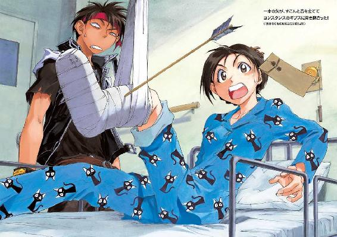
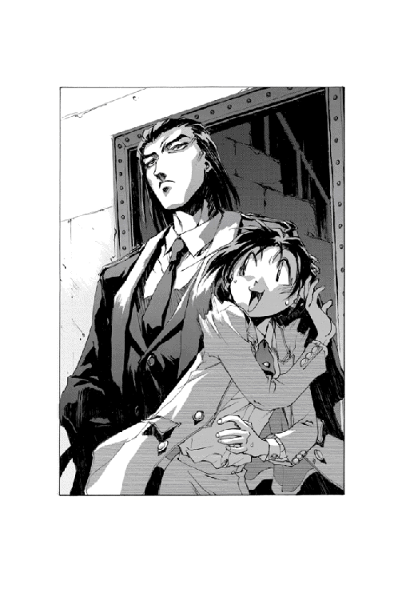
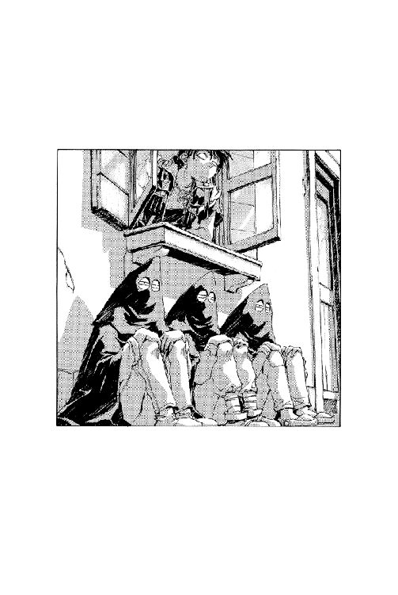
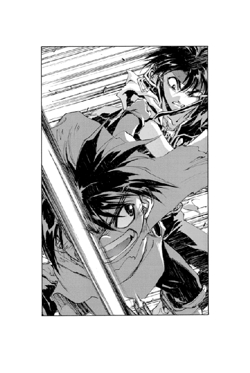

| 魔術士オーフェンしゃべる無謀編3 | |
| 秋田禎信 | |
| (2013) | |
「なんでぼく、弟子に説教されているのかな？」 戦術騎士団最強の魔術士（の一人）ブラディ・バースは、追い詰められていた。 相手は凄腕のヴァンパイア？ 天人種族の殺人人形？ 違う。もっと怖い彼の天敵に、だ。そう。かつての師と幼馴染の娘にして自らの教え子、ラッツベイン・フィンランディである。今日も今日とてマジクは彼女から女性関係の無力さを叱責されているのだ。 「昔は結構、女好きだったわよね」 そこに魔王の妻、クリーオウ・フィンランディまで参戦し、マジクの思い出したくもない過去への扉が開く。そう、あれは遠い過去の日。近所の悪ガキに苛められ、泣きながら歩く帰り道での出来事だ......。

CONTENTS
イラスト：草河遊也 Yuuya Kusaka
デザイン：ヴェイア Veia
「おお！......おおおおお、おお......」
雲に覆われた夜空。
月のない晩、老婆がうめきながら歩いているそこは、いわゆる住宅街だった。黒々とした屋根の影が、濃い紫の夜空の下を黒く埋め尽くしている。
「お......おおお......お......」
老婆はひとりで歩いていた。ずたぼろになった灰色のローブ──もっともボロ布と呼んだほうが適切かもしれなかったが──で、枯れ木のような身体をすっぽりと覆っている。
「なんということ──なんということじゃ。不吉じゃ。不吉な風じゃ......」
白髪が──何十年切っていないのかは不明だが──かなり長く伸びている。老婆自身がかなり小柄なのと、腰が曲がっているのとで、その白髪はほとんど地面に触れるまでになっていた。灰色のローブと、白髪とにくるまれて、かろうじて外界に接しているのは顔面だけである。そのしわくちゃの顔を恐怖に歪ませて、老婆は続けた。
「悪魔じゃ......悪魔が復活するのじゃ」
「にゃあ」
鳴いたのは、近くの塀の上で寝そべっていた猫である。
老婆はちらりとそちらを見上げて──
猫が塀の向こうに逃げていってから、視線をもどした。道の上に。
「わしは──そうじゃ。悪魔と戦うべく、戦士を見いださねばならぬ。強力な戦士を」
老婆はそこで立ち止まり、両腕を振り上げて絶叫した。
「その者は人のうちで最も強くあらねばならぬ！──」
かっ──！
と、空を覆う暗雲が、稲光を発した。
その閃光に一瞬だけ照らされて、老婆は叫び続ける。
「全世界を救うため、戦う者が、勇者が必要なのじゃあああっ！」
「どやかましいいいいいっ！」
と──怒鳴り声と同時。
ばしゃん、と老婆は、水をぶちかけられてずぶ濡れになった。両手を掲げたポーズのまま、びしょ濡れになって固まっていると、一拍おいて空のバケツも飛んでくる。老婆の後頭部に、それはあっさり命中した。
「何時だと思ってやがんだっ！」
ぴしゃりっ！
近くの家の二階の窓が力任せに閉じられる。
その夜、全世界に危機が迫っていることを知っていたのは、その老婆ひとりだけだった。
世界が滅びる前夜であろうとなかろうと、暇な奴は暇なのである。
「暇ねー......」
いつもの食堂のテーブルの上にぐったりとうつ伏せて、力なくぼやいている女がいる。オーフェンは彼女を見下ろしていた。
黒髪、黒目、黒ずくめ、そんな黒魔術士である──それを証しているのは、彼の胸元にかかっているペンダントだった。剣にからみついた、一本脚のドラゴンの紋章。大陸黒魔術の最高峰《牙の塔》で学んだ印である。
女は女で、スーツ姿のこざっぱりした様子である。ただなにやら疲れているのか、うつ伏せになってうだうだとしている。
「もうそろそろ下宿に帰るから、送ってってくれてもいーわよ」
言われてオーフェンは、時計を見やった。針は十一時を指している。
「俺は別に、暇じゃねえんだけどな」
オーフェンは素っ気なく答えて片目をつむり、ドライバーの先を確かめた。宿の主人に借りたものだが、古いわりには悪くない。
そして、テーブルの上に所狭しと並べられた木片やネジをがさがさと探ってから、必要なものを取り上げる。
「この作業、明日の朝までに終わらせなけりゃなんねんだ」
静かにそう言うと、折り畳み式の梯子のようにも見える部分の先端に、拳大のゴム球をネジで固定する。
ふと......疑問に思ったのか、女──コンスタンスがテーブルから顔を上げた。うさんくさげな視線をじっとりとこちらの手元に投げると、半眼で聞いてくる。
「あんたさっきから、なにやってるわけ？」
「内職」
ひとことで、オーフェンは答えた。ゴム球を留めた部品を軽く一振りし──バランスに難ありと判断して、重量の釣り合いを取るためにまた別の部品を探す。
コンスタンスは、テーブルの端にある既に完成した一品──ぎざぎざの口の巨大洗濯ばさみ──をつついて、聞き返した。
「内職......？」
「おう」
オーフェンはうなずきながら、道具の取っ手のほうに重りを付けてみた。今度は、そんなにバランスは悪くない。
「無能部下殴り機、ボンバー君七号を作ってんだ」
「むのう......？」
彼女の動きが、ぴたりと止まる。怪訝な表情を浮かべて、今度はさっきも触っていた洗濯ばさみのようなものを指さすと、
「ねえ、これは？」
「無能部下はさみ機、ボンバー君六号」
「........................」
かなり長い沈黙のあと、彼女が見つけたのは、部品の下に埋もれていた手動ドリルの改造版である。
「......これは？」
「無能部下えぐり機、ボンバー君四号」
「............」
「ボンバー君シリーズは力作だからな。七種類ものバリエーションで、無能な部下をケガさせずにいたぶれる！ まさに夢のシリーズ！ レインボーカラーに塗装すれば完成だ」
「ねえ、オーフェン」
震え声をともなったひきつり笑顔で、コンスタンス──
「聞きたいんだけど、これって......誰に頼まれて作ってるわけ？」
「知りたいか？ いや、どうせ次に任務に失敗した時には知ることになるだろーから、明後日くらいには判明すると思うんだが」
「やめてちょーだいよ！ あの部長にそーゆうもの渡すのはっ！」
繰り返して叫びながら、コンスタンスが立ち上がる。
「ただでさえ最近、あの部長ってば、あごの骨砕き機とか妙なものを作って喜んでるんだから！」
「実はあれも俺がヒントあげたんだ」
「だからどーしてそーゆうことをすんの！」
「問題はこの一号なんだよな。無能部下勝手に髪染め機と名付けたんだが、染められて一番嫌な色ってなんなんだろうな」
「あんたちょっと人の話を！」
「まあいいか。なんとなれば染料の代わりにマスタードとか入れて、無能部下そんなことやられたらなんかブルーになるよな機ってことにしてもいいし」
「なにがいいのよぉぉぉっ⁉」
と──
「ちょっと待て！」
オーフェンはボンバー君七号を放り出し、はっと立ち上がった。
「待ってほしいのはわたしだわ」
なおも不満そうに、彼女。が、オーフェンは構わずに続けた。あたりを見回しながら、
「なんか今、急に明るくならなかったか？」
「え？」
もとより、ガス灯しか照明のない食堂は、あまり明るくはない──だが、いきなり白昼並みの光が窓から差し込んできていた。
「これはもしや」
オーフェンは、ぐっと拳を握った。
「ボンバー君シリーズの夜明けなのか？」
「絶対違う絶対」
冷たく言い放ちながら、コンスタンスは足早に窓へと駆け寄っていく。そして......
「なぁに？ あれ......」
と、ひどくうさんくさげな表情で窓の外を見つめる。
オーフェンも、窓へと歩いていった。
「あん？」
片眉を上げて、絶句する。
窓から見えるのは、外の通りである。裏路地街の名の通り、あまり広い道ではないが、文字通りの路地というわけでもない。
その路地を眺めて、オーフェンが最初に見たのは──
無数のかがり火の中で不気味に祈祷を続ける老婆だった。
「悪魔じゃ悪魔！ 悪魔が来るのじゃ」
オレンジ色の灯明の中、白髪を振り回して小柄な老婆が踊り狂う。
道の両端にずらりと並んだかがり火を、その老婆がどうやって調達したのかはオーフェンも知る由はなかったが、曇った夜空を下からあぶるように、炎が赤々と燃えていた。
「悪魔が来るぅぅ。悪魔が来るぅぅ。悪魔が来たりて鍋磨くぅぅぅぅ」
じっと──それを見ていた。
腕組みし、ただじっと。あれから宿の外に出て、オーフェンは、ただ見ていた。その表情が、苦々しくこわばっていく。
彼は横にいるコンスタンスのほうへ、ゆっくりと向きやり、うめくように言った。
「なあ......かかわらないほうがいいような気がするんだが......」
コンスタンスもまた、自分と似たような表情を浮かべている。
「わたしだって力の限りそー思ってるわよ」
うんうんと、オーフェンはうなずいた。くるりときびすを返して、コンスタンスの肩をたたく。
「なら帰ろうぜ。俺、六号の威力強化をしなけりゃなんねんだ」
「それはやめてお願いだから」
彼女は即座にそう言ってくると、さらに顔をしかめ、
「あとちょっと待ってよ。もう少し見ておいたほうがよくない？」
カケラもよいとは思わなかったが、オーフェンは一応立ち止まった。
「おお！ 悪魔が来るぞい。悪魔が来るぞい。やっほ、えっほほ、らっほっほ」
いつの間にか祈祷は謎の踊りに変じている。
オーフェンは、眉間のあたりに親指を当てて、きつく目を閉じた。
「............なあ......」
呼びかけに、一瞬ならず同意の気配を見せる──が、コンスタンスはかぶりを振ると、
「どのみち、道路で火を焚くのだけはやめさせないとならないでしょ。禁止行為だもの」
「あの踊りのほうがよほど禁止だと思うが」
気合いを入れて肩をいからせ、大股で老婆のほうに歩き出すコンスタンスに、オーフェンはぼやきながらついていった。
「ちょっと！ そこのお婆さん！」
指を突きつけながら進む彼女の声に──
老婆は、すぐさま反応してきた。顔を上げ、くるりとこちらを向く。
ただし、首から下はしごく器用に、不気味な踊りを続けていた。
「うっ......」
その異様な様に、さすがにコンスタンスは立ち止まった。振り向いて言ってくる。
「ねえ......どーしよーか」
「どうするって──お前、一応仮にもまあ名目上は警官だろ」
「それもそうね」
「反論なしか......お前」
「ねえ、どうしよう」
「だから、お前、注意するんだろ？ さっさとしろよ」
「うー......」
かなり気の進まない様子で、（まあ無理もないが）、彼女は再び老婆の方へと向き直った。呼吸を整えてから、口を開きかける。
その瞬間である。老婆のほうが早かった。
「むうっ⁉ そなたらはぁぁぁっ⁉」
あくまで踊りはやめないまま──顔だけこちらに向けて、聞いたらしばらくは夜中にトイレにも行けなくなりそうな声で絶叫する。
さらには、意地でも踊りは中断しないまま、かさかさと妙な足音を立ててこちらへと駆け寄ってきた。
走りながら、続ける。
「わしの目に狂いはない！ 間違いないぞよ！ 異世界より来たりし勇者じゃな！」
「へ？」
間の抜けた声をあげながらオーフェンとコンスタンスは、きょろきょろとあたりを見回した。そして──不意に、自分たちのあご先を指さすと、
「俺のことか？」
「わたしのこと？」
同時に聞き返した。
「うむ！」
老婆が、重々しくうなずく。その時点で、もうすぐそばまで近寄ってきている。踊りもやめていた。その代わり──かどうかは不明だが──ローブの中から突き出した、骨と皮だけの腕でガッツポーズを取る。そのまま続けた。
「間違いない！ わしの祈祷により、異世界からはせ参じたというわけじゃな。この世の悪を滅ぼすために！」
「............」
しばしの沈黙──
そしてオーフェンは、はっと気づいた。愕然と自分の両手を見下ろし、
「なんだって⁉ 俺が異世界からの戦士⁉」
「ちょっと......オーフェン......？」
青ざめて、壊れたおもちゃを見下ろすような冷たい視線でコンスタンスがうめく。
オーフェンは、しーっと言って彼女を制した。小声で続ける。
「いいから。俺が適当に調子を合わせて、あの婆さん引きとめておくから、お前は向こうの通りの病院から先生呼んでこいよ」
「分かったわ」
すぐに真顔で、うなずくコンスタンス。
「待たんかい」
冷めた声で突っ込んだのは、老婆である。
「察するところ、そなたらわしのことを、戯言を叫びながら夜中に徘徊する、かなりヤバめで迷惑な美しい熟女だと思っておるな？」
「おおっ！」
オーフェンは、うろたえて後ずさりした。
「戯言を叫びながら夜中に徘徊する、かなりヤバめで迷惑な婆さんの割にはかなりの的中率だ。八十パーセントは正解してるぞ」
「多分、そうじゃないって言いたいんだと思うんだけど......」
と、コンスタンス。
老婆は、彼女をびしいと指さした。
「その通りじゃ！」
「どの通りだってんだ」
半眼で、オーフェンはぼやいた。煌々と燃えているかがり火に向けて腕を一巡させ、示す。非難を込めて、彼は続けた。
「こんなに火ィ燃やして。見回りの連中にフクロにされっぞ。見たところ消火用の水も用意してねえじゃねえか」
「異世界の戦士を召喚しようとしとるのに、そんなもんいちいち用意するかいっ！」
老婆が、抗弁して唾を飛ばす。
その唾を避けながら、オーフェンは、つい聞き返してしまった。
「なんなんだよ異世界の戦士ってのは」
言ってから、しまったと思う。
だが遅かった。老婆は、待ってましたとばかりに、しわだらけの顔ににんまりと不気味な笑みを浮かべてみせた。
「それは話せば、長くなるのじゃ......」
そのまま、遠い目になる。老婆は静かに夜空を指さし、続けた。
「今宵は見えぬが、あの位置には凶星がありよった──昨日まではじゃがな。明け方に弾けて消えたのじゃ。わしは凶星の異常にいち早く気づき......」
「あと二十分ほどひとりでしゃべり続けるに銅貨二枚」
「わたしは十七分ね」
「賭けるなぁぁぁぁぁぁっ！」
老婆が、絶叫する。
オーフェンは懐から出しかけていた銅貨をまた収めると、うんざりと向き直った。
「ンなこと言ったって、聞きたくもないヨタ話を聞かされるこっちの身にもなってみろよな。賭けたっていいだろが。ここで銅貨二枚かせげれば、明日を食いつなぐことだって夢じゃなくなるだろ」
「夢って、あんた......」
ぞっとした様子で、コンスタンスが突っ込んでくるが、あえて無視する。
「むう。最近の若い者は......」
ぜいぜいと息を切らせて、老婆がうめき声をあげた。ある程度呼吸を整えてから、小さな肩をすくめ、
「手短に言えば、じゃ。今宵、悪魔が復活することを知ったわしは、それに対抗できる戦士を見つけようとしていたのじゃ」
「やっぱり病院行きじゃねえか」
「なんでじゃ！ わしはボケとるわけでも錯乱しとるわけでもないぞよっ！」
「みんなそう言うんだって、ほらほら。おぶってってやるから」
「ぬうう。異世界の戦士におぶられて病院に連れられていっては、なにがなんだか......」
「ねえ、お婆さん」
少し離れたところから（逃げているのだ）、コンスタンスが不思議そうに尋ねる。
「さっきから、なんでわたしたちが異世界の戦士なわけ？」
「決まっておろうが」
老婆は得意げに胸を張り、一番近いところで燃えているかがり火を指さした。
「このよーな神聖な儀式を見て近寄ってくるのは、聖なる異世界の戦士のほかにあるわけがなかろう」
「う〜む」
オーフェンとコンスタンスは、いっしょにうめいた。ふたりそっくりに腕組みして、
「納得はできんが反論の余地はないな......」
「確かに、さっきの踊りを見て、のこのこと近寄ってくるような人間、この世界のどこにもいなさそうだもんねー」
「うむうむ。分かってくれればよいのじゃ。というわけで、異世界の若人たちよ。わしのもとに集い、悪魔を退治......」
老婆のせりふは、そこで途切れた。
ひきつったように、その場で硬直する。
「............」
思い当たることがあって──オーフェンは、背後に向き直った。と、そこに、道をふさぐように、ずらりと男たちが並んでいる......
年齢はまちまち。十代から三十代というところか誰もみな、どこにでもいるような普通の男たちである。ただ、みな一様に左腕に、腕章をつけている。
『第四十八町会青年団』
そして、先頭の男が旗を持っていた。そこらの文具屋で調達できそうな、安っぽい旗であるが──『防災活動強化週間実施中』とでっかく記してある。
その男たちのうちのひとり──誰でもいいが──が、低い声音でぼそりと声を出す。
「婆さんか......そこで火をたいてんのは」
「あ......いや......その......」
口ごもる老婆を横目で見ながら、オーフェンとコンスタンスは、そそくさと道のわきに退避した。老婆だけが取り残されて、こちらと青年団とを、焦ったように見比べている。
青年団の声は、あくまで静かだった。静かに震えていた。
「俺らも毎夜毎夜、仕事に疲れた足を引きずって街を見回ったけどよ......初めてだなぁ、こんなに派手な付け火はよぉ」
全員いっせいに、うんうんと二度うなずく。
オーフェンも同時に、うなずいてやった。コンスタンスは、ちょっと遅れて、あわてたように素早く二回うなずいている。
老婆だけが置き去りにされて、後ずさりしていた。かがり火が燃えるほうへと。それは結局、青年団の視線を再び火のほうへと誘導することになった。
だからというわけでもないだろう──いや、確かにそうだからか。青年団の男たちの瞳に、ぽっと炎の色が映る。
「かかあに尻蹴っぽられて、いやいや街を巡り歩き、今夜が最後の日だったんだよ......なんも危ねえことがなけりゃ、今夜で終わりってことになってたんだ......」
オーフェンは胸元で聖印を切った──魔術士たちに信じる神はないが。コンスタンスは単に、目を覆っている。
老婆は、青年団と向き合って、しばしひきつった硬直を続けていたが──やがて、立ち直ったようだった。
汗を垂らしながら、うめくのが聞こえる。
「むう......このよーに大勢、異世界の戦士が現れるとは......」
「なにを言ってやがるこの婆あぁぁぁっ！」
青年団が、いっせいに怒鳴り声をあげた。
「で、結局なんなんだ？ 悪魔ってのは」
さすがにフクロにまではされずに老婆も解放され、青年団の手によって、かがり火が撤去されたあと──
オーフェンらは、もとの食堂にもどっていた。例の老婆も連れてである。病院行きは取りやめになった。この老婆、保険に入っていないらしい。
さっきと同じテーブルで、ボンバー君やら工具やらが散らかっているのもそのままだった。オーフェンは手近な部品を積み重ねてわきにどけながら、老婆の返事を待った。
「うむ」
身長がないため椅子の上に補助椅子を置き、さらに正座して、それでようやく胸がテーブルの上に出ている。老婆は愁眉をさらに翳らせ、薄い胸板から息を吐き出した。
「話せば、長くなるのじゃが......」
「そーいやコギー、お前んとこって三人姉妹なんだって？」
「あれ、キースにでも聞いたの？ そうよ」
「そなたら、聞く気があるんかい！」
じっと半眼でこちらを見やって、老婆が釘を刺してくる。が、オーフェンは退かずに言い返した。
「手短に言う気があるんなら、聞いてやってもいいぞ」
「ったく、最近の若い者は風情を知らん」
老婆はそう毒づいてから、さらに口をとがらせた。
「だいたいわしらが若い頃は、先達を尊敬し、その言葉を尊んだもんじゃ。人より長く生きた者の知恵には価値がある。それが分かっとったもんじゃ。やはりこの国は、若い者から滅びていくんかいのう」
それを聞きながら──いや、聞き流しながらオーフェンは、涼しい顔でテーブルの少し離れたところにある工具を取り上げた。
「誰から滅びるか試してみるか？」
「手短に話すのが良いと、わしも思っておったところじゃよ、うむ」
老婆はその言葉にというより、こちらの手の中の糸ノコを見て、あっさり言い直した。
「つまりじゃ、悪魔というのは、とても恐ろしいのじゃ」
「どんなのよ」
と聞くコンスタンスに、うなずいて、老婆。
「うむ。とっても恐ろしいものなのじゃ」
はぁぁぁぁぁぁぁぁぁぁぁぁぁぁぁぁ。
オーフェンは、深々と嘆息しながら席を立った。ボンバー君をテーブルに置き、すたすたと老婆の背後へと回って──
細い首筋に糸ノコを突きつける。
「不快指数が増すごとに、一回引くからな」
「実はわしも、そろそろ核心に迫ったほうが良かろうと思っておったところなのじゃ」
ぴしっと姿勢を正して、老婆が断言する。
「つまりじゃな......」
「ふんふん」
コンスタンスが、テーブルの上に乗りだして聞く態勢を作った。それを見据えて──今度こそ真剣な眼差しで、老婆が口を開く。
「とぉぉぉぉぉぉぉぉぉぉぉぉっても恐ろしい悪魔なのじゃ」
「まあ、首がいらないと言うのなら、俺も特に止めはせんが......」
「いや、だからじゃな！」
糸ノコを（かなり本気で）引こうと力を込めたこちらの腕を、わっしとつかんで老婆がわめき声をあげる。
「まだわしにも分からんのじゃ、つまり。なにしろ、まだ復活しとらんのじゃからして」
「復活ねえ」
糸ノコをテーブルの上に投げ出して、オーフェンは老婆の後ろから離れた。天井を見上げ、心当たりを探してみる。
「復活する悪魔......悪魔。覚えがねえなあ」
「いんや。あるはずじゃぞ。歴史上、悪魔と呼ばれたあの男......」
「あくま──」
つぶやいて、ふと──
オーフェンは、はっと顔色を変えた。
「悪魔の王子か？」
「なにそれ」
緊張感などカケラもなく、コンスタンスが聞き返してくる。両手を組み合わせてあごを支え、肘をテーブルにつけていた。
オーフェンは、彼女のほうを向き──
「昔、王家にあって強大な魔力を有した狂気の王子......ヒュキオエラ王子。強烈な魔王崇拝者だったことでも知られている」
「ああ。そーいや歴史でそんなの習ったような気もするけど」
コンスタンスはあくまで気楽だったが、オーフェンは、神妙な眼差しをそのまま老婆のほうに移した。老婆もじっとこちらを見返し、骨張った指を絡み合う蜘蛛のように組み合わせている。
「......そなた、異世界の戦士のくせに博識じゃのう」
「だからもう異世界はいーから」
オーフェンは少し意気をくじかれ、肩をコケさせながら、続けた。
「彼は貴族連盟の手により抹殺された。それがのちの貴族内革命につながっていくんだ」
「そう。その悪魔が、復活するのじゃ」
鈍く震える声で、老婆がわめく。
オーフェンはただ息を呑み、立ちつくしていた。そして......唐突に半眼になる。
「おいコラ、婆あ」
「なんじゃね？」
ポーズを変えないまま、老婆が応じる。
オーフェンは冷たく聞いた。
「なんで死んだ人間が生き返るんだよ」
「なに言ってるの！ オーフェン⁉」
ばんっ！ と立ち上がったのは──
コンスタンスである。彼女はふるふると握り拳に力を込めて、大声で言ってきた。
「死後の世界をまだ信じないつもりなのっ⁉ こーなったら、わたしの実家の怪談・第二弾！ 楽しげに震える合わせ鏡の白い手のお話を聞かせてあげなければならないよーね！」
「お前の家は怪奇博物館かい！ 過去になんかよっぽどあくどいことでもしてきたんじゃねーのか？」
「なによその言いがかりはっ！ 確かに父さんの葬式の時には、近所の子供に泥団子投げつけられたり、ちょっと離れた物陰からくすくす笑いが聞こえてきたりしたけどっ！」
「いや......あの、そーゆうふうに盛り上がってもらっても困るんじゃが」
おずおずと指先を差し伸べてきて、老婆。
ぎろりとにらみつけて、オーフェンは聞き直した。
「てめえがさっさと話さねえからだろ。で、結局なにがどーなってるってんだよ。王子が復活するんなら、そう思う根拠はなんだ？」
「うむ。話せば長く──」
がたっ。
オーフェンが黙って椅子を振りかぶると、老婆は素早くあさってを向いて、
「ならないように努力するのが美徳じゃと思うのじゃ。つまり、発端は──」
その、刹那だった。
がしゃああああああんっ！
いきなり、窓ガラスをぶち破って、食堂に石が投げ込まれる。
「なんだっ⁉」
石は──
窓を破って放り込まれ、放物線を描いて、床の上に......落ちなかった。
床の上、一メートルほどの高さのところに、空中で停止している。
「婆さん⁉」
オーフェンは、老婆に向かって尋ねるように叫んだ。老婆は驚愕に目を見開き、身体を震わせている。
「こ、これは......！」
声に応えるように、石は変化を始めていた。
細かく振動しながら、膨張し──
一瞬後には、石は木の人形になっていた。
「............」
沈黙ののち、コンスタンスが首を傾げる。
「なんで木になるのかしら......」
「婆さん？」
オーフェンが聞くと、老婆ははらはらと感動の涙をこぼしていた。
「うむうむ......ヒロインが事情を話そうとしたところに襲いかかってくる刺客その一！ 王道じゃ王道じゃ」
「存在の引き算......か？」
老婆のほうはとりあえず無視して、オーフェンは小さくつぶやいた。耳ざとく、コンスタンスが聞き返してくる。
「引き算？」
「だとしたら......王子の話、あながち──」
オーフェンは答えず、現れた木の人形と対峙した。構えていた椅子をぐっと握りなおす。
木の人形には、目がない。動きも緩慢で、自分がどちらを向いたらいいのかもよく分かっていないような有様だった。むーむーうめきながら、頭をふらふらさせている。
「まあいいさ。たたき壊すだけだ」
オーフェンは独りごちると、椅子を振り上げた。と──
「うつけ者ぉぉぉぉぉぉぉぉっ！」
突如として響いた怒鳴り声は、無論、老婆のものである。
「へ？」
オーフェンが向きやると、老婆は親指を下に向けてブーイングのポーズを取り、
「異世界の戦士が、椅子で戦うとは何事じゃっ⁉」
「やかましいわぁぁぁぁっ！」
オーフェンは怒鳴り返したが、老婆はまったく動じずにブーイングを続けると、
「王道も風情もお約束もないっ！ そんなものは、勝利の女神たるわしが認めぬぞっ！」
「あーあー。はいはい」
やけくそになってうなずきながら、オーフェンは椅子を下ろした。右腕を差し上げて、ぶつぶつとこぼす。
「くそったれが。屋内で魔術を使うと、あとでマジクの奴がうるせえんだけどなぁ」
文句を言いつつ集中する。
「我は放つ光の──」
「またもやうつけ者ぉぉぉぉぉぉぉっ！」
「............！」
物言い第二弾に、集中が途切れる。渋面を作って、オーフェンはまた老婆に向き直った。
「今度はなんだ？」
聞く。と、老婆は深々とうなずいた。
「そなたは戦士じゃからして、呪文は使えんのじゃ」
「なんのことだ⁉」
叫ぶこちらのことはまるっきり構わず、老婆はマイペースで椅子から飛び降りた。すたすたと近寄ってくると、ローブの中からなにやらごそごそと取り出す。
「これを使うのじゃ」
その取り出したなにかを手渡してくる。
「この伝説の剣を！」
「おうっ！」
答えて、オーフェンは受け取った。剣ならば扱える。彼はそれを、高々と掲げた。
「............⁉」
掲げて──凍り付いた。剣は、錆びついている上に刀身が半ばで折れていた。
老婆が、あっさりと続ける。
「世界のどこかから折れた剣先を探し出し、飲んだくれの鍛冶屋を家出息子と対面させてやってから、修復してもらうのじゃ」
「なんじゃそりゃああああああっ！」
オーフェンが、頭を抱えて絶叫した、その時である。
声をあげたのは、コンスタンス──
「............え？」
理解しかねた様子の、ほうけた声。
瞬間......
むおおおおおお！
木人が、雄叫びをあげた。そして、その叫びが終わらないうちに、一瞬で突進してくる。
「────⁉」
オーフェンは声に出さないまま叫び、コンスタンスを突き飛ばすと、自分も後方に跳躍した。
そのあとを──
つまり老婆の上を、木人は走り抜けていく。
「ほんぎええええええっ！」
老婆の悲鳴を残して、木人は向こうの壁まで駆け抜けていくと、壁に激突する寸前でぴたりと立ち止まった。またゆっくりとした動作にもどって......のろのろと、こちらを向く。
「し、しゃれになんねえな」
もみくちゃになった老婆を見下ろして、オーフェンはうめいた。
再び、木人が突進の構えを見せる。
「とりあえずっ！」
オーフェンは叫ぶと、近くのテーブルを、木人が突進してくる方向へと蹴り出した。だが、木人は躊躇なく突っ込んでくる。
「駄目か⁉」
覚悟を決めて、横に逃げる。粉々に砕けるテーブルの破片と、さっきよりか細くなった老婆の悲鳴とを背後から気配で感じつつ、オーフェンは駆け抜けていった木人の背中を見やった。木人はまた反対側の壁の手前で止まり、ぎしぎしと向きを変える。
「オーフェェェン！」
突き飛ばした際に離ればなれになったコンスタンスが、泣き声じみた声をあげる。木人が立ち止まったのが彼女の手前だったのだ。
「さっさと倒してよぉぉっ！ いつもみたいに素手で殴り倒せばいいでしょー！」
「そんなもんと取っ組み合いができるかっ」
オーフェンは叫び返した。コンスタンスは頭を抱えて泣きわめいている。
「そんなこと言ったって、わたしとってもピーンチじゃない！」
もっとも、木人は彼女のことは眼中にないらしく、再びこちら──いや、踏みつぶされたままの老婆のほうへと向きを変えている。
「ば......婆さん？ 即座に死んだか？」
少しビビりつつ、オーフェンは聞いてみた。砕けたテーブルの下に埋もれ、ふらふらと、老婆が身を起こす。
「ぬう。かなりの強敵じゃな」
「いや、魔術を使えばすぐに倒せる......」
オーフェンがうめくが──
「そんなことは許さんぞ」
頑固にこだわる老婆。
「なにやってんのよ、あんたたちはっ！」
たまらずに、コンスタンスが大声を張りあげるのが聞こえてきた。彼女は木人を避けるように身体を遠ざけながら、
「なんか武器があればいいわけでしょ⁉」
そう叫んで彼女が気づいたのは──
テーブルである。例の工具やら部品やらが広げられている、もとのテーブル。
「これでっ！」
「それはっ⁉」
彼女がとっさにつかんだものを見て、オーフェンは驚愕の声をあげた。
「ボンバー君二号！ またの名を──」
だが彼女は構わずに、手に持ったブラックジャックのようなものを、木人の後頭部へと振り下ろしていた。
かっ──！
爆音は、食堂に轟いただけ、耳には聞こえなかった。少なくともそのような気がした。
爆発のあとに、残ったのは──
もはや動かない木人の下半身だけである。
すすだらけになり、まったくびっくりひきつった表情で、自分の手元──ボンバー君二号を見下ろすコンスタンスを遠くから眺めて、オーフェンは静かに告げた。
「ちなみにそれは無能部下焦がし機だ。仕込んだ火薬の量が企業秘密」
「なに考えてんの、あんたはぁぁぁっ！」
コンスタンスが絶叫する。
「こんなの部長に渡してわたしを殺す気⁉」
「いんや。ただおもしろいだろうと思って」
「さっきの『ケガさせずにいたぶれる』ってのはなんだったのよ！ こんなの死ぬわよ！ 確実にっ！」
「あれはただの宣伝文句だ」
「あんたはねぇぇぇぇぇっ！」
彼女は、こちらへと詰め寄ろうとし──
そして、いつの間にか木人のそばに移動していた老婆につまずいた。コンスタンスは立ち止まったが、老婆は気にもせず、その場ではらはらと涙を流している。
「むうう。窮地にあって、一瞬の機転で強敵を倒す。王道じゃああ」
「火力の勝利という気もするが......」
オーフェンが密かに指摘するが、老婆は聞いた様子もない。
「わしは確信するじゃ！ これにてますます王道を極め、忌むべき悪魔をも倒せると！」
「いや、俺は別に、あんたに協力するとは一言も──」
その、直後である。
不気味な声が響いたのは──
《くっくっく......これで勝ったとでも思うのか、女王シビリアスよ......》
「なんじゃと⁉」
老婆が、弾かれたように声の聞こえてきたほうへと向き直る。
声を発したのは──上半身が完全に吹っ飛んだ木人だった。
だが、そんなことよりも、オーフェンはぞっとしながら聞き返していた。
「婆さん......」
震え声で続ける。
「あんた、名前があったのか⁉」
「『女王』は無視かいっ！」
老婆──シビリアスが、叫ぶ。
そうしているうちに、木人の下半身は、先の石として投げ込まれた時そうしたように、振動を始めた。そしてまた、その振動が終わった瞬間には、──
木人の下半身は消えて、新たなる人影が現れている。
「............紙？」
呆れたようなコンスタンスのつぶやき通り、そこに立っていたのは、紙ぺらでできた人形だった。どうコメントすべきか動きが取れずにいるオーフェンを無視して、シビリアスが、骨張った腕をそちらに向ける。
「まさか、あなた自身じゃったとはな──我が父、ヒュキオエラよ！」
「な・にぃぃぃぃぃぃっ⁉」
オーフェンのあげた驚きの絶叫に──その吐いた息に押しやられるようにひらひらと、紙人形は笑っていた......
（なんとなく続く）
夜は静かに過ぎていく。
「......王子？」
疑わしげなコンスタンスのつぶやきには答えず──オーフェンは、あんぐりと口を開いたまま硬直していた。テーブルをひっくり返されたりして散らかった食堂の中は、乾いた沈黙に凍り付いていた。沈黙の粉をまかれたように、吸った空気もぱさぱさと苦い。
「王子......様？」
ぼそぼそと、見えない相手と会話でもしている口調で、コンスタンス。まだ結論には達しないのか、とうとう暗算でもするように目を閉じる。つぶやく声も低くなり、ぶつぶつひとりで続ける......
砕かれたテーブルの残骸や、あちこちに蹴り飛ばされた椅子。とにかく散らかっている。宿の亭主がいたならば、目を回したろう──いやどちらかというと亭主の息子がいたならば。幸い、ふたりは今夜はいない。実を言えばオーフェンは留守番を押しつけられていたのである。
まあどのみち、いない人間のことはどうでもいい。その散乱する木片やらなにやらの真ん中で、ぼろぼろになって立っている白髪の老婆も、どうでもいい。
問題は、老婆と対峙しながらへらへら揺れている紙の人形だった。
と、コンスタンスが、ぱかと目を開く。じっと据えた眼差しを紙人形へと注ぎ、指を指して、叫び声をあげる──
「あれが王子さまぁぁぁぁぁぁぁぁぁ⁉」
「やかましいわぁぁぁっ！」
オーフェンは力の限り、彼女に絶叫した。
だってぇ、と拗ねた表情を、コンスタンスが返してくる。指を引っ込めると、小さくいやいやをするように肩を揺らして、
「あんまりじゃない？ これって」
「ンなこと言ったって仕方ねえだろ。存在が引き算されてんだから」
静かにそう答えると、ぴくり──いや、へらり、と紙人形が顔をこちらに向ける。
《ほう。貴様、我が秘法を知っているのか》
どこから声を出しているのか不明だが、話しながらもへらへら揺れて、紙人形──話を信じるならばヒュキオエラ王子は、今度は紙でできた指先までもこちらに向けた。
目の前にいる老婆──こちらの話を信じるならば、かの王子の娘シビリアス──を無視するような形で、続ける。
《魔術士なのだな？ 二百年を経て蘇り、後世に生き延びることができた我が後輩たちを見ることができようとは、実に愉快》
「その二百年前の時代だったらいざ知らず、今は見習い学生だって〝存在の引き算〟は知ってるさ」
《ほほう。それだけ普及したと》
「するかぁぁぁぁぁぁぁぁっ！」
叫びつつ、どばし、と床を足でたたく。
だが、王子は聞く耳ない様子で、へらへらとひとりうなずき、
《うむ。我が師の創始せし、一存在固定変換の秘義。やはり我らは来るべき未来を正しく読みとりその先駆を》
「違うと言ってるだろーがっ！」
「......なんの話をしてんのよ」
まだ少しショックは抜けていない様子で、コンスタンスが言ってくる。オーフェンはぎろりと彼女をにらみやり、答えた。
「......だから、存在の引き算だよ」
「なにそれ」
素っ気なく聞き返しながら、コンスタンスは紙人形のほうを見つめている。
オーフェンは深々と嘆息した。
「人間を人間以外のものに変換する理論だ」
「......人間以外って......それが紙なわけ？」
「いや、だから、それにも一応理由があるんだよ。じゃなきゃ、あんなわざわざ紙なんぞに成り下がる馬鹿がいるわけねえだろ」
《おいっ！》
紙人形が、抗議の声をあげる──
オーフェンは、ずっと固めていた拳を紙人形に向けた。
「うるせえ、紙！」
《紙と呼ぶな！ 紙と！》
さすがに王子が、叫び返してくる。が、オーフェンはきっぱりとかぶりを振った。
「黙れ紙！」
《だから紙と呼ぶなと》
「やかましい！ 紙は紙だ、紙！ いいか、紙！ 紙の分際で直立歩行しやがって、紙は紙らしく洟でもかまれてろ！ なぜなら紙だからだ！ 分かったか紙！」
《うううううう》
王子がひるんだ隙に、オーフェンはきらりと目を輝かせると、さらに語気を強めた。
「とにかく紙が！ へらへらすんな紙！ 薄っぺらいんだ紙！ 水かけてしおしおにすんぞ紙！ はっとくと湿気を吸って縦目にたわむぞ紙！」
《あああ、そんな専門的なことまで》
ひらひらと落ち込むヒュキオエラ王子（紙）をじっと見下ろし、オーフェンは、さっと身構えた。弓を引き絞るように右手を身体に引きつけて、大音声をあげる。
「と、隙を見て──我は放つ光の白刃っ！」
かっ──！
膨れ上がった光熱波の爆裂は、食堂の床ごと、紙人形を吹き飛ばす。
巻き上がる炎の中に消える紙の姿を確認してから、オーフェンは、老婆を素早く担ぎ上げ、ちらとコンスタンスに目配せした。
「おし。行くぞコギー」
突然のささやきに、虚を突かれたのか、コンスタンスが驚いたように顔を上げる。
「へ？」
すっとんきょうな声で聞き返しながら、コンスタンスは炎を見やった。
王子の姿は、もううかがうことはできない。だが......
「今のうちに逃げるんだよ！」
オーフェンは彼女の手をひっつかむと、そのままダッシュで食堂を飛び出していった。
「きゃああああああああああああああ──」
とにかくひたすら全力で。
立ち止まることなく、オーフェンは走りつづけていた。
いくら訓練されたところで、人間がダッシュできる距離はせいぜい百メートル足らず。しかも老婆を抱えて、コンスタンスの手を引っぱっている。全力はものの数秒ももたなかったろう──だがそれでもオーフェンは力の続く限り足を止めるつもりはなかった。
「きゃああああああああああああああ──」
複雑な裏路地街を左右に曲がりながら、ひた走る。時刻も真夜中近いうえ、もともと人通りの少ない道だけに、どうしたのだと呼び止められることもないが、そうされたところで止まるつもりはさらさらなかった。
「きゃああああああああああああああ──」
さっきから手を引いているコンスタンスの悲鳴が、全力疾走のあとを追うように響きわたっている。ついでになにやら派手な泣き声と、地面を引きずるような音、曲がり角を曲がるたびに、振り子のようになにかが揺れて壁に激突するのが分かったが、だからといって止まるつもりはまったく──
「............」
ふと、なにかに気づいて、オーフェンはぴたりと立ち止まった。
悲鳴も、泣き声も、引きずる音も、激突音も同時に消える。いや──泣き声だけは残っていたが。
ひっく、えぐっ......というすすり泣きを後ろ耳に、オーフェンはそろりと汗を垂らした。
「え〜と」
コンスタンスの手をはなし、老婆は抱えたまま、振り返る。
かなり走ったので、もといた宿屋からはだいぶ離れている──あのあと紙が正気にもどったとして、追いかけてくるまでしばらくはかかるだろう。彼らがいるのは、奥まった路地のひとつである。そこで──
泥だらけでぼろぼろになり、あまつさえ額からだくだくと血をあふれさせている彼女に向かって、オーフェンは静かに口を開いた。
「そー言えばコギー。お前、いつまでも人に引きずられてないで、自分の足で走ってくれないと、非常に重くてとても迷惑だぞ」
「なんなのよそれはぁぁぁぁっ！」
泣きながら、コンスタンスが絶叫する。
「うむうむ」
うめいたのは、老婆だった。抱えられたそのままで、何度もうなずいている。
「傷ついた端役女Ａを介抱するヒーロー。王道のような気がするじゃ」
「端役女？」
半眼で、コンスタンス。
オーフェンはそのふたりを見下ろしながら、ぺいと老婆を放り出した。白髪の老婆をにらみやり、うめく。
「ンな些細なことはいいんだよ」
「些細？」
傷口から噴き出る血を指さして口をはさんでくるコンスタンスは当然無視して、
「これだけははっきり聞いておきたいんだけどな、婆さん」
「......なんじゃ？」
「あれは本当にヒュキオエラ王子なのか？」
「無論じゃ」
縦に首を振り、シビリアスは右手を握って親指だけを立てるポーズを取り、さらに斜めに構えてみせた。
「......いや別にポーズは取らなくていいんだが......」
ぼやくオーフェンに、取り合う気配もない。
「ふっふっ。青いのう。このよーな重大な発言にはポーズは不可欠というのが王道じゃ」
「その王道ってのが釈然としないんだが」
「ねえ、オーフェン」
ごしごしと血をぬぐいながら、コンスタンスが口をはさんでくる。
「今のって、重大なことなの？」
「多分な」
と、ため息をつきつつオーフェンは続けた。
「大陸魔術史上には、究極のバケモノだとか至高のツワモノだとか無敵のクセモノだとか、いろんな魔術士が伝えられているんだが」
「まあ、そういうもんよね」
「ヒュキオエラ王子を分類するなら──」
オーフェンは、ふと口ごもって腕組みした。そのまま単語を探す──と、ようやく思いついて、彼はぽんと手を打った。
「赫々たるキワモノ」
「......なんか、金銀銅メダルと繰り下がっていって、一〇二位の砂メダルをもらいましたみたいなノリね、それって」
コンスタンスが、分かりにくいことを言ってくる。
「でもあの紙がそのヒュキオエラ王子とかいう人だったとして、なんか意味があんの？」
「いや、だからな......」
オーフェンが、説明しようと彼女に顔を近づけた。その時だった──
《つまり、わたしには勝てない、ということだよ......》
ずざりっ......
と、足音でもすればそれなりに決まったのだろうが──とっさに振り返った彼らの目に実際に入ったのは、根性のない昆布のようにひらひらと風に流れて降りてくる、黒こげになった紙切れでしかなかった。
ゆったりと──へらへらと──それが、地上に降り立つ。
一応それなりに緊張しながら、オーフェンはうめいた。
「もう来たのか......」
「え？」
なんのことか分からなかったのか、コンスタンスがうめく。と──ふと気づいたのか、彼女は頭を抱えて悲鳴のような声をあげた。
「さっき燃やしたやつ⁉ これって」
《ふっ......》
髪をかき上げる仕草──なのだろう、人型でさえあったなら──を見せつつ、王子が答えてくる。ぼろぼろになっている薄っぺらい胸をどこか得意げに反らし、
《紙だ紙だとはやし立てられ、一時不覚にも落ち込んでしまったが、考えてみれば馬鹿と言う奴が馬鹿であるわけで、そんなことを思いついて自己完結したのだよ。ふふふ》
「いや、ふふふって、あんた......燃やされたのは無視？」
呆れたようにコンスタンスがつぶやくのだが、取り立てて誰も構わない。ただ周囲のすべてに無関係に、感心するようにうなったのは、老婆だった。
「ううむ。この王道を極めた出没タイミング......やはり、王家の血は伊達ではないということかのう......」
しみじみと感じ入っているのだが、その横で、オーフェンは冷たく指摘した。
「あんたの言う王道ってのはお約束のことなのか？」
淡々と続ける。
「それに、どー考えても、そこらで話を立ち聞きしながら、出ていくタイミングを計っていたとしか思えんのだが......」
《ぎく》
意外と正直に、紙が動揺する。
「............」
一同、しばし静まり返り──
あたりをきょろきょろと見回してから、咳払いをして、シビリアスが叫んだ。
「それはそれとしてっ！」
と、骨張った指で紙人形を指さす。
「父・ヒュキオエラよっ！ ここで会ったが百年目じゃなっ！」
さっき会ったばかりじゃないか、とオーフェンは胸中でつぶやいた。
《うむ！》
紙は、大仰に同意して答えてくる。
《あれはあれとして、ここで会ったのも百年目であるなっ！》
さっき会ったばかりだろ、とオーフェンは胸中でつぶやいた。
そして、それぞれ口に出して突っ込む代わりに──腰溜めに両手を構え、魔術の構成を虚空に解き放つ！
「我は放つ光の──」
だが──
魔術が発動する一瞬前、標的をにらみ据えていたオーフェンの視線に──紙の王子の眼差し（目はないが）が、ぴたりと合った。
（しまった！）
気づかれていたことを悟り、舌打ちする間もなく──
《愚か者めが！》
紙の雄叫びが、こちらの意識を圧倒する。
そしてそれ以外の周囲すべてを圧倒したのは、物理的な爆音と衝撃波だった。
《はぁーっはっはっはぁっ！》
がれきの中で、人形は哄笑を響かせる。
《結局、これが答えなのだ！ そうであろう⁉ 我と我が師が編み出した究極の秘法──この我を止められる者など存在せんっ！》
いきなり──
あたりは、がれきの山と化していた。人形が発した爆圧は、路地を無理やり押し広げ、無惨な空き地にしてしまっている。道をはさんでいたアパートメントは、根元からなにかにかじられたように、礎石の半分をこそぎ取られ、不安定に揺れていた。
「な......なんということを！」
がれきの中で、うろたえた声を発したのは、シビリアスである。
爆発の中にいたはずなのだが、なぜだか傷ひとつ負っていない。とはいえ、どんな方法を使ったところで防御できたわけもなかったろうから──
「多分、これも『王道』なんだろーな。一撃目は、威力は凄いけど当たりゃしないんだ」
「あーあー。それを見てみんなで、なんて威力だー、って戦くわけね」
ぼこっ、ぼこっ、とそれぞれがれきを押しのけながら、オーフェンとコンスタンスは起き上がった。まあ、こちらの場合は、魔術が発動しかけていたので、爆発の威力を多少は相殺できていたというのもあるだろうが。
「それはそれとして、今の、なんなわけ？ すっごい力じゃなかった？」
聞いてくるコンスタンスに、オーフェンは向き直って答えた。
「今のが──」
と、人形のほうを指さして示す。
「存在の引き算の力だよ」
「引き算？」
聞き返しつつも、その指先を視線でたどり──彼女も、ようやく気づいたのか、ぽかんと口を開けて間の抜けた表情を見せた。
人形は、既に紙人形ではなかった......
夜の闇の中、まだシルエットは判然としていない。だが。
へらへらと風に揺れていたそれは、今はひょろひょろと風に揺れている。
ひも人形になっていた。
「もうやだ......」
がっくりと、コンスタンスがその場にくずおれる。
「なんなのよ。最初は石で、次は木で、紙になって、ひもってのは」
「先に言っておいてやるけど......記録によれば、まだまだ変わるはずだぞ」
オーフェンは力なく答えた。
「結局なんなのよ、その秘法って」
いまいち乗り切れていない、という調子の彼女の声に合わせるように、オーフェンも少し口調を弱めた。
「......だから、存在を引き算するんだよ」
「なにそれ」
素っ気なく聞き返しながら、コンスタンスはひも人形のほうを見つめている。
オーフェンは深々と嘆息した。
「つまりだな、成り下がることによって、別の力を得る高度な白魔術──それが、存在の引き算と呼ばれる秘法だ」
「成り下がる......って？」
なんのことだかという視線を投げてくる彼女に、オーフェンはいらいらと説明を続けた。
「だからだな！ もともと人間のキャパってものが固定していると仮定して、その存在のランクを落としていくと、全体に余裕が生まれるだろ⁉」
「......なんかもーちょっと簡単な言い方ってないの？」
「リンゴがいっぱいに入っているバスケットを考えてみろよ！ リンゴが全部ミカンになれば、バスケットにほかのものを入れる隙間ができるだろ⁉」
「まあね。そんなの当ったり前じゃない。馬鹿じゃないの？」
「あああっ！ てめえって奴はぁぁぁっ！」
ひとしきりわめき散らしてから、オーフェンは叫んだ。
「その空いた隙間に、別のものを入れることが、存在の引き算の理論なんだよ！ つまり、ランクダウンしていくたびにパワーアップしていくんだ！ 分かったか！」
「......なんとなく」
絶対に分かっていない口調で、コンスタンスがうなずくのだが、もうオーフェンには解説を続けるつもりはなくなっていた。それよりも、注意をひも人形たちへともどす。
こちらには気づかないのか──それともハナから眼中にないのか、ひも王子とシビリアスは、お互いに細かくポーズなど取りながら、びしばしと言い合いを続けていた。
「二百年もの時を隔て、この世に復活するとは往生際の悪いことよな！ 父・ヒュキオエラよっ！」
《ふっ──そう、その二百年前、我と我が師が編み出した、この秘法の威力に恐れを為し、王室警護隊を率いて我に反旗を翻した我が娘シビリアスよ。先走りが過ぎたものよな。我に逆らいさえしなければ、永遠の女帝として君臨できたものを》
「人を人でなくすような外道の技に寄りかからずとも！ シビリアス様は立派に王国を統治したのじゃ！」
《様......？ おうおう。うっかりしておった。貴様は我が娘の子孫であったのだな。だが我より受け継ぎし魔術の才も、それを制御する技も失伝し、我に立ち向かう力もない。それで助太刀を探しにこのような人里にまで出向いたか。哀れよな》
「............」
呆然と両者を眺めやりながら、オーフェンはコンスタンスに問いかけた。
「やっぱり、あの説明ぜりふも『王道』なんだと思うか......？」
「えっ？ そうでない可能性もあったの？」
「......まあ、便利だからいいか......」
そんなことを言っているうちにも、王子らは続けている。
《それに立派に統治とはよく言ったものだ。我が師と──そして我を滅ぼしたのち、魔術を疎むようになった愚かな家臣どもに放逐された身で》
「それはっ！ あなたの狂気の実験にさらされた無力な人々の自然な反応というものじゃっ！ それを分かっておったゆえにシビリアス様は自ら王城をあとにし、殺すことのできぬと分かっておったあなたを永遠に封印すべく、この大陸西部まで落ち延びたのじゃろうが！ それから我ら血族は『父・ヒュキオエラ』を封印するお役目を代々受け継ぎ──」
「まあ......おおむね事情はのみ込めた」
「おお！ 分かってくれたか！」
こちらを向いて、ぱっと顔を輝かせたのはシビリアスである。
「つまり奴は二百年前にわしの祖先に滅ぼされたはずなのじゃが、今さらになって突然復活しよったので、わしは」
「......もー説明はいいから」
だが、制止など聞かずに老婆は続ける。
「我が一族は、この大陸の歴史そのものと言ってもいいほどの永き時を......奴の封印に費やしてきたのだ......」
言われてオーフェンは、ちらりとひも人形のほうを見やった。王子は余裕からか、追撃もなく、ただ悠然とこちらを見つめている。
シビリアスは、ひとり静かに告げてくる。
「じゃが奴の墓所にシビリアス様が施した封印も、わしの代で解けることとなってしまいよった。叶うならば、わしが決着をつけたいところじゃが......わしには力がないのじゃ」
唇を噛みしめ、老婆の目から涙がこぼれる。
「神は残酷じゃな。このような悔しさを、人にお与えになるとは......」
「ひとつ聞きたいんだが......」
オーフェンは、ぽつりと聞いてみた。
「その封印って、なんで解けたんだ？」
「うむ......」
涙の跡を再び顔に刻み直し、シビリアスがうつむいた。苦悩に満ちた声音で、老婆は答えてきた。
「人生のせいじゃ」
「......あん？」
「実は、わしもいろいろ大変でな。息子は株の暴落とやらで一文無しになり、妙な宗教に凝りはじめるし......孫はグレるし、嫁は家事ノイローゼで家出するし」
「ほう」
「で、ほんのちょっぴり......少しだけなのじゃが、二十年間ほど供養を忘れておったので、そろそろ怒って出てくるのではないかと思っておったのじゃ」
「結局おのれのせいなんだろーがっ！」
《はーっはっは！ 実はそーゆうわけで出てきたのだぁぁっ！》
「ったく......てめえも大人げねえぞ。たかだか二十年くらいほっとかれたからって墓の下から顔出しやがって」
オーフェンはぶつぶつとこぼしながら、それでもひも人形へと向き直った。
王子は、言われてちょっと落ち込んだように、もごもごとつぶやいてきた。
《いや......そう言われても、蝉だって土の下で我慢できるのは七年ほどなわけで》
「蝉が人に迷惑をかけるかっ⁉」
《そ、そのような不毛な議論をするつもりはないわっ！》
ばっ──と、生前、王族の衣装でも着けていた頃の癖なのだろう。マントをひるがえすように、腕を振る。
《強い者が正しい！ それで良かろう！》
「おーし。じゃあ、そうしてやる」
オーフェンはそう言うと、袖はないが腕まくりしつつ、ひも人形に向けて構えを取った。
《ふっふっ......愚かな男よ》
ひも人形は肩を揺らし、鷹揚に笑っている。
《もう我に敵わぬことは承知しておろうに。せいぜい、二百年のうちに些少は進歩した技でも見せてもらおうか》
「不安になることなぞないぞえ、戦士よ」
ぐっと拳を握り、老婆が断言する。
「初めて魔王とまみえた場合には、たとえ勝てなかったとしても、どこからか助けが入ってなんとかなるというのが王道なのじゃ」
「普通は、老い先短い老人とかが、自分の命を代償に助けてくれるもんなんだけどな」
ぽつりとオーフェンが告げるのだが、シビリアスは聞こえないふりをしつつあさってのほうを向く。
まあどのみち、期待していたわけでもない──とオーフェンは、ひも王子に言い放った。
「さぁて！ んじゃ、夜が明ける前にとっとと片づけてやろうじゃねえか！」
《よくぞ言ったぁっ！》
ひも人形が、叫ぶ。その叫びと同時、ひも人形の手前から巨大な光が膨れ上がった──が、オーフェンの反応は、それよりもさらに早かった。
となりでぼけっとしていたコンスタンスの襟首を、がっしとつかむ。
「へ？」
間の抜けた彼女の声は無視して──
「無能警官バリアー！」
かっ──！
前方に投げ出された彼女と、ひも人形の放った閃光とが激突した時、オーフェンの耳に入ったのは、轟音でも衝撃音でもなく──悲鳴だったような気がした。
ぼてっ......と、数メートルほど前方で、黒こげになったコンスタンスが地面に落ちる。ひくひくと痙攣している彼女を見やり、多分生きているであろうことを確認すると、オーフェンはびしと人形を指さした。
「そんなもんじゃ俺は倒せねえぜ！」
《こらこらこらぁぁぁぁっ！》
さすがにひも王子も抗議の声を張り上げる。
《お前、ちょっとそれだけは、人間としてやっちゃならんことじゃないのかっ⁉》
「てめえにンなこと言われたくないわいっ！ この人間外コンテスト優勝候補！」
《勝手に妙なものに出場させるなっ！ 婦女子を盾にしてどーするっ！》
「二百年前はともかく、今は男女平等だ！」
《平等だろーがなんだろーが、人を盾にするなぁぁぁっ！》
地団駄を踏むようにしてわめくひも人形に、オーフェンは、唾棄しながら毒づいた。
「ったく、うるせぇ奴だな」
「おおむね、奴のほうが正しいと思うんじゃが......」
老婆が、ぼそりとつぶやく。が無視。
オーフェンは、強く拳を握りしめると、男泣きに泣きはじめた。
「うう──友よ。お前の死は無駄にしないぞ。お前の屍を乗り越えて、お前の流した血の上に、俺はひとりで幸福になるからな」
と──
そこまで言って、ぱっと顔を上げる。ひも人形へと向き直り、
「さあ！ これでいろいろな細かいことはクリアーしたはずだ！」
《むう。確かに......》
「言うことなしじゃな」
口々に、ひも人形と老婆が同意する。
「あ・ん・た・ら・はぁぁぁ......」
倒れたまま動けないコンスタンスが、か細くうめくのが聞こえてきてはいたが。
オーフェンは、改めて大声で叫びかけた。
「さて！ ひも！」
《ひもと呼ぶなっ！》
「そのへんの意見はあとで聞くとして、ひも！ ひもなりに頑張っているよーだが、その程度じゃ俺には勝てねえぞ！ なぜなら！」
「そうか！」
横から、老婆がすっと割ってはいる。
「お主もひもじゃからじゃな」
「違うわっ！」
叫ぶのだが、シビリアスは勝手にうんうんとうなずいて、
「いいや。わしには分かるのじゃ。お主はそのうち、あちこちの女から言い寄られ、年上の女にはいいように利用され、年下には振り回されるのじゃ。そーゆう男じゃ」
「ンなことに絶対なるわけねーだろ！ しかもそーゆうのは、ひもとは言わない！」
《そうか......そういうことで、我と互角に渡り合えるとは......》
「あ！ なんか勝手に納得してやがる！」
オーフェンは、あわてて向き直った。が、ひも人形はもう完全に得心してしまったのか、ぶつぶつと独りごちている。
《だが......》
と、きらり、と眼を上げる──とはいえそれは動作の上でのことで、実際には目などないが。
《ならば、これでどうだっ⁉》
叫び、そしてなにやら構えのようなものを取り──
ひも人形は、細かく振動し始めた。
「また変身するつもりかっ⁉」
オーフェンが、うめいた時には、もう既にひも人形の姿は消えていた。
そして......
「あれ？」
半眼で、オーフェンはうめいた。なにも現れない。
「いや。よく見てみよ」
シビリアスが、真剣な面持ちでつぶやく。
（............？）
訝しく思いながら──ついでに、なんで俺こんなことにつき合ってんだろうなどと思いながら──目を細める。
現れたのは──
「今度は糸か」
細くため息をついて、オーフェンはつぶやいた。
《なんだその態度は⁉》
糸人形が、わめき立てる。
《こーして自らの存在をランクダウンさせていくことにより、その代償に強大なパワーを得る！ つまり総合的には価値を落としていないのだから、貴様なんぞに貶められる筋合いはないっ！》
「そーいう理屈じゃなくて、恥はねえのかと言ってるんだ、俺はっ！」
《そのせりふ──》
糸人形は、そこでいったん声を止めて、
《これを目の当たりにしても言いつづけていられるかな⁉》
きんっ！
空気が固化してこすれるような、かん高い音が鼓膜をしびれさせ──
そして、次の瞬間には轟音と化す！
先の爆発により半壊していたアパートメントは、とうとう完全に崩壊した。崩れ落ちる建物の残骸と、そして荒れ狂う衝撃の中で、オーフェンはとにかく後方へと飛び退いた。倒れていたコンスタンスを一応ひっつかみ、後ろへと逃げていく。
が──
逃げていく中で、オーフェンは、はっきりと見てしまった。
糸人形が、余裕たっぷりにこちらを見据えているのを。
（しまった⁉）
糸人形が、片手を上げて──そして、第二撃の気配が押し寄せてくる。
糸人形の手前から巨大な光が膨れ上がった。純白の閃光は、恐らくはオーフェンらの意識が反応するよりも早くその身体を撃ち抜いていったはずだが──
そのせいだろうか。オーフェンが、光を発した人形の姿を網膜に浮かび上がらせたのは、光に打ち倒された数秒後のことだった。
「うう......」
うめきながら、起き上がる──直撃ではなかった。が、ダメージは大きい。
「とはいえ無能警官バリアーｍｋⅡがなかったら、かなり危ないところだったぜ」
黒こげになったバリアーを、ぽいと捨てながら、オーフェンは額をぬぐった。
「お主は......」
ぞっとした表情で、シビリアスがうめく。
オーフェンは無視して続けた。
「しかし、バリアーも数に限りがあるからな。大事に使わねえと」
「と言いながら、なぜわしの襟首をつかむ」
《はぁーっはっはっは！》
糸人形が、哄笑する。
《そのような強がり、すぐに言えぬようになる！》
そして、再び身体を振動させる──
「も、もう変身するのか⁉」
オーフェンが、戦慄して叫んだその時には、もう振動は終わっていた。現れたものは、もはや、人の形すらしていない。
爪楊枝である。
《はっはっはっ！ 糸の次は爪楊枝ぃぃ！》
「ちょっと待て！ それはなんかパワーアップしてないか⁉」
《断じてしとらんっ！ なぜなら、これは使用済みの爪楊枝だからだっ！》
「ンなのがありかぁぁっ⁉」
《そして、さらに強力になった攻撃が貴様を撃ぅぅぅぅぅつ！》
実際、言葉に違わず、爪楊枝から発された膨大な熱線が、あたりのがれきを飴のように溶かす。なんとか避けたが。
《さらぁぁにっ！》
爪楊枝は、振動を始めた。
振動を続けながら、大声で叫んでいる。
《貴様に、真の恐怖と絶望を味わわせてくれるわ！》
「むう。大ボスは変身するもの。ツボを押さえておるわい」
シビリアスのつぶやきを聞き流しつつ──
「ええい！ やってやろうじゃねえかっ！」
オーフェンは、自分も最大の魔術の構成を編みはじめた。
轟音。崩壊する路地。倒壊する建物。爆裂する閃光。悲鳴。罵声。逃げまどう付近の住民たち。混乱が深まっていく。
その夜、トトカンタ市は地獄と化していた。
「我は放つ光の白刃白刃白刃っ！」
《わーははは！ 効かぬ！ 二段変身ー！》
「我が左手に冥府の像！」
《愚かなっ！ さらに一足飛び変身っ！》
「我掲げるは降魔の剣ー！」
《ついてこれるかなっ⁉ 奥義・八艘飛び究極変身！》
轟音。崩壊する路地。倒壊する建物......
ぜい、ぜい、ぜい......
破壊された街の中で、オーフェンはぼろぼろになりつつも、まだ立っていた。満身創痍、体力も限界に近づいているのか、肩で息をしている。無論、バリアーも使い切ってしまっていた。
そして、爪楊枝改め輪ゴムとなっていた王子のほうも、それは同じのようだった。
残ったふたりだけ──バリアーもといコンスタンスとシビリアスは、完全に沈黙している──で、しばしにらみ合う......
《な......なぜだ⁉》
輪ゴムが、弱々しくうめいた。
《貴様が、わたしについてこれるわけがない──わたしはとうに、人間の扱える魔術の枠を超えているはずだ！ それとも......》
真剣な声で訝しげに続ける。
《貴様もわたしと同じ秘法を⁉》
「ンなわけねーだろーがっ！」
もともと、存在の引き算の発動契約にはかなり複雑な儀式が必要なはずである。もっとも、それ以前の問題だが。
オーフェンは、深く疲労をにじませた声でなんとか答えた。
「てめえこそ......俺に勝てるわけがねえんだよ。分かんねえのか」
と、歩きはじめる。前方に、ぽつんと突っ立っている輪ゴムに向かって。
「紙やら、ひもやら、糸やら──」
《............？》
輪ゴムが、怪訝な表情を見せる──言うまでもなく、気配で、ということだが。
オーフェンは構わずに進んでいった。
「使用済みの爪楊枝やら、広がったクリップやら、消しゴムのカスやら、輪ゴムやら」
その輪ゴムの眼前にまできて、ぴたりと止まる。その場で彼は、かがみ込んだ。
「そんなもんに負けるわけにゃ、いかんだろうーがっ！」
《あああっ！ 問答無用の説得力がぁっ！》
頭を抱えて（抱えようがないが）、輪ゴムが絶叫する。
《だが！》
と、すぐさま立ち直る。
《そんなことで、この悪魔の王子が納得するとでも思うのか？ こうなれば、最後の変身を見るがよいっ！》
また、振動──
現れたのは。
折れたマッチだった。
《わーははは！ これにて貴様に華麗なとどめを──》
「............」
オーフェンは無言で、そのマッチ棒の頭に親指の爪を当てると──
しゅっ、と音を立てて、軽くこすった。
《あっ》
と言う間に......めらめらと、マッチ棒は小さな炎に呑み込まれ、そして燃え尽きる。
あとには、小さなくすぶりだけが残った。
かくして──
世界は救われたのだった。
「まあ、伝説では、あいつの師匠のほうが徹底していて、王室警護隊と戦った時には、亀のふんにまで成り下がったらしいけどな」
包帯まみれのオーフェンは、静かにそう解説を加えた。
「へえ」
と、包帯まみれのコンスタンスがうなずく。
「そういうことで、シビリアス様と王室警護隊は、大陸史上最初にして最後、亀のふん相手に戦死者を出した軍隊となったのじゃよ」
包帯まみれのシビリアスもそう付け加える。
「すごいような、すごくないような話ねえ」
しみじみとうなるコンスタンスだが──
その部屋は署長室と呼ばれていた。三人ずらりと並んで、トトカンタ市警最高責任者を前にしている。
署長はにっこりと、こう告げた。
「逮捕だからね。あれだけ街を壊してくれたんだから、文句ないよね」
「そういや、ここんところ天気がいいよな」
「そうねー」
オーフェンらは、まったく聞かずに、話題を取り留めもない世間話に切り替える。
署長も署長で、にっこりと続ける。
「保釈金の額は、そのうち言うからね。言うまで臭い飯でも食べててね♥」
「明日も天気がいいんだろーなー」
「そうじゃの。いつもいいんじゃからのう」
世界を救った大偉業が世間に認められるのは──
まだ遠いようである。
（俺に構わず死んでくれ：おわり）
「バイトか？」
「捜査よ」
言うまでもないとばかり即答してきたコンスタンスの言葉に、しばしオーフェンは小首を傾げ──
また聞き返した。
「もう一度、それ読み上げてくれるか？」
黒髪、黒目の黒ずくめ、どこか皮肉っぽい造作の、そんな男である。食堂のテーブルに陣取り、琥珀色の液体が入ったグラスを前に、腕組みしている。
組んだ腕に隠れるようにして、その胸元には剣にからみついたドラゴンの紋章がぶら下がっていた──大陸黒魔術の最高峰《牙の塔》で学んだ魔術士の証である。
「いいわよ」
同じテーブルの正面に座り、素直にうなずいてみせたのが、コンスタンスだった。どことなく子供っぽい、スーツ姿の女である。彼女は手にした書類のようなものに視線を落とすと、読み上げはじめた。
「えーとね。明日を夢見る若者求ム！ 明るい雰囲気の職場です。わたしたちと楽しくお金を稼いでみませんか？ 委細は面談にて。場所は──」
「......だから、それバイトだろ？」
「違うってば」
コンスタンスは、さっきとまったく変わらない口調で否定すると、テーブルの上にばさと書類──派遣警察の命令書を広げてみせた。
「今朝、わたしのところにとどいたんだもの。部長の印も押してあるし、正式なものよ」
彼女の言葉に、オーフェンは疑いの眼差しを返してから書類を見やった。確かに、その命令書には、いま彼女が言ったとおりのことが記してある......
そして、それしか記してない。店名も、なにも。
「可哀想にな、コギー......」
嘆息まじりに、オーフェンはしみじみとうめいた。かぶりを振ると、コンスタンスはきょとんと聞き返してきた。
「？ なにがよ」
「だってそれ、もーお前クビだから、せめてもの再就職先を送ってきてくれたんだろ？」
「違うわよっ！」
命令書の上からテーブルを叩き、コンスタンスが叫び声をあげた。
「なんでわたしがクビになるの⁉」
「それはだな」
「説明しないで！ お願いだからっ！」
すぐさま頭を抱えていやいやするコンスタンスに、オーフェンはじっとりと冷たい視線を投げつけ、構わずにゆっくり続けた。
「お前が非常に無能だからだ」
「いやーっ！ 違うものーっ！」
頭を抱えたまま、テーブルに突っ伏す彼女。それに覆い被さるように、オーフェンは身を乗り出した。
「任務完遂率は限りなくゼロに近く、根拠のない無意味なミスから発生するトラブルは、どこまでも果てしない。始末書は一枚見かけたら、書き直しも三十枚！ なにかにつけて迷惑で、善良な市民の生活を脅かすこと犯罪のごとし！」
「きゃぁぁぁっ！ もーやめてぇぇぇっ！」
「今日も今日とて、街の治安を徹底的に挫滅轢断！ まさに人災権化！ なにゆえ国家はこのよーな竜巻女に給料を払うのか⁉ 人民は悲痛に叫ぶ──俺の税金を返せ──！」
「いやぁぁぁぁぁぁぁぁぁぁぁぁっ⁉」
ひとしきり彼女の絶叫を聞いてから──
テーブルの上にうつ伏せになったまま、うぐうぐとのたくっている彼女の耳元にそっと近寄って、ぼそりとささやく。
「俺の税金を返せー」
「いやーっ！」
再びびくんと跳ねるようにして、床に転げ落ちるコンスタンス。
「............」
オーフェンは、床に倒れたまま微動だにしない彼女をしばし見下ろしてから、ふうむとうめいた。
「おおっ！」
と、思いついて、ぽんと手を打つ。それから彼女を指さして、続けた。
「いま初めて、お前のことをおもしろい奴だと思ったぞ」
「あんたはぁぁぁっ！」
素早く復活しながら、コンスタンスが大声を張り上げた。
「やめてって言ってるのに、なんで言うのよっ！」
「言わずにいられなかったんでな」
静かに答えて、オーフェンは座り直した。コンスタンスも蹴倒していた椅子を引き寄せながら、ぶつぶつとこぼしている。
「もーちょっと優しくしてくれても罰は当たらないんじゃないかと思うわ」
「......罰が当たらないとしても、優しくしてやる義理もないと思うが」
「そーいやそーだけど」
彼女は完全に座り直すと、ぱっと顔を上げ、また命令書を示した。
「それはそれとして、協力してよね」
「......なんで？」
オーフェンは、あからさまに嫌そうな表情を作りながら、彼女に告げた。
「俺がこのよーに、優雅な休日を堪能してるというのに」
コンスタンスは、ふと白い目でこちらの前に置いてあるグラスを見下ろした。
「......アイスティーを何度も水で薄めて飲んでいることの、どこが優雅なわけ？」
「まあ、それはそれとしてだ」
オーフェンは、うん、とうなずいた。
「どのみち駄目だぜ。バグアップに留守番を頼まれてんだ」
言いながら彼は椅子の背に体重を預けた。
「あいつらが出かけてる間、ここの宿を見ておくように言われてるんだよ」
「そういや、このところマジク君も見かけないわね。どこに行ってんの？」
と、彼女は横目でカウンターのほうを見やった。いつもなら、そこで宿の亭主であるバグアップが、黙々とグラスでも磨いているはずである。
オーフェンも、彼女の視線を追って、
「『女房に会いに行ってくる』とさ。マジクもついてった。しばらく戻らないそうだぜ」
「どのくらい？」
「さあ。どこに住んでるんだか定かじゃないらしいかんな」
「......どんなお母さんなのよ、それって」
コンスタンスは半眼でそう言ってから、話題がそれかけていることに気づいたらしい。余計なものを払いのけるしぐさをすると、さっさと話をもどしてきた。
「別に空き巣が狙うような宿でもないでしょ、ここは」
「まあ、そーかもしれんが」
それを聞いて、にっこりとコンスタンスが微笑する。
「ほら解決じゃない。じゃあ、このお店とやらに行ってみましょうよ」
「あ、ああ」
「ほらほら。急いで急いで。街の平和はわたしたちの双肩にかかっているのよ」
「えーと......」
彼女に背中を押されて宿を出ながらも、そこはかとなく疑問が浮かんでくる──のだが、形のない疑問は具体化してくれない。
結局、留守番をしようがしなかろうが、別に捜査に協力する義理が生まれるわけでないということに気づいたのは、その『お店』に着いた後のことだった。
トトカンタ市の片ほとり。
ひとけもなく、あまり日も当たらない、暗がりの一角──
裏路地街の、さらに裏。そんなところに、その『お店』はあった。
「............」
「............」
オーフェンとコンスタンスは、ふたり並んで呆然と、その看板を見上げていた──
傾き、落ちかかった木の板には、ぞんざいにこう記してある。
『不気味堂』
「............」
「............」
またしばし、ただぼけっと見上げたのち、オーフェンはいいかげん首の後ろが痛くなって視線を下ろした。
その『不気味堂』とやらは、建築物と廃材とのぎりぎりの境界のうえに存在しているようだった。柱という柱は、地面から垂直に立っていない──というか、それぞれ同じ角度で立っているものすらないようである。店内は真っ暗で、窓だか壁の割れ目だか、とにかく外から内部をうかがうこともできない。ただ内部からはひっきりなしに、異様なうめき声やら悲鳴やらが聞こえてきているし、向こうの壁にはべったりと、正体不明の粘液が貼りついていたりする。ともすればその粘液は人型にも見えた。
あたりには鼻孔をむずがゆくさせるような不愉快な異臭が漂い、あまつさえ店の前には犬が一匹死んでいる。
ケケケケケ......と、甲高い笑い声が響きわたり、そちらを見ると、ひさしの下でカラスがばさばさと羽ばたいている。ただし、カラスはそんなふうには鳴かないものだが。

「............」
横を見やると、コンスタンスは既にかなりビビってしまっているようで、顔色を蒼白にして小刻みに震えはじめていた。
オーフェンは、ぽつりと聞いた。
「......帰るか？」
「なななななななに言ってるるのよ。こここここまで来て」
歯の根も合わない様子で、がっくんがっくんあごを噛み合わせながら、コンスタンスが答えてくる。
「にしても、不気味な店だな」
つぶやくと、コンスタンスはこそこそとこちらの背後に隠れながら、
「というか、店じゃなくてただの不気味って感じだわ」
看板を見上げて、続ける。
「いったいなんのお店なのかしら」
「俺の予想では......」
オーフェンはきっぱりと断言した。
「不気味屋さんだろう」
「そんな店があるかぁぁぁぁぁぁっ！」
と、唐突に怒声が響きわたり──
オーフェンは、ぴしりと凍り付いた。
恐る恐る、あたりを見回すのだが、誰もいない。
コンスタンスさえ、いなかった。
「コギー⁉」
名前を叫ぶが、返事はない。ぱっと見やると、さっきまで彼女が立っていた路面にぽっかりと落とし穴のようなものが開いている。オーフェンが、そこをのぞき込もうとした時には、穴の扉はぱたんと閉じていた。
そして──
「ふっふっふっ」
低い笑い声が、静かにわき起こる。
「天が呼ぶ風が呼ぶ熱帯低気圧もがんばっている......」
声は背後から聞こえてきていた。あわてて振り返る。
嘲笑するように、声は続けた。
「なにゆえ俺の名を呼ぶか⁉ それすなわち天の意志！ 貴様を倒せと俺を呼ぶ！」
びしい、とポーズを取って、それは誇らしげに大きく名乗ってきた。
「マスマテュリアの闘犬！ 戦士ボルカノ・ボルカン、貴様を腹違いで生き別れ殺すため、透明人間になる服を着てここに参上！」
「ほほ〜う」
オーフェンは、深々とうなずいた。
「透明人間か。なら」
と、目の前に堂々と立っている、毛皮のマントをまとった身長百三十センチほどの『地人』を、真正面から踏みつけながら、
「いま俺が踏んづけたこれはなんなんだ？」
「うむ......」
顔面を靴底に押さえつけられながらも、まったくポーズは崩さずに、それ──つまりボルカンは答えてきた。
「俺様は消えているわけだからして......」
「おう」
「思うに、俺様の分身ではないかと」
「なるほどな」
オーフェンは深く静かに声を落とし、手にはめている革のグローブをぎゅっと引っぱり固定した。同時に、ボルカンの顔面から足をどける。
「分身なら──」
そして拳を握りしめ、思い切り振りかぶる──
「殴っても当たらないはずだな痛くないはずだな壊れないはずだな⁉」
「ぎゃああああああああっ！ 当たる痛い壊れるやめてぇぇぇぇぇぇっ！」
連続パンチは三十秒ほど続いた。
しうううう、と煙すら上げながら、血塗れの地人が路上に転がる。まあそれは別に、どうでもいいことなのだが......
「コギーは？」
あらためて落とし穴が開いたところを見てみるのだがやはりきっちりとフタが閉じている。店の前にいるのは、彼自身と、そしてボルカンだけだった。
そのボルカンが、のろのろと立ち上がる。
「へっ。ぬるいパンチだったぜ......」
「そーゆうことは、もう追いかけられても追いつかれないところまで逃げてから言ったほうがいいと思うぞ」
言いながらオーフェンは、こそこそと逃げようとしていたボルカンの背中を踏みつけた。そのまま、ごく涼しげに続ける。
「にしても、なんでお前がこんなところに発生しているんだ？ いつもの棲息地と違うじゃねえか」
「貴様、俺のことをボーフラかなにかだと思っとるだろう」
踏みつけられたまま、ずんぐりした指をこちらに向けてボルカンが言ってくるのだが、オーフェンはあっさりと無視した。
「まあ、てめえが妄想じみたわけの分からん世迷言をくっちゃべってるのを見るのも初めてでもなんでもないが、透明人間の服ってな、なんなんだ」
「透明人間になる服のことだが」
「いや、そーゆう脊椎反射ででも答えられそうなことじゃなくってだな」
「うむ」
ボルカンは、道路にうつぶせに押しつけられたまま、深々とうなずいた。
「そこで手に入れたのだ」
と、こちらに向けていた指を、ゆっくりと動かし──
例の『不気味堂』へと向ける。
「あそこで、か......？」
「そうである。というところで、そろそろその硬いだけが取り柄の臭い足をどけてくれやがらないと、息をしてやることもできそうにないのだが」
「たまにはお前も、脳の三百分の一ぐらいは活性化させて、立場ってものを考えた発言をしないと、ついつい俺もこーやってお前の背中で片足立ちとかしちゃうんだぞ」
「息ができませんお願いしますぅ」
意外と素直に、ボルカンが涙声をあげる。
「それでいい」
オーフェンはそう言って、地人の背中からぴょんと飛び降りた。ジャンプした反動で、むぎゅ、と一回潰れたような声を出してから、ボルカンもまたふらふらと立ち上がる......
じっと見ていると、地人は服についたほこりをぱんぱんと払いのけ、毛皮のマントをぐいと首まで引き寄せる仕草をしてから、その場に唾を吐いた。
へっ──と笑い、つぶやく。
「これで貴様も、ようやくこの俺様に一矢報いることができたってわけだ」
「だから......」
半眼でうめくオーフェンの右手の先に、ぼっ、と火の玉が灯った。
「ものは考えてから言えっちっとるんだぁぁぁぁっ！」
「みぎゃぁぁぁぁぁぁぁぁっ⁉」
そして、一分後。
「ちわーす」
軽く挨拶して、オーフェンは扉を開けた。例の店の扉である。
店内は、外装に比べればまだしも片づいてはいた──無数のがらくただか骨董だかが、無数の棚の中に整列させられている。明かりはなく、かなり暗いが、入ってみれば、足下が見えないほどではなかった。オーフェンは、ずらりと並んだがらくたやらなにやらを見回して、そして、店の奥でぽつんと椅子に腰掛けている男へと視線を落ち着かせた。
男は、ぱっと見た限りでは、初老の域に達したかどうかというところで、背はかなり低い。痩せているわけでも太っているわけでもないが、顔だけは細かった。
馬面というよりは蛇面だな、などと胸中で思いつつ──オーフェンは、片手を上げた。
「お邪魔するぜ」
男は、答えない。ただ音を立てずに椅子から腰を上げた。
手に持っている鈴の音が、ちりぃん、と冷たく響きわたる。
「いらっしゃい」
かすれた声を、男は口にした。
「ところで手にぶら下げている、黒こげになった肉塊のよーなものはなんなんですか？」
「いや、別にこれはどーでもいいもんなんだけど」
オーフェンは意識を失っているボルカンの身体を床に適当にほうり捨てると、男に対して向き直った。
「あいにく、俺は客じゃなくてね。ただ、気になることがあってここに来たんだが」
「いえ別に気にすることなんてないですよ」
いきなり聞こえてきた声は──聞き覚えのあるものだった。
「............？」
思わず絶句して答えることもできないでいるうちに、すたすたと店の奥の扉から、ボルカンにそっくりの体格の地人が姿を現す。分厚い眼鏡をかけているのと、ボルカンのように腰に剣を下げていないのとが相違点だが、そちらにもオーフェンは面識があった。ボルカンの弟のドーチンである。
ドーチンは、速足でこちらに近づいてきて──そして通り抜けると、捨てられていたボルカンを拾い上げ、へらへらと笑ってみせた。
「じゃあ、これはもう用済みでしょうから、回収していきますね。それじゃ」
と、ばたばた足音を立てて去っていく。
表の扉へと姿を消した地人の背中をしばし見送るようにしてから、オーフェンは独りごちた。
「こんなところでタヌキがそろってなにやってやがったんだ？」
「それは──わたしが説明いたしましょう」
「て、うわああっ⁉」
驚いて悲鳴をあげる。
それは、と言い出したのは、店の奥にいた男だった。
男はいつの間にかすぐそこまで寄ってきていて、震える手でぺたぺたとこちらの身体を触り出していた。
「あ、あなたやっぱり男のかたですね」
などと、当たり前のことを言ってくる。
かなりビビりながらオーフェンは、一歩後ずさって男の手を払いのけた。
「な、なんなんだよ、いきなり。気持ち悪りいな」
「安心してください」
男は鷹揚に──というより、多少、卑屈な鷹揚さでうなずくと、
「気持ちよかったりしたら、もっと困るでしょう」
「そりゃまあそーだが」
「わたしは実は、こーゆう者で」
と言って、男は懐から名刺を取り出してみせた。手書きで、こう記されている──『不気味堂店主 カロン・スリスキー』
「............」
しばし、それを眺めて──
オーフェンは、半眼になった。
「で？」
「............」
男──カロンが、困ったように黙り込む。
「ええと......」
と考え込むように腕組みしてから、
「ちょっと待っていていただけますかな？」
そう言うと、こちらの返事を待たずに、すたすたと奥の扉──さっきドーチンが出てきた扉へと、入っていってしまう。
「なんだ......？」
よく分からずに、オーフェンは顔をしかめた。そして──またしばらく後。
どばぁんっ！
豪快な音を立てて、奥の扉が再び開く！
「やっほぉぉぉぉ！」
調子のいい声をあげて、飛び出してきたのは──
時間を止める生き物だった。
というか、オーフェンは少なくとも十秒間、体内の血液の流れが停止したことを自覚していた。
凍えるほどに、体温が下がる。
止まる、凍る、呼吸も止まる──凍える、固まる、頭が割れる──
現れたのは、さっきの男、カロンである。
ただし、ミニスカート姿。
「し......──」
オーフェンの喉の奥から、絶叫がほとばしった。
「死・ねぇぇぇぇぇぇぇぇっ！」
絶叫と同時──
彼の眼前の空間に、膨大な熱量が膨れ上がる。放電する熱波の嵐は、激しく渦巻きながらカロンへと伸びていった。熱が光速で転移していく一瞬の間に、暗かった店内はこれ以上ないほど激しく照らし出されている。
爆音が遠ざかり、光が消えた後、店内はめちゃくちゃになっていた。棚は崩れ、品物は床に散乱し、男はぼろぼろになって失神している。
「......とっさに悪を滅ぼしてしまったな」
あごの下を手でぬぐいながら、オーフェンはひとりでつぶやいた。
「ま、待ってくださいいい」
完全には意識を失っていなかったのか、ふらふらとカロンが立ち上がる。
「なに⁉」
さっと、オーフェンは身構えた。
「まだ生きていたとはな。まあいい。さすがに直撃させれば全質量の九十七パーセントを蒸発させられるはずだから、今度こそ──」
「待ってくださいってばああ！」
わたわたと、カロンは両腕を振った。
それを見て、オーフェンはさらに警戒の色を強める。
「む⁉ 怪しげな踊り。怪しいものは壊してもいいわけだから、殺しても正当防衛だな」
「ああああああああ」
カロンは、なにやら混乱しているように床をのたうちまわってから──
はっと気づいて、起きあがった。
「そうだ！」
顔を輝かせて、言ってくる。
「あなたのお連れさんの身柄を預かっております！ 彼女の命が惜しければ、わたしを殺さないでくれなさい！」
いまいち脅迫になり切れてはいないようだったが、それでもオーフェンは、さすがに動きをとめざるを得なかった。
「なんだと⁉」
しばし──脅迫に対して硬直してから、
「誘拐は死刑だな」
「あああああああああ」
再びのたうちまわるカロンに、オーフェンは、ふっふっと低い笑い声をあげながら近づいていった。
「怪しい姿をした者は、どのよーな矯激なつっこみを入れられても仕方がないというもの。つまり！ いかなるもの凄まじい攻撃を受けても文句は言えないのが世の掟だ！」
叫びながらオーフェンは、右腕を上げる。
「きゃああっ！ 助けてぇぇっ！」
カロンが悲鳴をあげた、その時だった。
どばんっ！ とさっきにも増して激しい勢いをつけて、扉が開く。
姿を現したのは──
「怪しい奴第二弾⁉」
「誰がよっ！」
オーフェンのいいかげんな叫び声に、コンスタンスが怒鳴りかえしてくる。
出てきたのは、彼女だった。ぱたぱたとカロンを抱き起こすと、
「なに暴走してるのよ、オーフェン」
「いや俺としても、やらなければならないことはやらないと」
「いくらわたしの身を案じて不安になっていたからって」
「そんな思いっきりどーでもいいようなくだらないことではなくって、もっと根源的な、悪に対する敵愾心というものがだな」
「悪じゃありませぇぇん」
情けない声を、カロンがあげる。
「ふん」
オーフェンは、素っ気なくかぶりを振った。
「底の知れた言い訳をしやがって。すね毛まるだしでなに言ってやがる。その姿を見れば一目瞭然、少なからず世界環境に悪影響を及ぼす物体に決まってる。俺はさっきてめえを見て、この世に悪の大魔王がいたのなら、きっとそいつもミニスカ姿だったに違いないと確信したんだからな」
「あんたもあんたでめちゃくちゃなこと言ってると思うけど......」
と、これはコンスタンス。
無視してオーフェンは、彼女を示した。
「そこで貴様をかばっているように見えるのは、野放図なまでに無能の極致に達したとはいえ、派遣警察官の端くれの隅っこの出涸らし。この店の調査をしろと命令されてんだ。これで正義を行うお膳立ては九分通りできあがっている」
「残りの一分は？」
カロンの指摘に、オーフェンは即答した。
「証拠だ。だがもう九分通りなので、死刑」
「きゃああああ！」
と、逃げ出すカロンを押さえつけながら、コンスタンスが口を開いた。
「ちょっと、落ち着いてよオーフェン。さっきわたしが見てまわった限りでは、この店、特に犯罪に関わっているような部分は見つからなかったわよ」
オーフェンは、黙ってカロンのフリルつきブラウスと、いろいろな意味でぎりぎりの丈しかないスカートを指さした。
コンスタンスもまた彼を見下ろし、うめく。
「確かに、上下がバラバラではあるわね」
「......そーゆう問題か？」
「違うのです！」
カロンは、大声で抗弁してきた。
「わたしは、てっきりあなたがバイト募集のチラシを見ていらっしゃったのだと思って！ さっきの地人たちもそうだったんですが、仕事の内容を説明しているうちに、なぜかバイトを辞めると言い出したので──今度はちょっと違う方法で説明してみようかな、と！」
「なんの仕事だ！」
「当店は古着屋です！ 中古の服をお安く販売しております」
「フリルつきの親父がなにを言うかっ！」
「そんなこと言われてもっ！」
かなり怯えながら、突然カロンは、ぱっと顔色を輝かせた。なにか思いついたらしい。
「そうです！ こうしましょう」
「分かった。希望どおり死刑だ」
「なんでそーなるんですかっ！ そうじゃなくて、どうもおふたりには、この店の商売がご理解いただけていない様子！ それをこれから説明いたしますので、それでご得心いただけたら、わたしゃ別に、なんも悪くないということになるでしょう？」
「甘ああああいっ！」
オーフェンはさらに大声で叫ぶと、カロンの胸ぐらをつかみ上げた。ゆさゆさと揺さぶりながら、続ける。
「いーかっ！ 俺はこーゆうのが大嫌いなんだっ！ 女装するなっ！ 手術するなっ！ 女になるなっ！」
「やめなさいって」
コンスタンスのつぶやきとともに──
ごづん、とオーフェンは後頭部に一撃を受け、そのままばたりと床に倒れた。
「あんた、なんか嫌な思い出でもあるの？」
そこらに散らばっているがらくたの中にまじっていたのだろう──金槌を片手に、コンスタンスが言ってくる。
「ノーコメントだ」
完全に据わった眼差しで、オーフェンは立ち上がった。
「誤解されているようですが──」
カロンが、胸元を整えながら言う。
「わたしゃ別に、女装趣味があって、こんな格好をしとるわけじゃないんですよ」
「じゃあ、なんで？」
尋ねるコンスタンスに、彼はうなずいた。
「これは、商品なのです」
「着るなぁぁぁっ！」
オーフェンがコンスタンスといっしょに叫ぶのだが、カロンはまったく気にした様子もなく、気楽に続けてきた。
「はっはっ。というわけで、お店の地下へと案内いたしましょう」
「地下、ねえ」
表で落とし穴に落ちたコンスタンスが、店の奥から出てきたのだから──とオーフェンが考えていると、案の定、カロンが手で示したのは奥の扉だった。促されるままに扉をくぐると、すぐに地下への階段になっている。
傾斜した石段をのろのろと下りながら、オーフェンは先頭を歩いているカロンに、ぽつりと聞いてみた。
「どーでもいいんだが、なんで上の階は骨董屋みたいになってんだ？」
「はっはっ。嫌ですねえ、当たり前じゃないですか」
「あん？」
「古着屋というのは、普通、一般の目には触れないよう隠れているものでしょう」
「そ、そーかぁ？」
「ええ、おしなべてそうです。というわけで、地上のものはすべてカムフラージュですよ」
オーフェンは怪訝に思い、顔をしかめた。
「この無能警官が落っこちた落とし穴、あれもカムフラージュか？」
「ああ、あれは商品搬入のための通路です」
「............」
どうもいまいち釈然とはしないものの、オーフェンはそれ以上は追及しないことにした。ただ、ほかにも気になることがあったので、口を開く。
「これもどーでもいいんだが、さっきの、透明人間になる服ってのは？」
「ああ、あれはインチキです。服を持ったふりをして、馬鹿には見えない服とか、着たら馬鹿には見えないとか言っておくと、ごくたまに引っかかるお客様がおりますので」
「......あっそ......」
これも、これ以上問いつめようがないので、そのまま押し黙る。
代わりに、コンスタンスに聞いてみた。
「さっきお前、地下に落ちたんだよな」
「ええ。なんていうか──」
横を歩いて階段を下りながら、彼女。
「倉庫みたいなところに続いてたわよ」
オーフェンは声をひそめた。
「なんで商品の搬入口とやらが、道路から倉庫に続いてるんだよ」
「便利だからじゃない？」
「なんかこう......引っかかるんだが」
ぶつぶつと言っているうちに、地下へと到着する──
階段の終わりからぐるりとＵターンするような形で、通路が折り返している。そこはすぐ行き止まりで、一枚の扉があった。
扉には、改めて店の看板がかかっている。
『古着屋・カロンのお店』
カロンが、さっと進み出た。
「ここです！」
と、勢いよく扉を開ける──
中に入ってみると、そこはやはり、倉庫のようだった。ただ入り口にカウンターのようなものが設えてあって、そこで代金を払うものらしい。あとはずらりと、吊された服が並んでいる。地下室いっぱいに、である。
だが......
「どうです⁉」
こちらの気をよそに、カロンが堂々と胸を張る。
「まったくやましいことなどありません！ わたしの家系は先祖代々、まっとうな職で生活してきたことが自慢なのです！」
「そうなのよねー」
コンスタンスが、困った顔で小首を傾げた。
「ダイアン部長も、なんでこんなもの送りつけてきたのかしら。さっぱり分からないわ」
いつの間にか彼女が手にしているのは、例の命令書である。
「おや、それは──」
声をあげたカロンを、オーフェンは手で制した。
「なあ......」
拳を固めながら、尋ねる。
「商品に、妙な偏りを感じるんだが......」
「へ？」
意表を突かれて声をあげたのは、コンスタンスだけである。カロンはというと、分かっていますよとばかり、うんうんとうなずいている。
コンスタンスが、改めて倉庫の中を見たようだった。オーフェンもいっしょに見やる。ずらり並んだ服の群れは、ごくごく当たり前のワンピースから、誰がこんなものを買うんだというばかりの制服まで、なんでもありそうな様子だった。
「ふっ──」
カロンは顔を上げると、誇らしげに胸を張ってみせた。ぱっと腕を広げ、倉庫の中を示す。彼は大声で続けた。
「そう！ わたしはついに発見したのです！ 若い女性の古着が、一部の方々に特別高く売れるということを！」
「それは別の商売だろうがぁぁぁっ！」
オーフェンが渾身の力を込めて放った右フックが、カロンのこめかみをえぐる。
「のあああああああっ⁉」
またもや床をのたうちまわりながらも、カロンはなんとか立ち直り、流血しながら立ち上がった。まったくびっくりした様子で、叫んでくる。
「な、なにをするのです⁉」
「なにもくそもあるかいっ！」
「くそもなにも！ わたしはただ、日頃から搬入口の上を若い女性が通りかかったらフタを開け、少しばかり強制的な手段で倉庫までおいでいただき、泣くまで頼み込んで着ているものを売ってもらっているだけです！」
「それのどこがまっとうな商売だ⁉」
「どこがと言われましても......そうだ！ 写真付きは五割増しになっております！」
「どやかましいわ、あほたれっ！」
叫びながら、さらに踏み込んで一撃を放とうとしていたオーフェンの腕を──コンスタンスが、後ろからつかむ。
「ちょっと待ってオーフェン！」
「......なんだ？」
彼が振り返ると、コンスタンスはかなりの葛藤の表情を浮かべながら、
「カロンさん」
「はい？」
後ずさりしながら、カロンが返事する。
コンスタンスが真剣な眼差しで、聞いた。
「かなり高く買い取ってくれるわけ？」
「おいおいっ！」
オーフェンは彼女を制止しようとしたが、コンスタンスは彼の手をすっとかわすと、カロンへと近寄っていった。
「かなーり......高額だったりする？」
目が、きらきらと輝いている。カロンはしばし、彼女を観察すると──
嘆息まじりにかぶりを振った。
「もう少し若くないと......」
「やっちゃって、オーフェン」
「よしきた！」
「ぎゃあああっ！ なんでですかぁぁっ⁉」
悲鳴と爆音が、倉庫を揺るがす......
コンスタンスは手持ちぶさたに立ちつくして、倉庫中を逃げ回る男と、それを蹴って小突いて殴って肘で打つ男との追いかけっこを眺めていた。しばらく終わりそうにない──双方ともに疲れを知らないのか、絶叫と悲鳴を繰り返しながら走り回っている。
と──
「なにをやっているんだ、あれは？」
いきなり話しかけられて、びくりとコンスタンスは背筋を伸ばした。話しかけられたからというよりも──声に聞き覚えがあったからである。

「部長⁉」
彼女は面食らったようにうめいた。そこにいきなり、彼女の上司であるダイアン・ブンクト部長刑事が立っていた。騒いでいる間に入ってきたのだろうが......
「な、なんでこんなところに？」
彼女が聞くと、ダイアンはあっさりと、
「お前らが来ているか、確かめにだ」
「そ、そうですか」
コンスタンスはオーフェンらを指さした。
「それでしたら、きちんと任務を遂行したところですよ。ほら──」
彼女の指の先では、オーフェンがいまだに奮闘している。
「ほほう」
ダイアンはしかし、特に感動もしていないようだった。
「古着屋を経営している叔父が、人手が足りないとかで困っているというので、わたしが知る限りもっとも暇な人間を、内緒で斡旋したのだが──こういう仕事だったとはな」
「......へ？」
コンスタンスの指先が、かくんとコケる。
「叔父さん？ ですか」
「ああ。おそらくは、あの血だるまで少々顔面の骨格が変形した男が、そうなのだろうと思うが、確証はないな」
「えーと......」
コンスタンスはゆっくりと、彼の言葉と、見てきたこととを反芻した。そうしているうちに、ダイアンが独りごちている。
「お前らも、天下に名だたる失敗の記録を更新しまくっているとはいえ、極めて脳波がクリアーな時ならば、常人の〇・六倍程度の常識はわきまえているだろうからな。職務でもないというのに、特に理由もなくわたしの叔父を半殺しにしたりはせんだろう」
「あ、あはははは」
「もしそうだった場合は『爽快コース』だ」
「うっ......」
コンスタンスは、伝説には聞いていたお仕置きのメニューを思い浮かべながら、恐る恐る聞いてみた。
「あの......部長」
「なんだ」
「部長の家系って、なにかご自慢とかあります？」
「先祖代々、まっとうな職で生活しているというのが誇りだが」
「そ、そぉですか......」
コンスタンスのうめきとともに──
この事件は終わる。いや、多分終わる。
（お前のツラは見たくねぇ！：おわり）
キエサルヒマ大陸西部。
王都の存在する東部の住人からすれば、なにがあるのかもしれないような田舎に過ぎない。得体のしれない魔術士たちの本拠があり、得体のしれない遺跡が点在し、とにかくひたすら得体がしれない。
その、トトカンタ市。
規模も大きく、大陸四大都市に数えられる商都。旧王都アレンハタムから現王都への遷都の際、その資本の大半が、当時ただの荒れ地に過ぎなかった東部への移転というリスクから、西部に留まった。それが結局、この街の基となったのだが。
このトトカンタ市にしろ、ほかの主たる都市にしろ、様々な特徴を持っていても必ず共通することがある。ただひとつ──
つまり、それが人間種族だけが住む街だということである。
そのトトカンタ市の昼下がり、ドーチンはとぼとぼと道を歩いていた。身長百三十センチほどの、大陸南端の少数種族、『地人』である。
そしてその隣を、その兄が歩いている。ドーチンは分厚い眼鏡を、兄であるボルカンは、剣を下げている。見分ける要素はその程度で、そのほかは、民族衣装の毛皮のマントもなにもかも、似たような格好だった。
「兄さん......」
人混みの中、小声でドーチンはつぶやいた。
「ひとつ言いたいことがあるんだけど」
「なんだ？」
と聞き返しつつも、ろくに聞こうとしている態度でもなく路面を凝視して、ボルカン。ドーチンはうろんな目つきで兄を見やった。
「この『天下の栄光を手に！ とにかく素敵なお金持ち養成作戦計画・拾得物は俺のもの大作戦〜三日目〜』のことなんだけどさ」
「うむ。照れもなく言えるようになって初めて一人前だぞ、ドーチン」
「いや、まあそれはいいんだけど......」
ドーチンはよそを向きながら続けた。
「落ちたお金を探して徘徊している間に、仕事を見つけて働いたほうが手っ取り早いような気がするんだけどな」
「またそのようなことを......」
ふっ──
と呆れたような笑みを見せて、ボルカンは振り向いてきた。首を横に振って、言う。
「一足飛びに跳ぶ輩は必ずつまずく！ これが真理だぞ。効率の良さそーな儲け話に飛びついてばかりが能ではない。結局、地道に探索するのが吉ということだな」
「......地道ならなんでもいいってもんでもないと思うけど。言っても無駄なんだろうな」
「はっはっはっ。真理には逆らえんと悟ったか、ドーチン」
ドーチンは言い返すのは止めて、ただ嘆息だけを漏らした。彼らと同じ通りを行き来する人の流れは、無関心に彼らをまたいでいくだけだ──実際にまたがれはしなくとも、ドーチンはそんな気分になっていた。永遠に関わりを持つことのない人の群れ。
（誰かひとりくらい、役に立つ人がいてもよさそうなもんじゃないか）
ドーチンは胸中でそんなことを独りごちつつ、再び『天下の栄光を手に！ とにかく素敵なお金持ち養成作戦計画・拾得物は俺のもの大作戦〜三日目〜』の探索へともどった兄に、しらけた眼差しでついて歩いた。
と──
「我は放つ光の白刃──！」
かっ！
聞き慣れた叫び声と、爆音が響きわたる。
ドーチンは反射的に、両手両足を丸めて耐衝撃姿勢を取った。次いで起こるはずの衝撃に覚悟を決める──
のだが。
「......なにをやっておるのだ？ ドーチン」
「......兄さんと同じポーズだよ」
問いかけてきた兄と、そっくりの怪訝な顔で、ドーチンは言い返した。
先の呪文に引き続いて、爆発の振動は大地を揺らしていた──が、爆心地はかなり遠くのようだった。彼らは巻き込まれていない。というより、いつものように呪文の標的にされてなど、いない。
「あれは金貸し魔術士の声だったな」
あくまでも耐衝撃姿勢は崩さずに（あの声が聞こえたというのに自分が吹っ飛んでいないことなど、にわかには信じられないのだろう）、ボルカンがつぶやいている。
「そうだね」
ドーチンもまた、あくまでも耐衝撃姿勢は崩さずに（あの声が聞こえたというのに自分が吹っ飛んでいないことなど、にわかには信じられなかった）、うなずいた。
見ると、人通りは流れを停滞させて、ざわざわとどよめいている。とにかく少し離れたところで騒ぎが起こって、そのせいで進めないらしい。
つまりは、金貸し魔術士の呪文のせいということだろう。
「......なんなんだ」
ようやくボルカンは防御の姿勢をとりやめて、腕組みした。
「あのしょーもない一生をしょーもなく過ごす落ちこぼれのしょーもない魔術士、まぁた、くだらん騒動を起こしているのか？ 石器時代に狩られ殺されようと懲りんらしいな」
「くだらない騒動に関しては、なにも言えないと思うな......」
ドーチンはぼやいた。
「なぜだ？」
本気で不思議そうに、兄が聞き返してくる。理解できないというのが信じられないことだが、まあそれがこの兄だ。
ドーチンはそんなことを思いつつ、口を開いた。と──
「我は砕く原始の静寂ー！」
かなり近くなった、魔術士の叫び声──
同時に起こった爆発に、今度はドーチンもボルカンも、吹き飛ばされた。
衝撃波になぎ倒される、大勢の人間たちの中の一部になりながら、ドーチンはしみじみとあとを続けた。
「ほら。どうせ巻き込まれるんだから」
オーフェンという黒魔術士が、どのような人間かと言えば──
黒髪、黒目、黒ずくめ。前者のふたつは、大陸のごく一般的な平民の特徴である。最後のひとつは、趣味の問題もあろうが、こういうことだ──彼はあからさまに黒魔術士然としている。
表情はどこか皮肉な気配が染みついている。目つきも悪い。胸元には銀でできた、ドラゴンのペンダントがぶら下がっていた。これは大陸黒魔術の最高峰《牙の塔》で学んだ魔術士の証である。
彼は人混みの中からあわてた様子で飛び出してくると、ちらりと後方に視線を投げた──追っ手を警戒するように。いや実際、追っ手を警戒しているのだろうが。
先の魔術で吹き飛ばされた人混みの中に埋もれて、頭だけ出してドーチンは、彼を観察していた。間違いない。彼に──というより彼の兄に──金を貸して、それを取り立てるためには公共施設の破壊も厭わない、金貸しの魔術士その人である。
だが見る限りオーフェンは、かなり追いつめられているようだった。危険な面持ちであたりを見回している。
刹那──
ざっ！ と別の人混みから、数人の人影が躍り出た。筋肉質のその男たちは、黒魔術士に向かって駆け出しながら、手にしている棍棒を振り上げている。
だが、オーフェンは素早く振り向いていた。むしろ、目に見える場所に敵が現れたことで安心したように、動作に隙がなくなる。
腕を振り上げて一声。
「我は呼ぶ破裂の姉妹っ！」
見えない衝撃が、男たちを打ち倒す。
安堵の息を吐き──だがあくまで警戒は解かない様子で、オーフェンは再びあたりを見回した。そしてまた、手近な人混みの中へと分け入っていく。
あとには、魔術で吹き飛ばされたということだけが共通点の、被害者たちだけが残されていた。
「............」
言葉もなく黙っていたドーチンの上から、ぽこっと頭が生えてくる。見上げると、ボルカンだった。
「ふっふっふっ......」
不敵に笑っている。不適にかもしれないが。
なんにしろ、ドーチンはきっぱりと嫌な予感を覚えていた。兄の笑い声を聞いて、なにかがうまくいった例がない。
「あの男たちを見ろ、ドーチン」
誇らしげに、言っている。
ドーチンは、一撃でのされた男たちを見やった。青い制服。黒い帽子。全員、警察官である。
ぽん、と人混みの中から抜け出して、ボルカンは断言した。
「はっはっ！ あの具のないイカ飯借金取りめが！ とうとう当局のお縄に引っかかるよーなことをしでかしたらしいな！」
「そうみたいだねー、どうも」
いいかげんに返事しながら、ドーチンも人山から這い出した。ボルカンは、ひとりで続けている。
「こうなれば、善良な市民として、あの凶悪な逃亡者の捕縛に協力するのが義務ではなかろーか！」
「............」
「というわけでドーチン！ あの金貸し魔術士を可能な限り頭の悪い看守のいる独房に放り込むために！ スペシャルでマキシム殺す準備だ！」
「............」
ドーチンはただ無言で、じっと考えていた──
言うまでもなく、兄が感嘆符つきでしゃべったあとに、なにかがうまくいった例などありはしない。
オーフェンは街を駆けていた。
息があがっても、立ち止まるわけにはいかない。昼下がりの街道は、混雑している道としていない道での差が激しいが、彼はとにかく人の多い場所を見つけてその中に潜り込んでいった。
が──
「そこまでだぁっ！」
本を片手に歩いている学生と、二人連れの女とを押しのけていたその時に、声は響いた。オーフェンは素早く身構えると左右を見回すが、追っ手──つまり警察官らしき姿はどこにもない。
そしてふと、思い当たって──下を見やる。
足下に、見覚えのある姿が見えた。
毛皮のマントに身を包む、地人の兄弟。
その兄のほうが、剣を抜いて叫びだした。
「はぁーっはっはぁっ！ この瞬間を待っていたぞ！ 待っていたから、待っていたのだ！ きちんと先回りして待っていてやったのだから、ここはすっぱり潔く、この俺に、深い沼にはまり殺されるがいい──」
「我は放つ光の白刃！」
オーフェンは一撃で片づけると、黒こげになった兄弟をまたいで、人混みの中に入っていった。
「だ、大丈夫なのか、これ......？」
「黒こげよ？ 首も曲がってるし。死んでるわよ......」
「ど、どうする？ 保健所か？」
「ち、ちょっと待てよ。街外れのシュタイン博士が、先週あたりから新鮮な死体を探してるんだ」
そんなざわめきの中心で──
ボルカンは、むくと起き上がった。取り囲んでいた野次馬が、ぎゃああ、と悲鳴をあげて逃げていく。
「う〜む......」
そんなことには構わずに、ボルカンは腕組みしてうめいていた。
「どしたの？」
ドーチンもまた、むくりと起き上がって兄に聞いた。考え深げ──に見えなくもないような気がしないでもない──な表情で、ボルカンがつぶやく。
「やっぱり真正面から正攻法、というのは、ちょっとばかり危険度が高すぎたかなー、と思わないでもないような結果が出たな」
「きっぱりと無意味だったと思うけど」
ドーチンのぼやきは、兄には聞こえなかったようだった。聞こえても大差ないが。
「つまりっ！」
ボルカンは、唐突に腕を振り上げた。
「斜め後ろから襲いかかるべしと、このマスマテュリアの闘犬は悟った！」
「あっそ......」
投げやりにつぶやいてドーチンは、黒魔術士の消えていったほうを眺めやった──
兄の思いつきがうまくいった例などないのだが。
「わーははは！ このクソ魔術士、背後からの攻撃にはさすがの貴様も──」
「我は築く太陽の尖塔！」
燃えさかる炎の中に彼らを置き去りにして、黒魔術士は人混みへと逃げ込んでいった。
「おい......これはさすがに死んだよなぁ......」
「嫌な臭いがするわよ、すっごく......」
「お祖父ちゃんの葬式を思い出すわねー」
「参ったなぁ......シュタイン博士、炭でもいいって言ってくれるかなぁ」
ボルカンは──というより炭は、あっさりと起き上がった。再び悲鳴をあげながら、集まっていた野次馬は散っていく。
「むぅ......」
拳を握って、ボルカンは苦しげにうめき声を漏らした。
「これは即ち、真後ろから攻撃すべしということなのか......」
「それで失敗したら、やっぱり真正面が王道！ とか言い出して、ずっと同じことが続くよーな気がするな、ぼくは」
ドーチンは──というよりも炭だが、兄にあわせて復活した。遠巻きにこちらを見ている野次馬（ところで、シュタイン博士が云々とか言っていたのは誰なのだろうとドーチンは訝ったが、見分けはつかなかった）たちから、ひときわ大きい悲鳴があがるのだが、相手にしてもめんどくさそうなので無視することにする。
兄はじっとこちらを見ている。
「なんだと、ドーチン⁉」
信じられないという口調で、ボルカンが叫んだ。
「兄をそのよーな単純で軽率な発想しかできない輩だとでも思っていたのか⁉ 例えばお前のよーな」
「......じゃあ、なんかほかに進展があったの？」
「無論だ！ 世界は無限の可能性と選択肢を持っている！」
ボルカンは両腕を広げ、大声で続けた──
「あの悪魔の毒々魔術士をほっかむりでしらばっくれ殺すためには！ この俺様の偉大な英知の六百万分の一くらいは使ってやらねばなるまい！」
「......前置きはいいから、なにを考えてたのさ」
「うむ！ 背後のほかにも斜め上とか下とか三角跳びを応用してとか反復横跳びしながらとか──」
「多分、角度は問題じゃないと思うんだけど......」
「ならばなにが⁉」
ショックを受けたように、ボルカン──
「そうだね」
ドーチンはのんびりと空を見上げた。目は虚ろだ。
「あんな借金取りのために、わざわざ兄さんが手を汚すこともないんじゃないかな......」
「おおっ！ それもそうか！」
ボルカンが、嬉しげに顔を輝かせる。
「たまには良いことを言うな、ドーチンよ！ これで貴様はマスマテュリアの闘犬の愚弟から、グレートマスマテュリアの闘犬の愚弟に格上げしてやってもいいぞ！」
「............」
兄が、たまにこちらの意見を聞いたとしても、うまくいった例がなかったその理由は、実は分かっている。
いいからもう帰ろうよ、という唯一のまともな意見だけは、聞いてもらえないからである。
自分が、だんだんと追いつめられていることには、うすうす感づいていた──
だがオーフェンはそれでも足を止めずに、走り続けた。まあ実際には、人通りの多い道で人をかき分けながら進んでいるわけで、歩いているのと大した違いはないが。
ある程度進み、あたりに気配を覚えて立ち止まる。そしてまた走り出す。そんなことを数度繰り返したのち、必ず何度目かには、人混みの中から警官が数名、不意打ちを仕掛けてきた。それを打ち倒すかまくかして、逃げ続ける──
（何回繰り返したんだ⁉）
オーフェンは胸中で悲鳴をあげた。
「なんで俺がこんな目に......」
ぶつくさとぼやいていると、右手にいた人垣が、ざっと左右に割れる。
「............⁉」
彼はすぐさま身構えた。当惑して立ち止まっている人混みの中から現れたのは──
ずらりと並んだ警官たちである。
みな同じ制服に身を固めた彼らは、やはり全員一様に、バリケードを持っている。
持っているのだ。木でできた柵を、数人で抱えているのである。幅五メートルほどだろうか。
「な......」
オーフェンはうめきながら、ちらりと背後を見やった。道の左側には、川が寄り添って流れている。
そちらへ押しつけるように──柵を担いだ警官たちが、いっせいに押し寄せてきた。
「くそっ！」
オーフェンは毒づくと、後方に跳んだ。逃げ出す人々を横目に、川沿いの落下防止用の柵があるところまで退がる。
そして声をあげて、バリケードが突進してくる──
右手を掲げて、オーフェンは叫んだ。
「我導くは死呼ぶ椋鳥！」
彼の手の先から、破壊的な振動波が収束していき──真正面、バリケードの真ん中に、ぴしりとひびが入る。
そのひびに、オーフェンは思い切り前蹴りをはなった。バリケードはまっぷたつに折れ、勢い余った警官たちは、折れた柵を構えたまま、川に落下していく。
あとには、オーフェンだけが残った。
「そう簡単に捕まってたまるかって──」
彼がつぶやきかけた、その時。
ひゅごうっ！
突如として聞こえてきた風切り音に、オーフェンは身体を投げ出した。一瞬前まで彼の身体があった場所を、大鷲の影のようなものが、猛スピードで貫いていく。
影はくるくると回転しながら川を渡り、旋回すると、またもとの場所へと返っていった。よく見ればそれは鷲などではなく──
返っていったそのブーメランを片手で受け止め、姿を見せたのは、銀髪の若い男だった。タキシードをきっちりと着込んで、涼しい顔をしているが、その瞳は、なにやらつらい感情に打ちひしがれるように陰っている。
「お別れだけが人生などと、誰が言ったのでしょうか......」
その男が、静かにつぶやいた。両翼あわせれば二メートルはあろうかという巨大ブーメランを片手に。
「わたしは今日、友としてここにおります。あなたを止められるのは、わたしだけと承知して」
男はばっと顔を上げた。
「黒魔術士殿！ わたしはあなたを殺したくなどないのです！」
「キース......」
オーフェンは、半眼でうめいた。
「言ってることのわりにゃあ、そのブーメランに凶悪なトゲトゲがついてるように見えるんだが」
「通販のカタログに、このタイプしか載っていなかったのです！」
その男──キースは悔やむようにいやいやをすると、ノコギリの歯がならんだブーメランをこちらに向けた。
「そのよーな細かいことはさておいて、黒魔術士殿！ わたしは見損ないました！」
「ほう？」
腕を組んで聞き返すと、彼は空いている左手で白いハンカチを取り出し、それをくわえた。
「たとえあなたが、なんというか犯罪者ぎりぎり、いやそれよりどちらかと言えば犯罪者から数えたほうが近いって感じ、ていうか犯罪者風味な犯罪生活をしているからといって、とうとう警察に追われる身になっているとは！」
「誰が犯罪者だっ⁉」
オーフェンは、弾けるように怒鳴り返した。が、キースはあっさりと、
「いえ。誰もそのよーなことは申しておりませんが」
「......いや確かに言ってはいなかったかもしれんが、言ったと同じだろーが」
「詭弁はおやめくださいっ！」
くわえていたハンカチをポケットにもどして、キースが声をあららげる。
「わたしは友として、あなたを救うためにここに来たのです！」
「友達だったっけか......？ お前って」
かなり疑わしげにオーフェンは聞き返したが、キースは聞こえないふりをしたようだった。
「友として忠告いたします！ 罪を犯したのならば、それを償うことが人としての道！ これ以上罪を重ねる前に、おとなしく捕まるのです！」
おおお、と周りの野次馬たちから、まばらな拍手が起こる。
「ちょっと待て、おいっ！」
オーフェンは、たまらずに叫んだ。
「さっきから聞いてりゃ、人を犯罪者扱いしやがって！ 言っとくが、俺は別になんも悪いことなんぞしてねえんだからな！」
「犯罪者はみなそうおっしゃるのです！ 黒魔術士殿、往生際が悪いですぞっ！」
「だから俺は別に──」
「黒魔術士殿逃亡の噂を聞いて、ボニー様も泣いておりました！ 悲しみに暮れるそのお姿を見ていられず、心の慰めになればと、愛らしい灰色熊のギャグリー君を手配しておきましたが」
「......聞いちゃいねえ......」
頭を抱えてぐったりするオーフェンに──キースは、すたすたと近寄ってきた。ブーメランで口元を隠し、声を潜めてぼそりと告げてくる。
「実はギャグリー君、既に飼育係を四人殺しておりましてね」
「自然に帰してやれ！ そんな猛獣！」
怒鳴りつつ、拳を飛ばすが、キースはひょいと身をかわすとまた二、三歩ばかり距離を開けた。
「というわけでっ！ ボニー様がせめて半分くらいは生きておられる間にもどらねばなりませんから、さっさと決着をつけさせていただきます！」
「言ってることがめちゃくちゃだぞ、お前......」
今に始まったことではないが、と胸中で付け加えながら、キースを見やる。
キースはブーメランをぶんぶん振り回して、野次馬たちに声をかけていた。
「はーい、申し訳ございませんが、少しそこをどいていただけないかと──どいてくれますね？ どいてくれたりゃー！」
最後には、逃げ遅れた子供の背中を蹴り押しながら、人だかりをどける。
そこには──
いつの間に用意したものだか知らないが、バスケットのゴールのようなものが置いてあった。ただし横倒しにである。
キースが、それを縦に立てるのを、オーフェンは冷めた目でじっと見ていた。
「ふっ──」
くるりと、キースは振り向いてきた。用意した、そのゴールのようなものを指し示して、声高に叫んでくる。
「お待たせいたしました！ 黒魔術士殿！」
「いや、まあ......いろんな意味で待たされた気はするが。精神的に」
「そのよーな哲学的なことは知りません！ わたしが今宣言できるのは、この究極安全捕獲トラップの名前だけです！」
「ほほう」
オーフェンは落ち着いて、その装置を観察した。形状は、要するにバスケットのゴールのそれである──トトカンタ市ではあまりメジャーな競技でもないが。高さは三メートルを超えるくらいだろう。本来ならリングがあるところに、はさみがついている。園芸用のはさみを、あらゆる意味で悪意的に改造したような、そんなはさみである。大鎌をふたつ組み合わせたような形というと近いだろうか。ゴールの下には踏切板が置いてある。下にバネが見えるが、今は留め金で留まっていた。ただし、なにかのショックがあれば──例えば、板の上に置いてあるバナナを拾おうと、板に足を乗せるとか──板は跳ね上がり、ゴールにまで犠牲者を飛ばすだろう。
「ほほう」
オーフェンは繰り返すと、手近にいた野次馬の中から主婦らしき女を見つけて、彼女の抱えている買い物かごから丸パンの大きな塊を借りた。それを、板の上に軽くほうってやる。
ばぢぃんっ！
板は景気良く跳ねると、丸パンをゴールのはさみのところにまで飛び上がらせた。同時に、板の動きに連動しているらしいはさみが、思い切り閉じる。
一瞬後、まっぷたつになったパンが地面に落ちた。
静まり返る観衆を前に、何事もなかったかのように平静な声で、キースが続けた。
「わたしのお祖父さんの名前を取って──『首狩りねじりもぎ取り君』です！」
「やかましいわぁぁぁっ！」
オーフェンが怒鳴るが──あたりの野次馬から、またさっきとは違った意味での歓声とともに拍手が起こる。
「さて──」
キースは、パンといっしょに板に飛ばされたバナナを拾い上げると、
「もう一度仕掛けなおしますので、次はよろしくお願いいたしますね」
「なにをどうぞよろしくしろってんだ？」
オーフェンはつぶやくと、トラップに指先を向けた。
「我は放つ光の白刃！」
はなたれた光熱波が、木でできたトラップを粉々に打ち壊す。
オーフェンは無言で、すたすたとキースに詰め寄った──ブーメランとバナナを片手ずつに持った彼の胸ぐらを、ぐいとつかみ上げる。
「ところで、黒魔術士殿......」
キースは、しれっとつぶやいてきた。
「悪いこともしておられないのに、なぜ警察などに追われておるのですか？」
「しっかり聞いてたんじゃねえかっ！」
怒鳴ってから、キースを殴り倒したあと、振り返る──
と。
「ふっふっふっふっふっ......」
「今度はなんだ......」
うんざりしてオーフェンは、額を手で押さえた。すると、また人混みの中から、怒鳴りながら誰かが姿を現してくる。
「なんなんだその投げやりな態度はっ⁉ このクソ魔術士っ！」
「むっ⁉」
オーフェンは、はっと顔を上げた。出てきたのは、無論と言えば無論──ボルカンとドーチンである。いつもの格好、つまり毛皮のマントだが、今回はなぜか、それをぴっちりと前で閉じている。
毛皮のてるてる坊主といった形である。
「お前らっ⁉」
オーフェンは取りあえず叫んでから──ふと、考え込んだ。
「そーいや、さっきからうろちょろとしていたようないないような......」
「ろくに確認もせずに黒こげにしたのか、貴様はっ！」
ボルカンが怒鳴ってくる。
「そーゆうこったから、紙テープで飾り殺されてしまえと言うのだっ！」
「うるせえっ！」
オーフェンも怒鳴り返した。
「なら、今度はしっかりくっきり確認してから、思いっきり焼き尽くして墓も建ててやるからな！ ちなみに墓には『駐車料金銅貨二枚』と書いといてやる！」
「それは墓じゃなくてパーキングじゃないですか......？」
ドーチンが小声でつぶやくのが聞こえたが、無視しておく。
「というわけでてめえらっ！ 希望する焼け具合を申告しながら前に出ろ！ 希望に拘らず炭になるまで燃やしてやる！」
だが──
ボルカンは、ふっと笑うだけだった。
「いいのかな......？」
自信たっぷりな口調で、言ってくる。
「この俺様が、まあ実力的には貴様を上回っていたはずだが、ちょっとした巡り合わせのせいで二度も後れを取って、そのまま無策に突っかかっていくとでも思っていたのか」
「ぼくが止めなかったら、斜め上だの反復横跳びだの言ってたくせに......」
なんだか分からないことをドーチンがつぶやいているが、今度も無視。
オーフェンは一応、ボルカンを凝視した。
「なにをたくらんでやがる......？」
聞く。答えることを期待していたわけではないが、真っ先に怪しいのは、地人ふたりのマントだった──今日に限って、前を閉じている。中になにか隠しているのだろう。
ボルカンが、とうとう前に出てきた。
「貴様の特技！ つまりまあつまらん芸みたいなもんだが、その魔術を封じるために！ このマスマテュリアの闘犬は究極の防具を見つけだしたのだ！」
ばっ、とマントを開いて、大笑する。
「これで貴様は、絶対に俺様を攻撃できないっ！」
ボルカンのマントの下には──
猫が一匹、張り付いていた。ゴミ捨て場で拾ったのか、子供のおんぶ紐を改造したようなもので固定されている。
「わーはははははは！」
剣を抜き、ボルカンは続ける。
「この可愛い猫を傷つけるようなまねは、よもやできまい！ これで貴様のくそったれた魔術は封じたも同然！ 早々に赤トンボを追いかけ殺してくれるから、謝りつつも泣き叫べ！」
オーフェンは──
無言で、無表情で、すたすたと歩いていった。大股に、迷いなく。ボルカンの目の前まで来ると、
「やあっ！」
ボルカンが、剣で殴りかかってくる。オーフェンは無造作に足で、それをはね除けた。ボルカンの手をはなれた剣は、からからと道の真ん中に転がっていく。
手ぶらになったボルカンの頭を、オーフェンはがっしとわしづかみにした。
「えーと......」
困ったようにつぶやくボルカンには構わず、空いている左手で、Ｖサインを出す。
「それは？」
どういう意味なんですか、と聞きたいのだろう。ドーチンの問いには、オーフェンは答えなかった。
答える代わりに、すぐに分からせてやった。二本の指で、さくっとボルカンの目を突く。
「おあおおおおおっ⁉」
派手な悲鳴をあげる兄と対照的に、ドーチンは、ああ、そうかと朗らかに納得の声をあげていた。
「ったく、この馬鹿どもは......」
「あ。ぼくも入ってる」
ドーチンのつぶやきを無視して、オーフェンは立ち上がり。刹那──
ごごごごごごご......
振動に、動きを止める。
オーフェンは、あたりを見回した。野次馬たちも──もう今さらなにが起ころうとどうでもいいような様子ではあったが──、きょろきょろとしている。
地震とは明らかに違う、鈍いうなり声のような振動が足下を揺らしていた。
と──
「おお！ そういえば！」
唐突に、むっくりとキースが復活した。ぽんと手をたたき、言う。
「念のためにと仕掛けておいた、突極爆殺・極限破壊爆裂トラップのことをとんと忘れておりました」
「仕掛けるなぁぁぁぁっ！」
誰ともなく──というより、その場にいたほぼ全員が叫ぶと同時──
大爆発が、街を揺るがした。
夕日が沈む。
何時間ほど、倒れていたのか──ドーチンには、よく分からなかった。ただすすだらけになって、壊れた街をぼんやりと眺めていた。疲れからか、それとも痛みからか、とにかく立ち上がる気力はもうどこにもない。
あたりは倒れた人たちで埋め尽くされていた。舗装されていた道路はめちゃくちゃにめくれ上がり、爆発の規模を示している。これだけの爆発にも拘らず、どうせ死者はいないのだろう──落下防止用の柵に腰をかけて、なぜか無傷で茶をすすっているキースを見つめて、ドーチンはため息をついていた。
ちなみにボルカンは、ちょうど爆心の真上にいたために、えらく上空まで放り出されて、今は近くのパン屋の壁に頭から突き刺さっている。ぴくりとも動かないが、あと数分もすれば復活するだろう。それまでは平和な時間だ。
黒魔術士は──地面に倒れていた。気絶しているらしい。まあこちらも、しばらくは起き上がりそうには見えない。ぼろぼろになって、手足をひくつかせている。
「ま、こんなことになるだろうとは思っていたんだ......」
ドーチンは独りごちた。
うまくいった例がない。
そもそも兄とともにいてなにかがうまくいったという例がなかった。
「にしても......」
と、夕日に問いかける。
「借金取り、なんで警察なんかに追われてたんだろう」
心当たりならいくらでもあったが、どれも今さら理由になることでもない──モグリの金貸しを逮捕するということなら、とっくの昔にそうなっていても良さそうなものだ。たびたび街を壊していた（今日もだ）のも、理由として決して小さくなどないが、今さらである。
やがて......
ざっ、ざっ、という規則正しい足音が、響いてきた。なんとか頭を上げると、向こうから──というか川の下流のほうから、さきほど川に落とされた連中であろう、ずぶ濡れの警官たちが歩いてくる。
その先頭に、スーツ姿のきりっとした女がひとり、歩いていた。確か、あの借金取りといつもいっしょにいる、派遣警察官である。確か、名前はコンスタンスとかいったか。
彼女──コンスタンスは、静かな表情で、歩いてきていた。しっかりとした足取りで、借金取りに向かって進んでいく。
やがて、大勢の警官たちを引き連れて、彼女は黒魔術士のすぐ近くに足を止めた。スーツのポケットから、きらりと輝く手錠を取り出す──手錠は確か派遣警察官の装備ではなかったはずだから、警官のひとりに借りたのだろうが。
無力に気絶したままのオーフェンの右腕に、彼女はがちゃりと手錠をはめた。
そして──
「さあ、オーフェン──」
手錠をかけられ、だらんと力なくぶら下がったオーフェンの腕を抱えて──コンスタンスが、夕日に向かって決めポーズを取った。
「捕まえたわよ！ わたしの手伝いを嫌がって逃げ回るなんて、あんまりだわ！ 街の平和のため、治安維持のために！ さあ！ これからパトロールにつき合ってもらいますからね！」
「なんじゃそりゃぁぁぁぁっ！」
がれきと化した街を背後に──
気絶していたはずのすべての人間が起き上がり、叫び声をあげた。
（馬鹿馬鹿しいにもほどがある！：おわり）
「......ここなんだな？」
「ええ」
と、しごく真面目な面持ちでうなずいてくる女を見つめて──オーフェンは、ぱきぽきと指を鳴らした。
シャツも黒なら、その上のジャケットも黒革。黒ずくめの格好をした、二十歳ほどの男である。特に意味があって黒にこだわっているわけではないのだが、ある種の義務のようなものだ。黒魔術士にとって、黒ずくめというのは。
胸元にぶらさがっている、銀製のペンダント──剣にからみついたドラゴンの紋章は、大陸黒魔術の最高峰《牙の塔》で学んだ証である。オーフェンは常に皮肉を宿している眼差しを、彼らの目の前にある扉へもどした。
古びたアパートメントの、せまい廊下。扉には『２０１』と記されたプレートが──昔はあったのだろう。今は扉に直接マジックでそのナンバーが書かれてある。
彼といっしょにいる女──コンスタンスは、ひとりでまたうなずいたようだった。低い声で、ぶつぶつと確認している。
「個人としては大規模な麻薬の運び人。アッシャー・ガンノ。この扉の向こうで取引しているはず。現行犯で捕らえれば、特別手当に成績プラス！」
──と、彼女は顔を上げた。
きらきらと瞳を輝かせ、親指を立てる。
「わたし、今とっても充実しているわ！」
「逮捕してから充実しろよ」
オーフェンは呆れ声でぼやき、彼女を見下ろした。塵ひとつついていないスーツ姿の女警官。しかも、大陸司法組織のエリート、派遣警察官である。彼よりも少し年上のはずだったが、その容貌にはどこか子供っぽさがついて回っていた。
彼女はポケットから、数本のダーツを取り出した。それを構えつつ、扉に向き直る。
「さぁて──」
気合いを入れて、一歩退がり──
「そこまでよっ！」
彼女が扉に向かって放った、一発の蹴り。
捕り物はそこで始まり、そして終わった。
「まさか、扉に鍵がかかってるなんてねー......」
ギプスで固められ、包帯で吊られた足を静かな眼差しで見上げている。ぼんやりと──けだるげな調子で、コンスタンスがつぶやいていた。誰にというつもりで言っているのでもないのだろうが、答えておく。
「普通はかかってるだろ。ヤバい取引やってるんだから」
だが、彼女は聞いていないようではあった。口調を変えずに、ぼんやり続ける。
「まさか、足が折れるなんてねー......」
「そりゃ足首をひねったって不思議じゃないだろ。パンプスなんかで蹴りを入れりゃ」
病室。病室は白い部屋。
壁が白いというよりも、その静かな空気が果てしなく白を感じさせる。病室には彼らふたりだけだった。このトトカンタ市の警察病院は、基本的に個室になっているらしい。
オーフェンは、その白い空気に感化されて──というわけでもないが、白く白く、静かに静かに言葉を続けた。
「ちなみに例のアッシャー・ガンノとやらは、窓から飛び降りて逃げようとしていたところを、管理人のおばちゃんが取り押さえてくれたそうだぞ」
それまでなにを言っても無反応だったコンスタンスの顔に──ぴくりと動揺が走るのを見ながら、付け加える。
「管理人のおばちゃん以下の逮捕率。すごいな、お前って」
「なんでよぉぉぉぉぉっ！」
コンスタンスはいきなり泣き叫び、ベッドの上で上半身を勢いよく起こした。折れた足を吊られているので、腹筋の力だけでである。
彼女は猫模様のパジャマ（自前らしい）の胸元で両手を握りしめ、非難がましく言ってきた。
「あんただって同じじゃないの！ いっしょにいて取り逃がしたんだから！」
「......お前を無視して部屋に飛び込もうとした俺のことを、無理やり引き留めたのは誰だったっけか？」
「だってだって！ わたしが足折れて泣いてるのに、見捨てるなんてひどすぎるじゃないっ！」
コンスタンスがかぶりを振って泣き叫んだ、その時──
開けっ放しになっている窓から、なんの脈絡もなくなにか細いものが飛び込んでくる。それはそのまま、すこんと音を立てて、コンスタンスのギプスに突き刺さった。
「きゃあああああっ⁉」
コンスタンスが、悲鳴をあげて硬直する。ギプスに突き立っているのは一本の矢だった。矢の尻にひもがついていて、封筒がぶら下がっている。
「う・う・う......」
呆気にとられてオーフェンが見ていると、彼女はうめきながらもその矢を引き抜いた。やじりにちょっと血がついていたりする。
彼女は気にせずに、封筒を開けた。中から一枚の紙を取り出す。
がさごそとそれを広げ、コンスタンスがつぶやいた。
「本部からの指令だわ......」
「そーいや今まで聞いたことなかったが、そーゆう連絡方法だったのか......？」
オーフェンもその紙をのぞき込んだが、やはり派遣警察における命令書であることに間違いないようだった。コンスタンスは、ふんふんとひとりうなずきながら書類を読んでいる。
オーフェンは横から再び、書類をのぞき込んだ。今度はきちんと読んでみる。
「ええと......『緊急特別指令』か」
「勝手に読まないでよ」
彼女の抗議は無視して、オーフェンは彼女の手から命令書を取り上げた。そのまま読み上げる。
「『コンスタンス・マギー三等官。今回の指令はなんか特別だ。しかも緊急だ』」
書いてあるままを読んでいる。ちらりとコンスタンスを見やると、彼女はかなり感じ入った様子でうなっていた。
「さすが部長......フランクな出だしで部下の心を掌握というわけね」
「............」
そーゆうもんだろうか、などと思いつつ、オーフェンは続けた。
「『えーと、最初に伝えておこう。君をクビにしようと思う』」
............
オーフェンは、そこで止めた。コンスタンスは──まだ感心のポーズは崩していないものの、さっきとは微妙に気配を変えていることに彼は気づいていた。
もしかしたら、そのポーズのまま気絶しているのかもしれない。オーフェンは構わずに先を続けることにした。
「『あー、だが、ここであっさり君の首をねじ切ったところで、君が社会に対してもたらした並々ならぬ損害が弁済できるというわけでもない。来年度から経理部が無能警官損害弁済費なるものを予算に入れることを検討していると、署長自らわたしに通達があった。この時点でわたしは君のデスクとロッカーを廊下に放り出した』」
「............」
コンスタンスは動きを見せていない。
「『及び我が派遣二部の予算七十五パーセントカットの旨が、書面で知らされた。わたしは君のデスクとロッカーを寒風吹きすさぶ屋上へと運び出した』」
このあたりになると、書類につづられている字が、やけにいびつになっている──筆圧が異常に上がったというように。腕も震えていたのか、字も揺れていた。
オーフェンは淡々と続けた。
「『間もなくして、カットされた予算の中に、わたしの賞与という項目を発見した。わたしが屋上から放り投げた君のデスクが、たまたま中庭に遊びにきていた署長のお孫さんに直撃し重傷を負わせたからといって、なんの不思議があろう？』」
ここで、派手にインクが飛び跳ねていた。ペンが折れたのだろう。
「『──というわけで、わたしはあっさりとではなく、じわじわと君の首をもぎ取ることにした。君には再研修を命じる。ちなみに、足が治る前に職場復帰しないとクビだ』......なるほど......」
命令書をふたつに折り畳み──いまだ硬直しているコンスタンスの頭の上に置くと、オーフェンはしみじみとつぶやいた。腕組みして、目を閉じる。
「寛大な処置だな。あの部長も、人間が丸くなったもんだ」
「なんでよぉぉぉぉぉっ！」
彼女の絶叫が、白い、白い部屋に響きわたった。
翌朝。空は晴れていた。
目は覚めていたのだがベッドの中でしばしまどろみ、オーフェンはあくびをした。頭まで被っている毛布の隙間から、きらきらと朝日をこぼしている窓へと視線を投げる。寝ぼけ気味の視界に、カーテンが柔らかに揺れているのが見えた......
彼は、シーツを押し下げて上体を起こした。空気までもが清浄な、さわやかな朝。
「ああ......」
オーフェンは、ほろりと涙を流した。
「無能警官にたたき起こされたり、くだらねえ仕事を押しつけられたりしない、安らかな朝......」
実はもう昼前なのだが、そんなことはどうでもいい。
彼はベッド横の椅子の背に引っかけてある革のジャケットをつかむと、いそいそと着込んだ。腕をそでに通しながら、目を輝かせて独り言を続ける。
「ああ！ あの馬鹿がいない！ 足を折って病院に監禁されてる！ たったこれだけのことで、どーして空気までがうまくなるんだろう。今日はちょっと誰にでも優しくなれそーな俺だっ！」
「そう。ならちょうどいいわね」
「おおおおおおっ⁉」
いきなり背後から声をかけられ──オーフェンは、文字通り飛び上がった。恐る恐る、振り向いてみると。
そこには、松葉杖に寄りかかって立っているコンスタンスがいた。
凍り付き、ただじっと彼女を凝視する。コンスタンスは特になにがあるというわけでもないように、ごく何気ない様子で立っているだけである。
オーフェンは、がっくりとうなだれ、力なくうめいた。
「あああ......朝が......朝が濁っていく」
「どーゆう意味よっ！」
怒鳴り声をあげる彼女に、オーフェンは顔を上げて──ふと、オーフェンは気づいた。ふくれている彼女を見つめて、
「──って、あれ？ お前、再研修を命じられたんじゃなかったっけか？」
「そぉよ」
「てことは、仕事はないんだろ？」
「ええ」
コンスタンスはかなりムクれた表情ながらも、言葉少なにうなずいている。オーフェンは、訝しく思いつつ顔をしかめた。
「なら俺になにを手伝わせようってんだ？」
「誰も、あんたに手伝ってくれなんて言ってないでしょ、今朝は」
彼女はここぞとばかりに、唇をとがらせた。
と──
「駄目だったようね。コンスタンス三等官」
扉が開いて、何者かが入ってくる。
オーフェンは動きを止めて、入ってきた人間に意識を集中した──というか、集中させられた。
すらりとした、長身の美女。ぴっしりしたラインのダークスーツに身を包まれている。ただ、きらきらとしたブロンドは、そのあからさまな金色っぽさが、かえって染料によるものだとばれさせていた。身長で、コンスタンスと頭ひとつ分は違う。明らかにオーフェンよりも高かった。無論、やけくそに高いヒールのせいではあるのだが、ヒール分プラスされた身長に違和感を覚えさせないほど顔が細い。小さな唇に真っ赤なルージュ。先のとがった金縁の眼鏡。
だが──
オーフェンは彼女の頭をびしっと指さし、思わず質問していた。
「なんで頭の上で髪がとぐろを巻いてるんだ？」
「そういうファッションなのよ」
少し半眼で、彼女が答えてくる。と、ぼけっと立っているコンスタンスを肘で軽くつついて、咳払いしてみせる。
「なんですか？」
きょとんと聞き返すコンスタンスに、再び咳払い。
「......どうかしましたか？」
また咳払い。今度は二回続けて。
「のどが痛いんですか？」
「あのねぇ、コンスタンスさん」
その女は、細い指を一本立てると──薄いピンク色に塗られているその爪を、コンスタンスの眉間にトンと当てた。
そのまま、続ける。
「わたしはこのオトコの子を知らないの」
オトコに微妙なアクセントがかかっている──聞いている人間の尻をむずがゆくさせる類のアクセントである。オーフェンは背中に鳥肌が立つのを覚えたが、そんなこちらの気も知らず、女はコンスタンスに続けた。
「この子もわたしを知らないでしょうね。ところで、あなたはわたしを知っているし、この子のことも知っているんでしょうけど、それなら役割ってものがあるわよね？」
「そうだぞ、コギー」
オーフェンはその女の言葉に重々しく同調すると、コンスタンスの肩をたたいた。
「とぐろさんの言うとおりだ」
「勝手に妙な名前をつけないでちょうだい」
女が静かに非難の声をあげるが、無視しておく。コンスタンスは、さすがに言われて気づいたのか、ぽんと手をたたいた。
「ああ、ごめんなさい。紹介するわ」
と、こちらを示して、
「彼はオーフェン。なんか魔術士らしいですけど、今はおおむね下町の小悪人です。口は悪いですけど、性格は、極めて悪いとまではまあ言わないでおいてあげてもいいんじゃないかと、おいしいものを食べて昼寝している時なんかは夢うつつにそう考えてしまうこともたまにあります」
「ほほう」
「で、この方がオリビアさん。今回の再研修を担当してくれる教官さんで、わたしの仲間内では鬼婆の愛称で親しまれているのよ。ちなみにわたしの姉より十歳年上で独身ね」
「ふうん」
「ふたりとも、きっととても気が合うと思うの。多分似たもの同士だから──て、あれ？オーフェンてば、なにやってんの？」
「ゴルフの練習」
オーフェンはコンスタンスの松葉杖をひょいと取り上げると、ゴルフスイングで彼女のギプスを一撃した。
悲鳴をあげて倒れるコンスタンスのギプスを、オリビアが踏みつける。
「ちなみにわたしは、タバコの火をヒールで踏み消す練習ね」
言ってくる彼女に、オーフェンは静かな口調で問いただした。
「てことは、これからぐりぐり踏みにじるわけだな？」
「火が消えるまでね」
と、オリビアがギプスの上で足首をねじると同時、コンスタンスから長い絶叫がほとばしる。
そのまましばらくギプスを抱えて転げ回ってから──コンスタンスが、のろのろと立ち上がった。
「あ、相変わらずですねぇ、教官」
彼女のつぶやきに、オリビアはただ笑顔を向けただけで答えなかった。薄く開いた唇の間に、犬歯が光っている。
気を取り直して、オーフェンは聞いた。
「......んで、その教官とやらを引き連れて、結局俺になんの用なんだ？」
「いえ、あのね」
答えながらコンスタンスは、スーツのポケットに手を入れた。にこにこと友好的な笑顔で、近づいてくる。次の瞬間──
ひゅんっ！
彼女がポケットから取り出した、弛緩薬を仕込んだダーツを手につかみ、突きかかってきた。ひょいとそれをかわし──彼女の手首をしっかりと捕まえて、こともなげにオーフェンは口を開いた。
「......で？」
「え〜と」
彼女は、冷や汗を流しながら、
「教官が、犯罪者をひとり逮捕したら研修は終わりだって言うから」
「誰が犯罪者だっ⁉」
「あなた」
「冷静に答えるな！」
オーフェンは彼女に怒鳴ってから、くるりとオリビアのほうへ向き直った。教官は、ごく平静にこちらを見返している。
「そこのとぐろ女も！」
「しつこいわよ」
オリビアが言い返すのだが、知ったことではない。オーフェンは口早に続けた。
「だいたい、なんなんだその研修は！ ろくに犯人逮捕もできないから再研修を命じられたよーな無能警官に、犯人逮捕をさせる研修なんてさせても意味ねーだろ！」
「......そう思う？」
彼女の声はあくまで静かだった。感情が見えないわけではない。感情が平静なのだ。
オーフェンは構わずに続けた。
「思うわい！ だいたい、それじゃあいつもやってる仕事と大差ないだろうが！」
刹那──オリビアの目が、きらりと輝く。彼女は自然に言葉を割り込ませてきた。
「そうよ」
冷たく続ける。
「そしてそれが、わたしを鬼教官と呼ばせ、この再研修が『地獄コース』と呼ばれるゆえん......」
物静かに言い返してくる彼女に、オーフェンはつい言葉を途切れさせてしまっていた。オリビアは目を細め──危なげに言ってくる。
そう。なにかを呑み込むような眼差し。
彼女は、さっとその目を上げた。
「なんと、普段の仕事と変わらないことをやっているのに、この研修中は給与が半額なのよ！」
「そんだけかいっ！」
「なに言ってるのよ、オーフェン⁉」
コンスタンスまでもが、恐怖に満ちた声をあげてくる。腕をつかまれたままで恐ろしげに身震いして、
「この研修待遇に不満を持って辞めていく新米警官がたくさんいるのよ⁉」
「知るか、そんなことぉぉっ！」
思い切り叫ぶ。そして。
ふと、オーフェンはぎょっとした。コンスタンスが──松葉杖でようやく立っているくせに──異常な力でもって、ダーツを持った手を押しつけてきたのだ。こちらも全力で抵抗しつつ見下ろすと、彼女は必死の形相で言ってきた。
「と・い・う・わ・け・で......」
一声一声、いちいち歯を食いしばっている。
「わ・た・し・の・お・給・料・の・た・め・に......逮・捕・さ・れ・て・ち・ょ・う・だ・い！」
「絶・対、い・や・じ・ゃ・あ・あ......」
その横では、
「ふむふむ......『給与』をキーワードに腕力で拮抗......非常に意地汚し......」
オリビアが、なにやらメモを取っていたりする。
だが実際、たいした力ではあった。なんとかぎりぎりでこらえ、オーフェンは声を絞り出した。
「だ・い・た・い・だな、お前......ここで無理に俺を狙ったりするよりも、もっと楽そうな相手をしょっ引けばいいだろうが」
「そ・う・い・え・ば......そんな気もしてきたわ」
ふっと、コンスタンスがダーツを下ろす。
ふたりは、ごく短い時間、見つめ合った。
「楽な......相手だよな」
「楽な......相手よね」
同時に同じことを思いつく彼らの横で──
「極めて単純に、口車に乗る、と」
やはりオリビアが、メモを取っていた。
マスル水道近辺の街道は、この頃どうも人通りが途絶えたらしい。
そんな噂を、オーフェンは聞かないでもなかった。理由は知らない──たかが、時々思い出したように魔術で爆破されたりする程度の、安全な道だというのに。
そんなことを考えながらオーフェンは──ほとんど意識せずに──空間爆砕の構成を編んでいた。
「我は砕く原始の静寂！」
解き放たれた魔術が──
マスル水道と呼ばれる市内川の、その上にかかっている橋を直撃する。
激震する衝撃波が、あたりの地面を揺るがした。振動のせいで、近くのパン屋の軒先から『長い間ご愛顧ありがとうございました』という張り紙が、ぺらりと落ちる。
「ふっ......」
すぐに爆音は収まり、オーフェンは気取ったポーズで笑みを浮かべた。慣れた様子で耳をふさいでいるコンスタンスを見やり、
「この俺の開発した、がっちん逮捕術......」
「がっちん？」
聞き返してくるコンスタンスとオリビアに、オーフェンはうなずいてみせた。
「即ち！ 犯罪者が逃げる余地もないほどの広範囲を、大規模な衝撃波によって根こそぎ爆砕する！ 周囲の生態系をも踏みにじる、究極の犯人逮捕術だ！」
「いつもやってることに名前をつけただけって気もするけど」
なぜか気に入らないらしく、疑わしげな面持ちで、コンスタンスがつぶやく。
「当人と同じく......知り合いは馬鹿......ばっかり......」
オリビアはオリビアで、黙々とメモを取っている。
と──
半分砕けた橋の下から、もこもことずんぐりした人影がふたつ、頭を出してくる。
ぼろぼろになったそれらは、這々の体でなんとか、街道まで脱出してきたようだった。どんなに傷つこうと、ぼさぼさの髪も相変わらず、毛皮のマントも相変わらず。身長百三十センチほどの、『地人』のふたりである。
その一方──剣を持ったほうが、こちらの姿を見るなり、拳を振り上げて怒鳴りつけてきた。
「てめえコラ！ いつもいつもいつもいつもいつもいつも工夫もせんと、いつもいつもいつもいつもいつも同じ破壊行動とともに現れやがって──」
「たまに思うんですけど......」
もう一方、分厚い眼鏡をかけたほうは、もっと気弱に小さな声をあげてきた。
「ぼくらのこと、ひょっとしてなにしても死なないんだと勘違いしてません？」
「なに言ってるんだ」
オーフェンは腕組みして、しごく当然と言い切った。
「なにやっても死ななかったじゃねえか。もし死んだら反省してやるから、安心しろ。反省したあとは、同じ間違いは二度としないぞ俺は」
「ええと......なにかが間違ってる気がするんだけど、言い返せない......」
もごもごとひとりうめく彼を押しのけて、剣を持ったほうが前に出てきた。
「どいていろ、ドーチン！」
と、剣を抜く。
「あのよーな、普段から目が斜めに傾いとる性悪魔術士に、なにを言っても無駄だぞ！ こうなればこのマスマテュリアの闘犬、戦士ボルカノ・ボルカン様が──」
彼──ボルカンは、そこで唐突に言葉を途切れさせた。そのまましばし観察していると、どうやら、息が切れたため息継ぎをしているらしい。
「名乗りが長すぎるんだよ」
オーフェンの指摘を、ボルカンは無視した。剣を掲げて、続ける。
「この戦士ボルカン様が、直々に──」
そしてオーフェンも、逆にボルカンを無視して右腕を挙げた。一瞬の集中。一瞬に爆発する呼気。
「我は放つ光の白刃！」
彼の手の先から放たれた光熱波は、真っ直ぐにボルカンの──すぐわきを通り過ぎた。
衝撃波と熱風で、ボルカンの髪とマントが激しくはためく。
純白の光熱波は、彼のすぐ後方で、爆炎をあげた。
呆然と──ボルカンが、動きを止める。ドーチンのほうも、やはりぼんやりと、いまだ炎をあげている爆発点を眺めていた。
「ええと......」
困ったように口ごもりつつも、ボルカンが言葉の続きを口にする。がっしとドーチンの肩をつかんで。
「と・いうわけでっ！ ドーチンよ！ 兄は決して止めたりせんから、心おきなくあのクソ魔術士を殺すが良いっ！」
「なんでぼくがっ⁉」
悲鳴をあげるドーチン。そんなふたりをじっと見据えて──
オーフェンはかざしていた腕を引き寄せ、低い声音でつぶやいた。
「なあ......福ダヌキども。聞け」
にっこりと、続ける。
「おめでとうございます。君たちは抽選で、なんと百万人の中からこの俺の幸福の礎となる幸を与えられました」
「さち？」
聞き返してきたのは、コンスタンスである。オーフェンはこっくりとうなずくと、
「まー色々と事情は省くが、この無能警官、給料のために、誰でもいいから犯罪者を逮捕しなけりゃなんなくなったそうだ」
「ほう」
ボルカンが、うなずく。
オーフェンはそのまま続けた。
「よって、お前らを生け贄にして、この馬鹿の所得を復活させる！ 当然、俺の功績だから、復活した給料は俺のものだっ！」
「なんでっ⁉」
コンスタンスが声をあげたが、オーフェンは完全に無視した。
「てなわけで！ お前らの借金のことは忘れてやる！ だから死ね！ 死んでくれ！」
「くう......奴は本気だぞドーチン！ さあ、迷わず当たって砕け殺してやるのだ！」
「だから、なんでぼくがぁぁぁっ⁉」
刹那──
「......駄目ね」
冷水のような声が、文字通り水を差す。
オーフェンは──そしてボルカンもドーチンも、コンスタンスも動きを止めて、声のほうを見やった。
オリビアである。彼女はぱたんとメモを閉じて、金色の眼鏡の奥から冷たい眼差しを投げてくる。
「そうか。そうだな......」
オーフェンは、肩を落とした。目をつむりかぶりを振る。
そして、コンスタンスに向き直って、
「確かに、まずはしっかりと約束してからだな。給料の件、よろしくな」
「思いっきり嫌よ！」
叫ぶ彼女を押しのけるようにして、オリビアが口を開いた。
「そうじゃなくて──」
と、嘆息ひとつ。
「これは研修なのよ。あなたが犯人逮捕してどうするの。コンスタンスさんが、自分の力だけでやるべきでしょう？」
「............」
すべてが静まり返った。無言で、それぞれ全員の顔を見つめ合い──
オーフェンは、うなずいた。
「そうか......俺は大事なことを忘れていたんだな」
そして、やっぱりコンスタンスに向き直る。
「確かに、お前に全部やらせて、しかも給料横取りしたほうが断然お得だ」
「全っっ然、分かってないでしょ、あんた」
もう怒る気力もない、といった無気力な表情で、コンスタンス。だが、ぷるぷると首を横に振っていつもの顔にもどる。
「そうなのよね」
と、これはオリビアにだろう。意志を固めるように、拳を握ってみせる。
「確かにそうでした。わたしがやらなければならない。教官──」
彼女は、またメモを開いているオリビアに顔を向けた。
「実はわたし、ちょっと疑ってました。実は単なる嫌がらせで、お給料半分で仕事させてるのかって」
それを聞いて、少し汗など垂らしてオリビアが顔をそむけたようではあったが、独白に夢中になっているコンスタンスは気づかなかったようだ。
「でも！ ちゃんと教官は気にしてくださっていたんですね！ ああ！ 鬼婆だなんて言わなければ良かった！」
「分かってくれたのね、コンスタンス三等官」
オリビアが、彼女の肩に手を置いた。
感極まったように、コンスタンスが瞳から涙をあふれさせる。
「はい教官！ 鬼婆じゃない人に鬼婆なんて、実は友達の間でもわたしが一番たくさん鬼婆って言っていたんだけど、鬼婆なんて実は」
「しつこいわよ」
「はい、鬼婆！......あれ？」
どすっ──
つい口を滑らせた彼女に、あくまでにっこりとした笑顔のまま──オリビアが、コンスタンスに強烈なボディブローをたたき込んだ。ついでに、声もなく倒れたコンスタンスの、ギプスの上にちょこんと正座する。
「ひいいあああああっ！」
コンスタンスの悲鳴にもまったく動じないまま、オリビアは続けた。
「コンスタンス三等官。ほんのちょっとだけ口が悪いわね」
「あううう。ずいまぜんんん......」
こくんこくんと頭を下げながら、涙まじりにうめき声で謝るコンスタンスに、さらににっこり。
オリビアはすっと、立ち上がった。
「分かってくれればいいのよ、三等官」
そして──コンスタンスが立ち上がるのに手を貸して、続ける。
「これは今まで秘密にしていたけれどね。実はわたしも、現役の頃は、任務に失敗してたびたび再研修を受けたりもしたのよ」
遠い眼差しで、彼女は軽く首を振った。
「でも人間、努力すれば、ちゃんと報われるの。わたしもがむしゃらに頑張って、そして──気がついたら、辞令を受け取っていたわ。教官として後進の指導に当たってみないかって。素晴らしい栄誉だったわ」
「そ、そうだったんですね！」
さらに涙を流し、コンスタンスが彼女の手を握りしめた。
「分かりました教官！ わたしやります！」
そうして地人たちをにらみやる彼女の双眸には、もう涙の痕跡などありはしない。オリビアの手を解放すると、彼女はポケットからダーツを取り出し、ボルカンに向けて構えを取った。
「さあ、なんかもー名前忘れちゃったけど、とにかく地人兄！」
「名前も知らないで逮捕するんですか......？」
ドーチンがぽつりと言っているが、コンスタンスの目を見るに、無視するつもりらしかった。
「わたしのお給料のために──そして将来的にはわたしも頑張って教官になり、若手相手に偉そうなことを言いつつふんぞり返ってしかも高給をもらうため！」
「なんであそこまで感動して、なお下心が持てるんだよ、お前は」
オーフェンもつぶやいたが、やはり無視された。
ダーツの針を、きらりと輝かせて──彼女は、叫んだ。
「とにかく手頃な犯罪者として、あなたを逮捕させてもらうわよ！ いいわね⁉」
「いいわけがあるかぁぁぁぁっ！」
ボルカンが（かなりもっともな）非難の叫びをあげるが、やはり無視するだろう。
周囲をすべて無視し──背後で怒りのマークをこめかみに浮かべながらメモを取っているオリビアにも気づかずに、コンスタンスがダーツを振りかぶった。
他人事のようにそれを眺めながら、オーフェンはふと思い出していた。彼女と出会った時も、この道でボルカンらを捕まえようとしていたのだ。
そして、確かその時は......
オーフェンは嫌なことを思いついて、口を開いた。
「な、なあ、コンスタンス──」
だが、遅かった。
「やあっ！」
彼女の投げたダーツは、すこんと音を立てて、オーフェンの首筋に突き刺さった。針に仕込まれた即効性の弛緩薬──無論、人体に無害というわけでもない──によるしびれが、一気に身体を支配する。
へなへなと、オーフェンはその場にひざをついた。身体が動かない。
「ああっ──ご、ごめんなさいっ！」
コンスタンスが、悲鳴じみた声をあげた。と──ボルカンらに向かって指を突きつけ、
「ずるいわよ！──小さくて当たりにくいなんてっ！」
「知るかああっ！」
と、これはボルカンの声。
「全然......進歩してねえ......」
弱々しくオーフェンはうめき声をあげた。一応、コンスタンスが松葉杖をもたもたと動かしながら、こちらに駆け寄ってくる。
「大丈夫、オーフェン？」
「大丈夫......だったら......蹴りの一発も......たたき込んでるわい......くそ......」
「おかしいわね。わたしが狙いを外すなんて。この前練習して、たまには的に命中するようになったのに」
「狙いも......くそも......まったく反対方向......じゃねえか......なあコギー......」
オーフェンは震える手で、彼女の手をつかんだ。強く握って、訴える。
「なあに？」
聞き返してくる彼女に、
「慰謝料......てものを......知ってるか？」
「わたし......たまに、あなたのことが可哀想になるの」
なぜか本気で哀れみの目をみせる彼女の肩越しに、メモを取っているオリビアの姿が見えた。
「なにかさせると......必ず失敗する......無能ぶり矯正は困難......と」
と、またそのメモをしまう。
「あ、あのー」
コンスタンスは顔を上げて、彼女のほうを見やった。
「教官。なんかこーゆうことですし、今日のところはとりあえず研修はやめにして、わたしの代わりにあの地人たち、捕縛してくれませんか？」
「へ？」
不意をつかれたのか、オリビアが、驚いたような声をあげる。
「いや、へ？ じゃなくて......」
「あ、ああそうね。それもそうだわよ」
わたわたと、自分のスーツのあちこちを探ってから──
「あら？ でも残念だけど、考えてみたらわたし、ダーツを持ってきてないわ」
「わたしの使っていいですよ」
ひょいと、ダーツのホルダーを彼女に渡してやる。
オリビアは──少し動きを止めてから、それを受け取った。
「そう......ありがとうね......」
蒼白になってダーツを受け取るオリビアの表情に──
オーフェンは、底知れぬ嫌な予感を覚えていたのだが、身体がしびれているせいでうまく声が出せなかった。ふふん、とコンスタンスが得意げに鼻を鳴らす。
「さあ！ 地人たち！ 教官にかかっちゃ、あんたたちも逃げようがないわよ！」
「く......！」
ボルカンのうめき声が聞こえた。オーフェンからは死角で見えなかったが。
コンスタンスが、さらに声の調子を一段階上げた。
「なにしろ、鬼ば......もとい鬼教官オリビア・シャルルといえば、派遣警察内でも色々と有名な──」
「やあっ！」
すこんっ！
オリビアのかけ声と、そしてダーツがなにかに当たる音。
そして......コンスタンスが、ずるずると地面に倒れる。
「ああっ！ 確かに、的が小さくて当たりにくい⁉」
狼狽したオリビアの声。ダーツはコンスタンスの頭に突き刺さっていた。
「くっ──でも、派遣警察の名誉にかけても、絶対に逃がさないわよ！ あっ！ あなたたち、なんで逃げるの⁉ 待ちなさい！」
「知るか、あほぉぉっ！」
叫び返しながら、ボルカンたちが逃げていく。
そして逃げる足音と追いかける足音。どちらも遠ざかっていった......
「............」
弛緩薬にやられて動けないまま、オーフェンは虚ろな声でうめいた。
「なあ、コギー......あの教官......なんで有名......だったんだ？」
「さ、さあ......詳しいことは......」
彼女もしびれながら、なんとか答えてきた。
「で、でも確かその昔、上司にとっても可愛がられていたんですって......」
「な、なるほど......こんな研修しか、できないわけだ......」
オーフェンはなんとか声を吐きだした。
「よーするに......どんな無能でも......教官にはなれるってことだな......」
コンスタンスとて、はたから見れば可愛がられているだろう。思い切り。
「あーゆう教官が......こーゆう無能警官を大量生産してるわけだな......派遣警察......恐るべし......」
マスル水道沿いのその通りからは、だいぶ前から人通りが途絶えている。
誰も通らず、誰も助けてくれないその街道で、いつまでも消えないしびれにうなされながら、オーフェンはそんな怖いことを考えてみたりもした。
（あきれてものも言えねえぜ！：おわり）

何度も通る道ではあるが、夜道はいつもひとけがない。
街の灯りが消えることはなくとも、その灯明がとどかない場所というのはあるものだ。トトカンタの裏路地街は、そんな場所である。
その夜の道に、足音だけが響いている。
夜の影に溶け込んで、彼の姿はひどく分かりにくかった。それもそのはず、黒ずくめの格好が完全に闇夜のカラスである。闇の中に浮かんで見えるのは、彼の眼差しと、胸元に揺れている銀色のペンダントくらいなものだろう。剣にからみついた、一本脚のドラゴンの紋章。大陸黒魔術の最高峰《牙の塔》で学んだ証である。
彼──オーフェンは、真夜中を少し過ぎたその道を、特にどうということもなくひとり歩いていた。
と──
その足が、止まる。
同時、夜にこだまする足音も消えた。ただし──彼が立ち止まるのより、ほんのわずかに遅れてから。
（俺の足音じゃない......？）
彼は眉根を寄せてから、目玉だけを動かしてあたりを見回した。
「誰だ？」
呼びかける。返事はない。が。
「............？」
冷たい指の感触のようなものを感じて、オーフェンは、はっと振り向いた。月明かりの下、青白い光が格子のごとく降り注いでいる。振り向いた先に、女の人影が立っていた。気配もなく、そこにいる。
道は暗いが、その女の姿形は分からないでもなかった。髪は長い黒髪。おろしたての針金の束のように、一本のくせ手もない。背ははっきり言って、低い──足元を見ると、かなりヒールの高いブーツを履いているのだが、それでも彼より低かった。黒いダブルのコートを、袖には腕を通さずに肩にかけているが、その上からでも彼女の両肩は、ひどく華奢に見える。
両手をポケットに突っ込んで、小さい唇に紙巻きタバコをくわえているその姿は、ぱっと見てアウトロー気取りの少女だが、年齢的に、少女という歳ではない。二十代の半ばは過ぎているだろう。
五メートルほどを隔ててか。夜のとばりを挟み込み、対峙している。
「なにか用か？」
オーフェンは威嚇するように半眼で、そう聞いた。女は、不機嫌そうな双眸をぴくりともさせず、ただこちらをにらみ据えている。
「用がないんなら──」
彼が頭をかきながらそう続けた時だった。
ぺっ──と、唾といっしょに彼女がタバコを吐き捨てる。タバコの先の赤い火が、吸い込まれるように地面に落ちた。
その火を消しもせず、女はこちらを見やると、
「オーフェンとかいう金貸しは、あんた？」
ひどく突き放した声音で、聞いてくる。
ああ、とオーフェンはうなずいた。
「用事があんのなら、さっさとしてくんねえかな」
女は──答えない。
ポケットに手を入れたまま、弾けるように駆け出す。こちらへ。
「──っ⁉」
オーフェンは声にならない悲鳴をあげながら、後方に跳び退いた。女は音もなく──信じられないほどの速度と勢いとで駆け込んでくる。
ずだんっ！
という激しい音は──
彼女の踏み込みと、そして同時に繰り出してきた、両手の掌が空をたたく炸裂音だった。
かなり強く跳び退いていたはずなのだが、彼女の腕の伸びは思いのほか大きく、結局ぎりぎりでしかかわせなかった。余裕なく身体をひねり、彼女の身体の側面へと移動しようとするのだが、
「ひゅウ──！」
息吹とともに、彼女の肘が飛んでくる。
避けられないタイミングではなかったはずだった。が──
（......速いっ⁉）
オーフェンはあわてて両腕でガードを固めると、歯を食いしばった。ガードの上から、骨がばらばらになりそうな威力でもって、彼女の肘が打ち付けられる。
だが、それだけならばなんとか踏みとどまることもできなくはなかった。激痛に舌打ちしながらも、反撃のために拳を握り込む。
攻撃に出るための予備動作を作るべく、右肩といっしょに右足を半歩ほど後ろに退いた。すべてその一瞬である。
その一瞬の間に、女の姿は消えた。
細く長い息吹だけが、頭上から聞こえてくる──
（まさか......？）
ぞっとしながら、オーフェンはかがみ込むように頭を低くした。刹那、
「ちぇすとォっ！」
雄叫びとともに、彼の頭上を、なにやら凄まじい勢いの一撃が通り過ぎていく。
地面を転がって、オーフェンはその場を離れた。一回転してから、ばっと跳ね起きる。同時に、先ほどの場所で女が姿を現していた──空中から、すたっと飛び降りて。
（あの一瞬で、飛び上がって攻撃してきただと......？）
愕然と、オーフェンは女を見やった。
助走もなしに、こちらの視界よりも上に飛び上がり、しかも攻撃してきたというのだ。人間技ではない。
だが女は女でこちらを見据えて、軽い驚愕を抱いているようだった。相変わらずの不機嫌そうな双眸に、きょとんとしたものが混じっている。
「へえ？」
と、彼女は声をあげた。
「たいしたものね。避けたんだ」
「ふざけんなっ！」
オーフェンは飛び上がって絶叫した。両手をわななかせ、さらに声をあららげる。
「てめえ、いったい何者だ⁉ 戦闘訓練を受けた魔術士と互角以上にやり合っといて、ただの通り魔だとは言わねえだろうな！」
「言わないわよ。通り魔じゃないもの」
素っ気なく女は言うと、再び両手をポケットに突っ込んだ。ごそごそと中を探し──取り出したのは、金色のシガレットケースとマッチである。
細いタバコを口にくわえ、片手だけで器用にマッチを擦ると、その火に顔を近づける。彼女が目を閉じてしばし。タバコの先に、赤い火が点った。
先ほど吐き捨てたタバコの火は、まだ消えていない。彼女は顔を上げると、くわえタバコのまま、静かに言ってきた。
「ま......及第点、てトコかしらね」
と、言葉とともに短い煙を吐く。
意味が分からず、オーフェンは顔をしかめた。月明かりに脳天から串刺しにされているその女は、泰然とこちらを眺めてきている。
よくは分からないまま、オーフェンは眼差しで聞き返した。それが通じたか、彼女もまた、据わった双眸を返してくる。
「分かってんの？ あんたのことよ」
「いや、あの......」
思わず、口ごもってしまう。彼女は気にした様子もなく、続けた。
「まあ、わたしの可愛い妹たちも、そんなに見る目がないってわけでもなかったってことよね」
「......へ？」
オーフェンは、聞き返しながら──
彼女が誰であるのか、不意に気づいていた。
「ド──！」
彼女の姿を見た瞬間。
同じテーブルに座っていたコンスタンスとボニーのふたりが、驚愕の声とともに立ち上がった。ポーカーでもしていたのだろう。ふたりの手から、ばらばらとカードが落ちる。
「ド、ドドドド」
狂ったようにドの音ばかり繰り返してから、ウエイトレス姿のボニーが、彼女を指さすのを、オーフェンはぼんやりと見ていた。女は変わらぬ仏頂面で、くわえタバコを上下させている。
ただ、ボニーが声を震わせている間に、すたすたとそちらに近寄っていき──
ほとんど目の前にまで近づいた瞬間、ボニーがうめく。
「ドギー姉様！」
「ドロシーお姉様、でしょ」
ごぎっ──
裏拳で容赦なくボニーを打ち据えて、女がつぶやく。
もんどり打って倒れるボニーを冷たく見下ろして、彼女──ドロシーと名乗ったが──が告げた。
「きちんと呼びなさい。きちんと」
「ふ、ふぁい。おねーさま」
ぼたぼたとこぼれる鼻血を手で押さえて、震え声で答えるボニー。
そのふたりを恐ろしげに見ているのは──スーツ姿のコンスタンスである。こそこそとカードを隠しつつ、彼女はつぶやいた。
「ね、姉さん......なんでこんなところに？」
コンスタンスも、もともと背丈はないほうだろうが、ドロシーはそれよりさらに低い。だが、コンスタンスは傍目にも分かるくらいに怯えた表情を見せていた。
いつもの宿の、いつもの食堂である。オーフェンはドロシーに言われるままに、ここに案内したのだが、いまだに事情がよく分かっていなかった。
と──
ばんっ！
勢いよく音を立て、二階の扉を開けて姿を現したのは、銀色の髪をオールバックにした、タキシード姿の青年である。意志があるのだかないのだか分からない眼差しは、ただ前方をしっかりと見据えている。意味もなくしっかりとだけしていた。
「お久しゅうございます！ ドロシー様！」
「ああ。やっぱいたの。馬鹿執事」
にべもなく、ドロシーが冷淡な声をあげる。
だが、彼──キースは気にもせず、階段わきの手すりを乗り越えた。
「とおっ！」
そのまま、宙に身を躍らせる。
そして──
さらにそのまま、一階の床に頭から落下した。ごぎん、とやたら鈍い音を立てて、柱のように床に突き刺さったまま、キースが動かなくなる。
「............」
一同、数秒ほどそれを眺めていたが。
ま、いいかと思いつつ、オーフェンはあっさりと興味をなくした。姉妹を見やると、彼女らもまた似たような表情で、キースから視線を外している。
「久しぶりね、妹ども」
「ども、って......」
冷や汗を垂らしてうめくコンスタンスの背後から、にゅうとキースが復活する。まったく無傷で、あまつさえ歯を輝かせたりしながら、さわやかに手をかざしている。
「はっはっはっ。手厳しいですなぁ」
「失せなさい。鬱陶しい」
無表情で言い放つ、ドロシー。
「オーフェン様ぁぁ。たふけて」
ずるずると床を這って、こちらの足をつかむボニーを、オーフェンは見下ろした。が、こちらがなにか言うよりも早く、その妹の後頭部を、ドロシーのブーツが踏みつける。コートのポケットに手を突っ込んだまま、無造作に。
むぎゅうと潰れるボニーに一瞥もくれず、ドロシーがつぶやいた。
「人に顔を見せる時は、鼻血くらい拭きなさい。みっともない」
「ぶ、ぶぁい」
顔面を床に押しつけられたまま、ボニーがうなずく。ドロシーはさして満足げな顔も見せないまま、その足をどけた。
「相変わらずですねぇ、ドロシー様は」
と、にこにこと笑みを浮かべて言ってくるキースを、ドロシーは無視しようとしたようだったが──彼女が顔をそむけるより先に、キースのほうが回り込んでいた。揉み手などしながら、続ける。
「ぬるぬる酢イカ野郎はお元気ですか？」
「ぬる......？」
ぴたり、と動きを止めて顔をしかめる。
コンスタンスも分からなかったのか、不思議そうに執事を見つめていた。オーフェンも、黙って成り行きを見守っていたが。
にっこりと、キースは言い直した。
「ハウザー様のことですが」
「なんでわたしの亭主が酢イカなのよっ！」
たまらずに、ドロシーが大声をあげる。
だがキースは、しれっとした様子で、
「はあ。しかしお館様には遺言にて、ハウザー様のことは『ぬるぬる酢イカ野郎』もしくは『ずるべた腐りジャム野郎』と呼ぶように言われておりますので、わたしとしても従いませんと」
「あ・の・親父はぁぁ！ 今際の際までケンカを売ってくとは、い〜い度胸だわ」
食いしばった歯の間から、ぶち、とちぎれたタバコが落ちる。
さっとそれを拾い上げ、ハンカチに包んで片づけながら、朗らかにキースが続けた。
「しかし、フレデリック様のご遺言とあらば、遵守するよりほかありますまい。というわけで、できますればドロシー様もごいっしょに──」
「するかいっ！ 人の亭主を、ぬるぬるだのずるべただのっ！」
「......父様、ハウザーさんのこと嫌ってましたもんねー」
鼻血を拭きながら、しみじみとボニーが声をあげる......
「よく分からんのだが......」
オーフェンは、そこでようやく口を開いた。少し離れたところで青ざめた表情を見せているコンスタンスに、尋ねる。
「よーするに、こーゆう姉妹だってことだな？」
「まあ、そーよ......」
目を閉じて答えてきたコンスタンスは──
少なく見積もっても、とにかくひたすら疲れ切った様子ではあった。
「護衛？」
天井を向いているボニーの鼻にガーゼをつめてやりながら──
オーフェンは、怪訝に思って聞き返した。
「そうよ」
テーブルの向かいに腰掛けて、ドロシーが答えてくる。念押しするように目を細めて。
「わたしの護衛。それを、あんたに頼みたいわけ」
「......問題がみっつだ」
ボニーを横に押しのけ、オーフェンはつぶやいた。となりのテーブルに退避しているコンスタンスとキースとに目配せしてから、あとを続ける。
「ひとつ。なんで俺があんたを守ってやらにゃなんねえんだ？ いきなり殴りかかってきやがって」
「コンスタンスからの手紙によれば」
ドロシーはあっさりと──くわえタバコを揺らしもせずに──答えてきた。
「あんた、わたしの妹にかなり世話になってるみたいじゃない。その義理を返しなさい」
「............」
オーフェンが冷たい視線をコンスタンスに投げると、彼女はあさっての方向を向いて聞こえないふりをしていた。
とりあえず、次を口にする。
「ふたつ。どうやって俺があんたを守ってやるんだ？ 俺より強いってのに」
「そのわたしより強い敵が相手だからよ。さっきの手紙には、あんたって、どんな凶悪な敵にぶつけても目減りしない便利な奴だとも書いてあったわよ」
「............」
再びオーフェンは、コンスタンスに半眼を向けた。彼女はテーブルに突っ伏して寝たふりをしている。
口の中でいろいろと毒づいてから、オーフェンはドロシーに向き直った。
「みっつ。俺だってヒマじゃ──」
「ないんだって言いたいんでしょうけど、コンスタンスの手紙には、座敷犬並みのヒマ持て余し男だって」
がたっ。
オーフェンはとうとう椅子から腰をあげると、床の上に寝転がって死んだふりをしているコンスタンスに近寄りかけた。
が──背後から、ドロシーが制止の声を発してくる。
「まあ、落ち着きなさいって」
「......思いっきり落ち着いてるぞ。ただ、あの無能警官に、今度という今度こそは世の中の道理をたたき込んでやろうと思ってるだけだ」
そのせりふを聞いて、死んだふりをしているコンスタンスの表情に冷や汗が浮かぶ。
とにかくそんなことを言いながら、オーフェンがばきぼきと指を鳴らしていると、ドロシーは呆れ顔を見せた。
「全然落ち着いてないでしょ、そんなの」
と、小さな肩をすくめてみせる。
「どのみち、その子が書いてよこしたものを真に受けるつもりは、わたしもなかったんだけどね」
彼女の口調に、オーフェンは足を止めた。肩越しに向きやると、ドロシーはテーブルに頬杖をついて、うっすらと笑顔のようなものを浮かべている──
タバコの煙を吐いてから、彼女が続けた。
「でも念のためにあんたに会ってみて、コンスタンスの言うことにも、ごく一部分くらいはホントのことが混じってるんだなと思ったところよ」
「その通りです......」
キースが、立ち上がる（ついでに床にいるコンスタンスの顔を踏む）。
「その通りですわ、姉様」
ボニーもまた、立ち上がった（ついでに床にいるコンスタンスの腹を踏んだ）。
苦しげにうめき声をあげるコンスタンスを無視して、ふたりはぱんと手を打ち合わせると、子供の遊戯のようにぴったりとした呼吸で──くるくると踊り始めた。動作といっしょにせりふを続けている。
「確かにこの黒魔術士殿は」
「わたしのわたしのオーフェン様は──」
「一目瞭然、旗幟鮮明」
「誰がどのよーに見ようとも──」
と、そこでふたりはぴたりと動きを止めた。そろってこちらを指さして、ハモりながら言ってくる。
「──ヒマ人なのです！」
「黙ってろ、てめえらはっ！」
「そうよっ！」
叫んで立ち上がったのは、身体の上でふたりに踊られてもみくちゃになったコンスタンスである。彼女はふたりを払いのけると、ぐっと拳を握った。
「あなたたち、いくらなんでもオーフェンを馬鹿にしすぎよ！」
「そうだっ！」
オーフェンの相槌は無視して、コンスタンスが続ける。
「だいたいそんな分かりやすいことは、誰だって知ってるんだから！」
「おのれも同類じゃあああっ！」
叫びながらオーフェンが放った右ストレートが、コンスタンスの後頭部を直撃し──吹っ飛んだ彼女は、そのまま前方にいたボニーとキースを巻き込んだ。三人まとめて、なぎ倒される。
仲良く倒れた彼女らを背後に、オーフェンはドロシーに向き直った。ぜえはあと息を弾ませながら、聞く。
「......で？」
「............」
彼女は、しばし呆然とした顔を見せてから頭をかいた。
「......なに言いたかったのか、忘れちゃったけど」
と、からまって倒れている妹たちや銀髪の執事、そしてこちらを見回す──
「ま、この子らのやることにいちいちつき合ってあげてるあたり、確かによっぽどのヒマ人なのかもね」
「......そーかも......」
思わず納得してしまいながら、オーフェンもまた──彼女の顔を、見返していた。
その後の処理は、簡単だった。まとめて気絶しているコンスタンスらはそのままにして、ドロシーはよそにとってあるという宿に帰っていった。オーフェンも、そのまま二階へと上がっていくだけである。
翌朝目覚めた時にも、やはり三人は倒れたままだったが──
それはそのままにして、オーフェンは厨房に入っていった。厨房はまだ無人だったが、勝手に朝食を物色する。
「ろくなもんがねぇな......」
仕入れ前なので当たり前だが、仕入れた後では朝食には遅すぎる。
とりあえず彼は、チーズひとかたまりと、やたら硬いパンを両手に抱えた。パンは、多分スープにでも漬けて食べるためのものなのだろうが、そんなものはないのでコップに水を注ぐ。水でも食べられないことはないだろう。
と、表から物音が聞こえてきた。
からん......
扉についている鐘の音である。誰かが入ってきたのだ。
「？」
気になって厨房から顔を出すと、昨夜とまったく同じコート、同じブーツで、これまた相変わらずくわえタバコのドロシーが立っている。
彼女はこちらに気づくと、こともなげに言ってきた。
「できた？」
「あん？」
オーフェンは、分からずに聞き返した。
「なにがだ？」
「準備よ」
「......なんの」
「わたしの護衛」
「誰がやるって言った⁉」
抱えたパンとチーズを放り出して、オーフェンは怒鳴りつけた。が、ドロシーは平然と、
「あんたは言ってないかもしれないけど、わたしは決めたもの」
「そーゆうのは、手前勝手と言うんだ、きっぱりと！」
「言うかもしれないけど、わたしは決めたんだったら」
「くっ......！」
彼はうめいて、身体をわななかせた。息を吸い──そして吐いてから、頭を抱える。
「あんたなあ」
「まったく......」
だが、嘆息してみせたのは、彼女が先である。
「もう決まったことだって言ってるのに、あんた意外とわがままね」
「おのれじゃあああっ！」
指を突きつけて、オーフェンが叫ぶ。
もっとも、ドロシーは聞くつもりもなかったようだが。彼女は肩をすくめると、コートの懐に手を入れた。
ざっ──
オーフェンは、思わず警戒して跳び退いた。彼女が、きょとんとした表情を見せる。
「どしたの？」
「いや、なんとなく」
昨夜のこともあり、思い切りファイティングポーズをとって身構えるのだが、彼女は気にもしていないようで、そのまま懐から手を出した。
「わたしもね、ただでとは言わないわよ」
「ほう？」
オーフェンは、多少警戒を解いて、彼女の手の中をのぞき込んだ。
淡々とした口調で、ドロシーが説明する。
「昨日の帰り道、トカゲを拾ったんだけど」
「どないせっちゅうんだ、ンなもの！」
彼女が取りだしたトカゲを適当に払いのけ、オーフェンは怒声をあげた。ドロシーは顔色ひとつ変えない。
「世にも珍しい、ハミジフタマタトカゲみたいだったんだけど」
「探せーっ！ どこいったー⁉」
すかさず床にはいつくばって、払いのけたトカゲを探すオーフェンの耳に──
くすり、というドロシーの含み笑いが入ってきた。顔を上げると、彼女は静かな口調で続けた。
「だったみたいなんだけど、違うんじゃないかしらと思って」
「うーがーっ！」
絶叫しながら立ち上がり、オーフェンはドロシーの胸ぐらをつかみ上げた。血の涙──ではないが、なにかそのようなもの──を流して、叫び続ける。
「楽しいか⁉ おちょくって楽しかったか⁉ 俺は必死だったぞ畜生！」
「そんなに怒らないでよ」
彼女はあっさりと言うと──
さらにあっさりと、こちらの手を外した。腕組みして、言ってくる。
「あんた、ひょっとしてホントにお金ないわけ？」
「生活って......どーしてこんなに難しいことなんだろーか」
こちらも腕組みして、陽光の差し込む窓に向け、さわやかにオーフェンはつぶやいた。ほろりと涙がこぼれたりもするが、気づかないふりをしておく。
ドロシーは特に感銘も受けなかったようだった。半眼で、ぽつりと聞いてくる。
「コンスタンスが言ってる通り、あんたが腕の立つ魔術士なら、高給の働き口なんて腐るほどあるでしょうに」
「そいつは、無理なんだ」
オーフェンはしぶしぶ答えた。こめかみを押さえて、目を閉じる。
「魔術士が、魔術士として合法的に仕事を得るには、大陸魔術士同盟に属していなけりゃならねえんだけど、俺はちとわけあって、同盟に属しているっていう事実を使えねえんだ。それに関しては詳しいことは言えねえけど、今の俺の状態で、魔術士として仕事を請け負うと、同盟の名前を詐称したってことになる。こいつは、露見すると本気でぞっとしねえことになるんだ」
「同盟に制裁される......ってこと？」
それはおおむね、強力な魔術士に大人数で襲われるということを意味する。ぞっとしないというのはそういうことである。
「まあ、そんなわけだ。別に魔術士として雇われるんじゃなけりゃ、関係ないけどな」
「なるほどね......」
ドロシーが、しみじみとつぶやく。
「じゃあ、わたしの護衛としては、妹と知り合いの単なる目つきが悪いチンピラってことで雇ってあげるからね」
「おいっ！」
オーフェンは制止の声をあげたが、彼女には無視された。また。
ドロシーは、にこりともせずに続けてくる。
「てなところで、わたしそろそろビジネスに出かけなけりゃいけないのよね。護衛の出番よ、妹と知り合いの単なる目つきが悪いチンピラ」
「その呼び方やめてくれたら......ついていってやってもいい......いや、もう行きますからやめてください......」
なんとなく、彼女への説得はとてつもなく難しいことのような気がして、涙ながらにオーフェンは訴えた。
「ここよ、妹にていよく利用されて気苦労が絶えずに生活も心もすさんでいく一方の中途半端ヤクザもちろん目つき悪い」
「いや......俺はやめてくれと言ったんであって、変えてくれと言ったんじゃないんだが」
トトカンタの、山の手の一角。
高級住宅が立ち並ぶ区域とはまた違い、もっと大規模なオフィスビルが林立するところである。大規模といっても建物の背の高さのことではなく、経済的な規模ということだが──
そのビルのひとつ。入り口にあるプレートにオフィス名が記されているが、そこにふたりは立っていた。
プレートのオフィス名は、ひどく簡単である。ガストン商会。
半眼でじっとり見つめるオーフェンを無視して、ドロシーが続ける。
「まあ、大事なのはつまり、ここだってことよ。言い忘れてたけど、わたしはカーマディ＆フレデリック工房の代表者として、商談をまとめなけりゃならないの。あなたはわたしの秘書ってことにするから、そーゆう風にしてね」
「紋章は隠せってことだな」
オーフェンは首からペンダントを外すと、ポケットにしまい込んだ。と、思いついて彼女に聞く。
「この格好でいいのか？ 俺」
彼は聞きながら、自分の着ている服を指さした。革のジャケットを着込んだ黒ずくめの秘書というものは、世の中にそうそういない。実はまったくいないかもしれない。
が、ドロシーは取り合わなかった。
「いいんじゃない？ 取引相手も変わり者だから」
「そーゆうもんなのか？」
昨夜の話では、危険な相手ということを言っていたような記憶が彼にはあったが、変わり者というのはまた違う形容である。
「多分死んだりとかはしないと思うけど、油断はしないでね」
さらっと言って──
短いコンパスをせいいっぱい大股にして、足早にビルへと入っていく。
「へ？」
彼女の言ったことに、すぐには反応できず、オーフェンは疑問符を浮かべた。とりあえず、彼女のあとについていくが、
「......なんだって？」
聞き返す。
「だから、気をつけてねって」
彼女は振り返りもせずに、そう言ってきた。
ビルは五階建てほどもある。かなり大きなものである──高い分、もちろん広さも相応にあった。一階はすべてロビーになっているのか、壁がない。代わりに柱が数本、視界をいくつにも分割している。
奥に、受付があった。
大理石（っぽいが、模造石だろう）のカウンターの後ろに、若い男女の受付が、笑顔で待ちかまえている。彼らの後ろの壁に、それぞれのフロアの案内図が貼ってあった。
「いらっしゃいま──」
にこやかな声で言いかけた受付嬢に、あいさつもせずに──
ドロシーが、カウンターに素早く駆け寄って、彼女の首根っこをわしづかみにした。
「へ？」
声をあげたのは、オーフェンである。一瞬、なにが起きたか分からなかったのだ。
だが──何度見ても、ドロシーが片足をカウンターの上に乗せ、受付嬢の首を片手で絞
めている。
なんということもないように、ドロシーが告げた。
「カーマディ＆フレデリックの、ドロシー・マギー・ハウザーよ。アポは取ってあるわ。命が惜しければ社長に取り次ぎなさい」
「はい。承知いたしました」
こちらも、なんということもないように笑顔のまま、受付が答える。
男のほうもまた、笑顔のまま席を外し、カウンターの奥にある階段へと姿を消す──社長を呼びにいったのだろう。
「な──なにやってんだ⁉」
オーフェンはあわてて、ドロシーに駆け寄った。どうしたらいいものかと、おろおろしながら彼女に聞く。
「いきなり、おい、こんな──ひょっとして、ビジネスの話ってのは、なにか？ ここの奴らが負債を踏み倒したとか、そーゆうのに文句つけにきたのか？」
「取引先の人間がいる時に、なんて失礼なことを言うのよ」
ドロシーは──その取引先の人間というのは、彼女が首を絞めている女のことだろうが──、たしなめるような口調で、そう言ってきた。そのまま、続ける。
「ただ単に、うちの製品を売り込みに来ただけよ」
「なら、なんで首を絞めてんだ？」
聞かれて、ドロシーは──
困ったように、ちらと視線を下げた。彼女の視線の先には、相変わらず笑顔のままの受付嬢が首を絞められている。笑顔にはまったくの曇りも浮かんでいなかったが、顔色だけは、なんだか赤黒くなっていた。痙攣が始まっているようなので、窒息しかけているのかもしれない。
ようやく答えを見つけたのか、ドロシーが顔を上げた。ただし手ははなさないが。
「生き馬の目を抜くビジネスの世界では、先に隙を見せたら負けなのよ。先手必勝って言うでしょ」
「いや......そんな常識のように言われても困るんだが......」
もうどうしたらいいのか分からなくなってきて、オーフェンはうめいた。と、刹那──
ひょんっ！
空を切る音が、鼓膜をたたく。
同時に、凄まじいスピードでもって飛来したなにかが、ドロシーの胸に突き立った！
どすっ──
短い音とともに、彼女の身体が衝撃に揺れる。ぞっとしながら見やると、彼女の左胸に、かなり太い矢が突き刺さっていた。
「な──！」
絶句して、立ちつくす。それでも一応、矢の飛んできた方向を見やると、奥の階段から男が数人、姿を見せていた。
そしてオーフェンは、その男たちの姿を見て、さらに言葉を失った。
オフィスビルにはまったくもって似つかわしくない、そんな連中である──どちらかというと、枯れ果てた荒野か、もしくは半日にひとりは娼婦の遺体が発見されるようなスラムにならば相応しそうではあった。ごつごつした頭を剃髪して、鋲付きの革のベルトなど巻き付けている。上半身は裸で、やはり鋲付きのベルトと肩当て。すべて革製品。黒いズボンを留めているサスペンダーにまで、いちいち鋲がついていた。分厚い唇を始終くちゃくちゃさせているのは、噛みタバコを噛んでいるせいだと、猛烈な臭いで知れた。そんな男たちが、ふたり。さきの受付男に連れられて、現れている。
手には、ボウガンを構えていた。ドロシーに刺さった矢を放ったものに間違いない。
「て、てめえら......」
状況は分からなかったが判断だけは先行させて、オーフェンは男たちに向き直った。そのまま男たちを見据える。と──
「ほっほっほっ」
男たちの間から、思いのほか穏やかな眼差しで見つめ返されて、オーフェンはみたび絶句した。動きを封じられた気になり、行動がとれなくなる。姿を見せたのは、小柄な老人だった。
白っぽいグレイのスーツは、髭の色とまったく同じである。ドロシー並みの小兵で、その目元は、まるでもとよりそういうものだとばかりにたるんでいた。笑顔のまま、言ってくる。
「お久しぶりですな、ますますもってお美しいが、ハウザーさん──歓迎いたしますので、死にたくなければ社長室までお越し願いたいですがな」
「ふっ......」
と、背後から笑い声を聞いて、今度こそオーフェンは完全に硬直した──ドロシーの声だったのだ。
振り返ると、彼女は胸に矢を立てたまま、平然と受付嬢の首を絞め続けている。
「ンな馬鹿な......」
混乱して、オーフェンは頭を抱えた。彼女は完全に致命傷を受けているはずである。だが。
ドロシーは受付嬢を解放すると、無造作に胸の矢を引き抜き、コートの懐に手を入れた──矢が突き刺さっていたあたりである。そして再び外に出した手には、分厚い辞書が握られている。辞書の真ん中には穴が開いていた。
あらかじめ、用心して懐に仕込んでいたのだろうが......
彼女はにやりとすると、言葉を返した。
「ご歓迎、痛み入りますわ、ガストンさん。例の新製品について耳寄りなお話を持って参りましたので、余生をまっとうしたければ聞いていただけますかしら？」
「ほっほっ。無論じゃよ。そちらこそ、茶に毒など入れられたくなければ、多少はおまけしていただきたいものですな」
へっへっへっ......
と、これは、例の男たちの笑い声である。
「......なんなんだ......」
いつの間にか自分を取り巻く、なにか異常な雰囲気に──
オーフェンは恐ろしく嫌な予感を覚えながら、孤独にあたりを見回していた。
（つづく）
要は、こういうことだった。
納得してしまいさえすれば、どうということもない。
コンスタンスらの姉がやってきて、このガストン商会とかいう会社に彼を無理やり連れだした。商談をしなければならないらしい。
彼女──ドロシーはビルに入るなり、さわやかに受付嬢の首を絞め、手早く昏倒させた。そして、次の瞬間、突然現れた妙な男たちにボウガンで撃たれた。
どうということはない。そう。疑問にさえ思わなければ。
ボウガンで撃たれてなお、彼女が無事だったのは、彼女が胸元にあらかじめ辞書を仕込んでいたからである。むしろこのことに関しては、道理に適っている。素晴らしい。
納得してしまいさえすれば、疑問にさえ思わなければ、どうということもない。
というわけで、オーフェンは納得してしまうことにした。大事なものをなにか失くしてしまったような気もするが、とにかくすべて、これで解決するのだから。ありがとう人生。ありがとう青春。
「──完──」
心の中に燦然と輝くその一字を噛みしめて、彼はうなずいた。そそくさと手を挙げる。
「──てなわけで、俺は帰るから」
「待ちなさいって」
くるりときびすを返しかけたオーフェンの襟首を、むんずとつかまえたのは──
彼は、肩越しに振り向いて確認した。言うまでもない。ドロシーである。
くわえタバコのまま平然と、表情を崩しもせず、彼女は言ってきた。
「なんで急に帰るのよ」
「誰だって帰るわい！」
たまらずにオーフェンは大声をあげた。納得しかけていたものが、すべて瓦解する。ロビーで彼らを出迎えた、数人の男たちを指さして──
「あれはなんなんだ、あれはっ⁉」
彼らは彼らだった。それは分かっていた。
全員のほとんどがスキンヘッド。残りは頭の中心にだけ毛を残している。ぐちゃぐちゃと始終噛みタバコを噛んでいる口からは、猛烈なヤニの臭いが漂ってくる。身に着けているものに黒革以外の材質はなく、また鋲のついていない部分もない。手には、ボウガンを構えていた。
そして、彼らに囲まれて、こちらは普通のスーツ姿の老人が立っている。
実は老人というよりは、初老というほうが相応しい。つまりは彼が、ここガストン商会の社長らしかった。名前は確かそのまま、ガストンとかいったか。シルバーグレイの口髭を穏和に撫でつけながら、彼はゆっくりと言ってきた。
「ほっほっ。若いお方は、いつもおもしろい質問をなさいますな」
と──言いながら、髭から手をはなす。
「ここにおるからには、当然彼らは社員ですわい。少し考えれば分かるだろうにの」
「分かるかっ！ だいたい鋲付きの社員がどこの世界にいる⁉」
「仕方ないのう」
と、そんなことを言って──彼は矢を装填したボウガンを、しっかりと構えた。
「死にたくなければ分かりなされ」
「なされ、じゃねえ！」
オーフェンは無造作に、ガストンの構えるボウガンを押しのけると、小柄な社長の胸ぐらをつかみ上げた。
「状況を説明しろ、状況をっ！ はっきり言って、さっぱり分からんっ！」
「だからぁ」
説明し出したのは──ドロシーである。澄んだ、というよりはガラス玉のように軽薄な光沢を持った眼差しでこちらを見つめ、コートのポケットに両手を突っ込んでいる。
彼女がしゃべるたびに、くわえているタバコがひょこひょこと揺れた。
「なにを騒いでるのよ。なにが起こるか分からないビジネスの世界では、先手をうって受付の首を絞めて脅すことくらい、ただの日常茶飯事よ」
「うむ。わしも若い頃はよくボウガンで狙われたものだわい」
「だからその、常識のような言い方をやめろっちっとるんだぁぁぁぁっ！」
つかみ上げているガストンを、がくがくと振り回して、オーフェンは絶叫した。
振り回されながら──またもや髭を撫でつけて、ガストンが言ってくる。
「よーするにだ、社会というものは君の想像以上に厳しいものなのだよ」
「だからってボウガンを突きつけるような厳しさは、なんか違うんじゃないのか⁉」
「新人は、必ずそんなことを言うのよね。困ったものだわ」
後ろから、 ドロシー。オーフェンはガストンを吊り上げたまま、彼女のほうを向きやった。
「あのな、もう一度確認するぞ──ここには、ビジネスの話をするために来たんだよ
な⁉」
「ええ」
あっさりと、彼女がうなずく。
うんうんと──こちらはやや動揺の気配を持っていたが──オーフェンも、うなずき返した。
「ビジネスの話だよな？ 殺し合いだとか、戦争だとか、そーゆうことをするわけじゃないよな？」
「当たり前でしょ」
「そう。当たり前だ。それで──もちろん、出会い頭に首を絞めたり、ボウガンで撃ち合ったりとか、するはずがないよな？」
「するわよ」
ドロシーは顔色も変えなかった。
「なんでだぁぁぁぁっ！」
オーフェンの絶叫に、彼女は顔をしかめた──うるさいと思ったのだろう。それ以上の感情は見えない。その表情に、多少めんどくさそうな色を加えて、ドロシーは口を開いた。小さい子供に説明するように、ゆっくりとした口調になる。
「あのね、あんた」
ひょっとしてこの女、俺の名前を覚えていないんだろうか──
そんなことをいぶかりつつも、オーフェンはなにも言わなかった。覚えられてしまうほうが怖い気がする。
彼女はそのまま続けてきた。宙づりになったまま平然としているガストンを指さして、
「彼はこのガストン商会の社主、ミスター・ガストン。この街の公共事業の窓口みたいなことをしてらっしゃるの」
「......ああ」
オーフェンがうなずくと、彼女は今度は自分の胸を指した。
「わたしはカーマディ＆フレデリック工房を代表して、ここに商談にやってきたわけ。つまりは、新製品の売り込みね。わたしの社の製品を、ガストンさんに売り込まなければならない。分かる？」
「......ああ」
仕方なく──そこまでは分からざるを得なかったので──オーフェンは再度うなずいた。ドロシーもうなずく。彼女は腕組みし、胸を張って最後に締めくくった。
「それが再重要事項なのよ。そのためには全力を尽くさなければならないわ。首くらい絞めないと」
「なんでそーなるんだぁぁぁっ！」
オーフェンの絶叫は、空しくロビーに響きわたった。響きわたっただけだった。
案内された社長室は、かなり調度の調った、豪華な内装である。壁も床も赤系統でまとめられ、でかいソファーもワイン色である。ちょっと見は安っぽいバーのようではあったが、まあそれ以外に問題はない。窓は大きかったが、ガラスは薄そうではあった。正面に、でんと大きく四角い机が置かれており、入り口近くにもうひとつ、タイプライターをのせた机がある。
あの後はなにごともなく、オーフェンはもう黙って座っていようと覚悟を決めていた。社長室は応接室を兼ねているらしく、かなりいいソファーを使っている。クッションに埋もれるような気分で、彼は目を閉じ、外界の情報を遮断することに努めた。
──が、否応なしに、周囲で起こっていることははっきりと知れてしまう。
社長室にいるのは、オーフェンとドロシーを含め、四人である。ふたりは並んで腰掛けており、その向かいにガストンが座っていた。そして入り口に、でんと大柄な男が立っている。階下で見た、あの連中のひとりである。信じられないが、話によれば──これが社長秘書らしい。
その男に茶など淹れられ、オーフェンはびくりと身体を痙攣させたが、拒絶反応はその程度で済んでくれた。
「さて......」
最初に口を開いたのは、ガストンである。それにあわせて、オーフェンは目を開いた。
落ち着いた声音で、ガストンが続ける。
「ハウザーさん。お話は、この前のことで終わったものと、こちらでは思っておったのですがな」
「我が社のモットーは『あきらめない、破産したり倒産したり血が出たり雨が降ったりしない限りはね♥』ですわ」
「意外と軟弱なモットーなんだな......」
横目でオーフェンはつぶやいたが、ドロシーはきっぱりと無視したようだった。
「ガストンさん。おたくのガストン商会が、五年後を目標に、例の事業に参入するという話は聞いております」
「うむ」
鷹揚に、ガストンがうなずく。ドロシーがにっこりと続けた。
「そして、我が社ならば、最も適切な形でおたくをお手伝いできるものと思い、参上したわけです」
「この前？」
多少気になって、オーフェンは横から聞き返した。
「ええ......」
ドロシーはかぶりを振ると──小さい拳を握りしめ、さも口惜しそうにうめき声をあげた。
「確かに三日前、ここに出向いたわたしは不覚にも吊り天井の部屋に誘い込まれ、商談をふいにしてしまったわ......」
「警察を呼べって。そんなもん」
オーフェンの忠告は、彼女の耳には入らなかったようだった。握り拳にさらなる力を込め、彼女が顔を上げる。
「で、そういえば妹が前によこした手紙によれば、この街には恐怖の殺戮狂戦士がいて、しかもそれの餌付けに成功したようなことが書いてあったことを思い出したのよ」
「なるほど。その殺戮狂戦士とやらが......」
「あなた」
「帰る」
と、立ち上がりかけたオーフェンの頭上で──
しゃんっ！
鋭い音が一閃し、彼は中腰のまま動きを止めた。恐る恐る視線を上げると、例の秘書が巨大な大鎌を構え、こちらに突きつけてきている。
「ふっふっふっ......」
ガストンが、含み笑いを漏らした。穏和な瞳に怪しい光を輝かせ、言ってくる。
「ビジネスはまさに真剣勝負......」
どん、と彼はテーブルをたたいた。
「生きてここから出られるなどと、夢にも思わないでいただきたいものですな」
「普通は思うわ、馬鹿たれ！」
オーフェンは怒鳴りつけながら、座り直した。秘書は鎌を構えたまま、うふふふと不気味に笑っている。
「ま、それはそれとして......」
なにごともなかったかのようにドロシーが、懐から、パンフレットを一枚取りだしてみせた。ぶつぶつと毒づいているこちらのことは眼中にないのか、そのパンフをテーブルの上に放り出して続ける。
「これが我が社の新製品です」
「ほほう。前にお越しいただいた時には、見せてもらえませんでしたな、確か」
と、ガストンがのぞき込む......
オーフェンはなんとなく興味があったので、ちらりとそちらに目をやった。白地の紙に地味に図面が載っているだけの、そのパンフには──
「あんだと⁉」
オーフェンは、ばっと起き上がった。ガストンの手から、パンフを奪い取る。
「これは、発電機じゃねえのか⁉」
「そうじゃよ」
ごく当たり前という顔で、ガストンが答えてくる。
「知らなかったの？」
と、これはドロシーである。
「トトカンタに設置されている発電機が、あと数年内に耐用限界を超えるだろうっていうのは、結構有名な話なのよね」
「発電機......って、話には聞いたことあったけどな。にしても国家機密なんじゃなかったか？ 確か」
「そゆこと。だから、あんまり見ないでね」
今度はオーフェンが、ドロシーにパンフを奪い取られる番だった。彼女は軽く紙の隅をつまむようにして彼の手から抜き取ると、またテーブルの上に放り出す。
「トトカンタ市における工業用、研究所用の電力を安定供給するには、このパワーの発電機が最低でも十八基必要といわれてる。そのうちの二基が、あと五年で寿命を迎える。国への申請に三か月......実際に発電機を組み上げるのには」
ドロシーの目に、きらりと灯が点った。ように見えた。効果を出すために間を置いて、続ける。
「組み上げるのには、我が社の技術力ならば三年しか要しません。この数字を提案できるのは大陸でも我が工房のみと自負しておりますが、いかがでしょう？」
「悪い話ではないのだが、な......」
そう言ったきり、ガストンは黙り込んだ。オーフェンは、ふたりを見比べてから──
「悪くないどころじゃねえだろ？」
ぽつりと、つぶやいた。パンフをぺしぺしとたたきながら、
「こんだけの規模のものを組み上げるのに、たった三年？ とんでもない数字だぜ。こいつを発注したっていうのは、あんたの業績になるんだろ？ 常識的に考えても、サイン一筆するのにためらう必要なんざ──」
だが、ガストンは静かにかぶりを振るだけだった。その指が──爪だけが妙に若々しくきれいな指先が、パンフレットの一点を指し示す。
「ん？」
オーフェンはきょとんと、その指先を見つめた。彼が指したのは、パンフのタイトルである。Ｄ規模蒸気式発電機──
「............おい......」
オーフェンが低くうめき声を漏らすと、横にいるドロシーが、さっと顔をそむけた。あさってを向いて、タバコの煙を細く吐き出している。
彼女の頭をがっしとつかみ、オーフェンは低い声音で続けた。
「なんだこの〝開発予定〟ってのは......」
「多分、開発する予定って意味よ。当たり前でしょ」
「じゃあ、このスペック表に書いてある数字のあとにも、ことごとく〝予定〟ってのが並んでるのはどういうことだ？」
「努力目標ってところね」
「なにが、我が社の技術力なんだよっ！ まだ開発してねえんじゃねえかっ！」
「まったく、これだから坊ちゃんは......」
ドロシーは、不服そうに口の先をとがらせた。呆れたように言ってくる。
「油断のならないビジネス世界。このくらいのブラフは必要でしょ」
「はったりと大ボラをいっしょにするんじゃねえっ！」
オーフェンは怒鳴り声をあげると、パンフを取り上げてくしゃくしゃに丸めた。
「あ。そのパンフ、取引先がそーゆうことをやった時のためのトラップとして、紙にガラス繊維を織り込んであるんだけど」
「どおおおおおおっ⁉」
たちまち血塗れになった自分の手を見下ろして、オーフェンが次にあげたのは悲鳴だった。
丸めたパンフをぺんと放り出し、彼はドロシーをつかまえようとした──が、血のついた手で触られるのが嫌だったのか、彼女はひょいとそれをかわしたが。
つかまえ損ねた手をぱたぱた振りながら、オーフェンはさらに怒声をあげた。
「どーしてこーゆうことをするんだよ！」
「いいじゃない。緊張感が程良くて」
「答えになってねぇぇぇぇぇっ！」
「うむ。程良い感じじゃな」
「だあああああっ！ やっぱりこっちもぉぉぉっ！」
オーフェンはその場にくずおれて、頭を抱えて絶叫していたが──
きつく閉じていた目の中に、やがて光が見えた。
「ふ......ふ......ふふふふふふ......」
のそり──と、顔を上げる。
血でべたべたになった手のひらで、自分の顔を撫でる。
「ふ・ふ・ふ・ふ......そうか。そうだよ」
鉄の味のする指先を舐めて、彼はつぶやいた。
「考えてみりゃあ、俺が苦しむ必要なんざ、全然ないんじゃねえか」
見ると──ドロシーとガストンは、平気な顔でこちらを見つめている。
オーフェンは、唇に含んでいた指をふたりに向けた。
「てめえらがそーゆうつもりなら！ 俺ももう遠慮なんざしねえからな！ 畜生、これが実社会ってもんだと言いやがるんなら、温厚な俺も汚れてやる！」
せりふも終わらないうちにオーフェンは、例の秘書がいまだ構えている大鎌の先端をむんずとつかんだ。あわてた相手が、鎌を引こうとした瞬間──タイミングを逃さずに、足を振り上げ、ブーツのかかとで鎌の背をたたいた。衝撃に、男が鎌を取り落とす。
あとは、簡単だった。一歩で間合いを詰めると、男の身体の中心に拳を突き込む。
大男は、ぐったりとその場に倒れた。それを後目に、オーフェンは振り返り、
「これでいいんだろ、これで！」
やけくそに言い放つ。が。
ドロシーもガストンも、ただこちらをしらけた眼差しで見返しているだけだった。
ぼそり、とドロシーがうめく。
「......ビジネスに臨む意気込みと、単なる突発的な暴力とをいっしょにしてほしくないわねー」
そして、やれやれと首を左右に振りながら、ガストン。
「鬱屈した若者にありがちな、愚劣な英雄願望というところかのう」
「うぐぁぁぁぁぁっ！ お・の・れ・ら・はぁぁぁっ！」
オーフェンの雄叫びにも、ふたりはまったく聞いている様子を見せなかった。それっきり置き去りという形で、商談にもどっていく。
「......と、いうわけで」
なにひとつ丸く収まることのないまま、ドロシーが紙を一枚差し出した──どうやら契約書のようである。
「サインを一発、がしがしと遠慮なくどうぞ。でないと当方としても、お孫さんの通学路を調べたりとかしないとならないですから」
「いや、できれば思いっきり遠慮したいところじゃが......」
ふうむ、とうなってガストンは、
「しかし確かに、そちらの意気込みは見せていただいた」
「ええ。てなわけで、むさぼるようにサインをどうぞ。クロロフォルムはお孫さんにショックを与えかねません」
「ふうむ......」
うなって黙り込むガストンを見ながら、オーフェンもソファーへともどっていった。なんにしろ、これで終わるのならどうでもいい。結局なんのためについてきたのだかよく分からなかったが。
まあ野良犬にでも噛まれたんだと思うことにしよう、と彼は固く誓っていた。
と──
ガストンは、まだうなり声をあげている。ふらふらと、手を振るように差し伸べて。
「............？」
不自然な挙動に、オーフェンは眉根を寄せた。ガストンの手はなにかを探すように、空をさまよっている。
「そうさなぁ......」
決心のついたようなつかないような声を、ガストンはさらに続けていた。そして、するすると、天井から一本のロープが、彼の手元まで下りてくる。
「よし。こうしよう」
彼はつぶやくと同時に、その紐を引いた。
──がしょん──
オーフェンも、なんとなく予想はしていたが。
ロープが引かれると同時に、彼の足下から床が消えた。
落下の衝撃に関しては、ソファーごと落っこちたため、それがクッションとなってどうということはなかった。実を言えば、落下の最中に思わず考え事をしてしまう余裕があったほどである。
人生の不条理であるとか不合理であるとか、そんなようなことを考えながら、オーフェンはしみじみとかぶりを振った。隣には同様に、ドロシーが落下している。サインを勧めるポーズのままで。平然とくわえタバコで。
どすん、と落ちてから、数秒──しばらく待ってから、オーフェンは顔を上げた。天井には、今まさに落とされた落とし穴が、大きく口を開けている。上の階からガストンが、のんびりとこちらを見下ろしていた。
「どういうつもりですか？ ガストンさん」
ドロシーが──いまだポーズを崩さずに、質問する。
「うむ」
答えるのは、当然ガストンである。
「わしに言えるのは、たったひとつじゃ。件の発注に関しては、つい先日、重役会で決定済みでのう」
「なら、それだけ言えばいいじゃねえかっ！」
オーフェンは叫び返して、立ち上がった。
「いちいち落とし穴に落っことす必要がどこにあるんだよ！」
「いや、まあ、せっかく作ったんだし」
「作るな！ そもそも！」
「そんなわがままを言われても」
「なにがわがままなんだ⁉」
「つまりじゃな」
その、ガストンのつぶやきが合図だというように......
ふたりの背後で、扉の開く音が響いた。無言で振り向くと、そこには──
オーフェンは唇を噛んだ。押し黙って拳を握る。
ガストンの声はそのまま続けた。
「──せっかく接待費を使ってこーゆうものを作ったのじゃから、テストケースくらいにはなってもらわんとな」
扉から入ってきたものは、要するに、さっきの秘書と同じ格好をしていた。身体を革のベルトが巻いている。ベルトには無数の鋲が並んでおり、刃物の光沢を見せていた。あるいは、特別に長大な何本かは本当に刃物なのかもしれない。ただし。
それは人間ではなかった。黒い虎である。
体長は二メートルを超える。のそりとした動きで、こちらを遠巻きにするように、入り口から壁沿いに動き始めていた。
「ふっ......」
だがドロシーは、余裕ありげだった。
「まあ、こういうこともあろうかとは思っていたわ」
「思ってたら、来るな！ こんな会社！」
オーフェンは叫んだが──彼女は聞いた様子もない。きょとんとした顔を見せると、
「こういう時のために、あなたを連れて来たんじゃない」
「だああああ。てめえら姉妹は、そればっかりじゃねえか。人を利用しくさって」
と──
「ほっほっほっ」
相変わらずの笑い声が、響く。
「というわけで、そこにおる我が社の新入社員、コロモドール密林出身のブレード君と熱烈な名刺交換をしたくなければ、速やかにお茶代を支払うが良かろう」
「追い剥ぎじゃない」
さしてショックでもないのか、そんな口調で、ドロシーがぽつりとつぶやく。オーフェンはまったく同感だったが、ガストンにとってはそうではなかったようだった。
「失敬な。ちゃんと我が社は、会社登記の際にも、業務内容の欄に『接待』と書いておるわい」
「......なるほど、それなら確かに合法だわ」
「どこがだっ⁉」
意外とあっさり引き下がったドロシーに、非難の声を投げておく。
だが、結局そんなことをしたところでなんの意味もなかった。黒虎──ブレード君とやらは、ぐるぐると気味の悪い音を鳴らしながら、横向きに歩いている......
「くそっ」
どうしていいか分からずに、オーフェンは舌打ちした。人間相手ならばともかく、動物──しかも訓練されているであろう猛獣に対して、有効な魔術というのが思いつかない。
そんなこちらの気を知ってか知らずか、ドロシーが気安く言ってくる。
「頑張って」
と、ぽんとこちらの肩をたたき、
「これは図らずも、新入社員対決という構図になったわね」
「勝手に俺を新入社員にするなっ！」
怒鳴る。が──もう慣れたが──彼女は聞く耳持たず、ひとりで続けた。
「でも大丈夫。わたしの見たところ、あなたのほうが虎よりかなんぼか凶暴そうよ」
「......今、俺の中でめらめらと燃え上がっているこの殺意を、八つ当たりでお前にぶつけてしまうかもしれんが、許してくれよ、ブレード君とやら......」
オーフェンはぶつぶつ言いながら、虎をにらみ付けた。言葉が分かるはずもないが──分かればひょっとして希有な深さで理解し合えたかもなどと思いもしたが──、黒い虎は、こちらを見返してきている。
巨体である。打ち倒されれば、もうそれで終わりだろう。この虎が、獲物を押し倒しても、命令が出るまでは食い殺さないように訓練を受けているものか定かではないが──あまり意味はなさそうではある。どちらにせよオーフェンは、あのガストンが嬉々として殺人命令を下しそうな気がしていたのだ。
多分、正しい予想だろう。
頭上の穴から、あからさまに狂喜の波動を送ってきているガストンに対して、オーフェンは胸中で親指を下に向けていた。
意識を再び、虎との対峙にもどす──
たんっ！
音は、オーフェンのブーツが床を蹴った音のみである。虎の跳躍には音はなかった。が、速さは大差なかったようだった。オーフェンが横に跳び退いた後に、位置を入れ替えるようにして、虎が着地する。
「ほっほっほっ」
しつこく、ガストンの声。
「ブレード君はとても熱心な社員での。この前も警備員をひとり病院送りにしたのじゃ」
「まあいいけど......ちゃんと労災適用してやれよ」
オーフェンは低くうめいて、重心を落とした。今になって気づいたことだが、虎は──人によって訓練されたせいか──呼吸というか、間合いの取り方が人間に似ている。それならば、対処できないこともない。
虎が、咆吼を轟かせた。
同時、オーフェンも叫んでいる。
「我は放つ光の白刃っ！」
虚空に解き放たれた光の渦が、虎のいるあたりへと転移していくが──
虎はこちらが魔術を放つよりも先に、危険を予測していたらしい。呪文を発するより速く、また横へ跳んで逃げている。
オーフェンが放った光熱波は、壁と床を思い切りえぐりはしたが、それだけにとどまった。爆音と、炎とが荒れ狂う。
「へたくそ」
ぼそりと、ドロシーがつぶやくのが聞こえてくる。
「じゃあ、あんたがやれよっ！」
やけくそになってオーフェンは、彼女に怒鳴りつけた。彼女はタバコをぷっと吐き捨て──
「そうする」
「......へ？」
聞き返したオーフェンを置き去りに、ドロシーはすたすたと虎のほうに近寄っていった。虎は警戒するようにじっと彼女を見ている。
「お、おい⁉」
オーフェンが制止の声をあげた時には、もう彼女は虎の目の前にまで迫っていた。軽く拳を振り上げ──
ごん、と無造作に虎の頭を打ち据える。
「虎はこうやって倒すのよ」
彼女の言葉が終わらないうちに──
虎が、その場でどさりと昏倒した。
「うっそぉ......」
信じられずにうめくオーフェンに、彼女は振り向いてくると、
「まあ、ちょっと小道具も使ったけどね」
という彼女の手には、なにかが握られている。見覚えのあるダーツだった。
コンスタンスのものである。針に弛緩毒が仕込まれているものだ。
そのダーツを後ろにぽいと捨てて、彼女は平然とあとを続けた。ポケットからシガレットケースを取りだし、新しいものに火を点けながら、
「一瞬の油断が死を招くビジネスの世界では、この程度の備えは当然というところね」
「ああ、もういちいち突っ込むのもめんどくさいから、どーでもいいや。取りあえず、これで助かったぜ」
「ふっ......」
ドロシーは、髪を手でさっと払いのけると、得意げに天井のほうを向いた。
「ガストンさん。どうやら我々の勝ちのようですわね」
「ほっほっ。それはどうかな」
ガストンの、余裕たっぷりの声音に、嫌な予感を覚えて振り向くと......
虎が、むっくりと起き上がったところだった。なにごともなかったかのように、じっとこちらに眼差しを向けている。
「まあ......考えてみれば」
ドロシーが、呆気なく言う。
「人間用の薬物が、あんなでっかい猫に通じるわけがないのよね」
「いや。そうでもねえかもしんねえぞ......」
虎と向き合って、オーフェンは小さくつぶやいた。
ドロシーには聞こえていなかったかもしれない。だが、それは別にどうでもいい。
「よっしゃあ！」
オーフェンは叫ぶと、虎のほうに駆け出した。虎は、すぐにこちらを認め、背後に回るためか──こちらの頭上を跳び越えるように、大きく跳躍する。
ダッシュの勢いを殺さないまま、オーフェンは前方に身体を投げ出した。だん、だんと床を跳ねるようにして、そのまま転がる。虎は当然着地した後にこちらに転身したはずだが、こちらが予想外に遠くまで逃げていたことに戸惑ったようだった。
オーフェンは起き上がると、唇を舌で舐めた。虎はこちらが逃げようとしない限りは跳びかかってはこないらしい。じっとこちらを見据えている。
正面から魔術を放ったところで、構成を編んでから実際の発動までにはタイムラグがある。身体能力に優れた虎は、容易くかわしてしまうだろう。
（だが......）
オーフェンが横に跳ぶと同時、虎も同じ方向に移動した。こちらに跳びかかろうとする動作を見逃さずに──オーフェンは、その場で切り返して後ろに跳んだ。虎の爪が、また空振りする。
（そろそろか......）
走り込んでくる虎を見据えて、オーフェンは大きく息を吸った。虎はあくまで背後を狙って、再度こちらを大きく跳び越えようとする──
跳ねた虎の、黒い腹（毛の根本は普通のトラ柄のようなので、天然の黒虎ではなく染められたのだろう）を見ながら、オーフェンは魔術の構成を解き放った。
「我は呼ぶ破裂の姉妹！」
強力な衝撃波が、彼と虎との中間で炸裂する。
それと同時、彼は虎に押し倒された。巨大な虎の下敷きになり、身動きが取れなくなる。
が、それは虎も同様のようだった。もはや動かず、こちらの上に覆い被さったまま気絶している......
「へへへ」
埋もれたままで、オーフェンはつぶやいた。
「ビールだって、飲んだあとに走り回りゃ死ぬほど効くからな。毒物なら、おおむねそういうもんさ。弛緩毒が効いてくりゃ、動きも鈍るし、動きが鈍れば仕留めるのは簡単だ。なにしろ図体がでかいからな」
つぶやきながら、上半身を虎の身体の下から逃がし──オーフェンはなんとか顔を上げた。どうせ待ち受けているのは、ドロシーの冷たい表情かなどと思っていたのだが──
「さすがだわ！」
びし、と指を立て、ドロシーが声をあげる。珍しく感情のある声音で、
「やっぱりわたしの見立てに狂いはなかったわ！ 虎に匹敵する猛獣男ね！ 怪獣だわ！ 尻尾はどこに忘れてきたの⁉」
「素直にほめるつもりがないんなら、いいから黙ってろ！」
オーフェンは言ってから、虎の下から這い出した。言うほど容易いことではないが、抜け出さないことには始まらない。
彼が完全に這い出した時、ドロシーは得意げに先の契約書を拾い上げたところだった。そして思い切り、声をあげる。
「さあ！ ガストンさん！ 巨大な虎をも打ち倒した、この我が社の猛獣を暴れさせたくなければ、この契約書にサインを──」
ドロシーの叫びは、そこで止まった。
ぶつ切れに。いきなり止まった。
彼女が見上げている天井の穴──さっきまで開いていて、ガストンがのぞいていた、落とし穴は──もう、閉じていた。
閉じた天井に、大きくなにか書いてある。ペンキかなにかで、ぞんざいにただ一行。
『昼休みだから、また後でね♥』
「........................」
長く冷たい沈黙が、あたりを支配した。
「......無駄......骨？......」
オーフェンのつぶやきも、その静けさを覆すには至らない。
だが──その沈黙になんとか打ち勝って、というか打ち勝とうとして、ふっとドロシーが笑みを漏らす。
「ガストンさん......」
彼女は胸を張り、もはや閉じたままの天井に向かって、声を張り上げた。
「死にたくなければ、さっさと顔を出しなさい。まだあなたたちは、彼の恐ろしさを分かっていないようね──」
そして、こちらを指さして続ける。
「妹の手紙によれば、彼は窮地に陥ると凶暴な巨大猿に変身するのよっ！」
「するかぁぁぁぁぁっ！」
本当にしてしまいそうな気分ではあったが──オーフェンは絶叫した。
「──と、いうわけでだ」
オーフェンは、静かに告げた。
「ドロシー・マギー・ハウザーは仕事が終わって、アーバンラマに帰っていったぞ」
ぱんっ！ ぱぽぽんっ！
「わーい！」
歓声をあげながら、クラッカーを鳴らしたのは──言わずもがな、コンスタンスとボニーだった。あとついでに、わけも分からずに三角帽子をかぶって椅子に座っているマジクもいたが。
「いやー、しっかし今回は助かったわー」
シャンパンの栓を抜きながら、コンスタンスがにこやかに声をあげる。
「なんたって、オーフェンが生け贄......もとい、まあなんでもいいけど、とにかく姉さんを引きつけておいてくれたから。いつもだったら、商談につき合わされるのはわたしだもんね」
「わたくしもですわー」
と、こちらはボニー。焼いた七面鳥──買ってきたらしい──を器用に切り分けつつ、満面の笑みを漏らしている。
「旦那様のハウザーさんも、とっても良いお人ですのに、世の中っていうものは正直者に報いないものなのですねー」
「なんだかよく分かんないですけど、良かったですねぇ」
マジクは三角帽子のゴムを直しながら、コンスタンスとボニーとを見回していた。この場にいる中では、そのふたりが最も嬉しそうにしている。
「まったくです」
なぜか『ちくり帳』とタイトルがついているメモに、さっきからせっせとなにやら書き付けているキースが、同感とうなずいている。
オーフェンは嘆息混じりにつぶやいた。
「どーでもいいんだが、お前ら姉妹、これで本当に打ち止めなんだろーな。どうも気のせいかもしれんが、お前らの姉妹がひとり増えるごとに、俺の苦労が相乗されてるような気がする」
「嫌ですわ、オーフェン様ったら。とってもお上手」
「いや、あのな。別に冗談じゃなくて、俺は本気で......」
「あ。オーフェン、これ美味しいわよ。わたしが買ってきた七面鳥だけど『わたしはあなたの奴隷です』って三回言ったら食べてもいいわよ」
「............」
オーフェンは、やはり深々と嘆息した──
「ハウザーさんとやらとは、なんだか気が合いそうだ」
ひょっとしたらブレード君よりも。
そんなことを思いつつ、彼は──
もちろん、かかと落としでコンスタンスを昏倒させて、料理の占有権を主張した。
（ガキのつかいじゃねえんだぜ！：おわり）
闇の中に赤い炎がひとつ。ふたつ。みっつ。
風のない暗闇の中、静かに揺れていた。
白い器の中に入った蝋に、芯が差さっている。炎はその芯に点っていた。一見して手製と知れるその蝋燭は、古びた木のテーブルの上に並べられていた。その中に、ひとつだけ、灯の点っていないものがある。そして──
炎の前にひとりずつ、人間の姿があった。
「......裏切り者は？」
人影のひとつが、静かにうめいた。赤い輝きに照らされた姿は、彼が血を浴びたようにも見せている。彼の視線は、テーブルの端に──つまり、明かりの点いていないただひとつの蝋燭へと向いていた。
「奴です」
また別の人影が、静かに告げる。
薄明かりで分からないが、最後の人影は小さくかぶりを振ったようだった。
「また、奴か......」
「なんということだ」
「我らが闇の主、血の晩餐の主催者──コケモモ様はお許しになるまい」
「なるまいな。問題は、その怒りが我らにも及ぶやもしれぬということだ」
「恐ろしい......」
「うむ。となれば、ここは──」
「無論だな。我らの手で」
「我らの手で」
「我らの手で......」
口々に同じことを言いながら、全員が順番に拳を握りしめていく。
闇が揺れることはない。が、薄く闇に混じる蝋燭の明かりが揺れている。それは結局、同じことだったのかもしれない。みっつの人影の周りで、音もなくなにかが揺れていた。彼らを、優しく包み込むように。
やがて──誰のものかは判別できないが、声が、静かに結論を告げた。
「そう。我らの手で──奴を捕らえ、生け贄の祭壇に！」
おおおおお、と雄叫びが、闇に響く。
三人の誰かが発した声ではない──どこからともなく響いてきた声。彼らは特に、騒ぎ立てもしなかった。その声が何者の喉から発されたものか、彼らが知らないはずもない。
「野球部の連中だな」
ぽつりと、ひとりがつぶやいた。
「そーだね」
もうひとりが、同意してうなずく。
「あいつら、ずるいよな。グラウンドを占領してて」
最後のひとりが指を口にくわえ、ぼやいた。
「俺たちにはあんまり関係ないけどね」
「でも一応、いつか呪ってやろうな」
一通り、愚痴のようなことをつぶやきあってから──
彼らは、蝋燭の灯を吹き消した。
すべてが、もう揺らぐことのない闇の中に沈む......
いつもの宿のいつもの食堂に、やはりいつものように彼らはいた。
午後の一時。
一日のうちで最も意味のなさそうな時間を切り取ってみるとしたら、真っ先に候補にあがりそうな、そんな時間だった。
「暇ねー......」
テーブルの上にほおづえをついている、スーツ姿の女──コンスタンスが、しみじみと、そしてどこか少しだけ幸福そうな、そんなつぶやきを口にするのが聞こえた。
「ていうか」
オーフェンは答えながら、氷水の入ったグラスを、テーブルに丸く残った水滴の輪へと正確にもどした。黒髪、黒目、着ているものも黒ずくめ。そんな男である。ただ黒一色の中で、胸元にだけ、銀細工のペンダントが白く輝いていた。剣にからみついた一本脚のドラゴンの紋章。大陸黒魔術の最高峰《牙の塔》の紋章である。
彼はテーブルの向かいでくつろいでいるコンスタンスに、半眼で告げた。
「仕事しろよ、お前」
「こんな気持ちのいい午後に仕事なんてする奴はいないわよー......」
あくまでだらけきった声で、そう答えてくる。目まで虚ろだった。
「まあ、どうとは言わんけどな」
と、また氷水を持ち上げる。
突然──
ばん、と破裂音のような鋭い音が、宿屋の壁を揺らした。
見やると、入り口の扉が思い切り開いている。肩で息をして、戸口に立っているのは、金髪の少年だった。
「マジク？」
怪訝に思いつつ、オーフェンは少年の名前を呼んだ。少年は、恐怖に見開いた双眸で店内を見回すと──
「ここは......」
彼の第一声は、それだった。カウンターの奥に、この宿の亭主、バグアップの姿を見つけると、口の端をひきつらせつつ、
「安全なの、父さん⁉」
「ンなことより──」
聞かれたことに答えるよりも先に、バグアップが不思議そうに声をあげた。
「なんでお前、大工道具なんて持ってる？」
マジクは、それには答えなかった。だが実際、どこから持ってきたのか、木の板を数枚抱えて、金槌を持っている。彼はばたばたと店内に入ると、また勢いよく扉を閉じた。そのまま、あわてた様子で近くの窓まで駆け寄ると、木の板をぴたりと当てる。
「おい......」
気の抜けたバグアップの呼びかけを無視して、マジクはその板を窓枠に打ち付け始めた。
かーん、かーんという金槌の乾いた音を聞きながら、オーフェンはきょとんとコンスタンスの顔を見やった。彼女もわけが分からない面持ちで、こちらを見ている。
啞然とした眼差しを三対、背中に浴びながら、マジクはその動作を止めようともしなかった。あるいは、こちらのことなど気づいてもいなかったのかもしれないが。ただ、木板を打ち付けながら、金槌の音が響く合間に、少年の怯えた声が聞こえてきていた──
「急がなくちゃ──急がなくちゃ！」
がん、と、ひときわ強く打ち付けられた金槌が、釘を折ってしまう。
そのために、マジクの作業が一瞬止まった。だが、つぶやきは途切れていない。
「誰が生け贄になんてなるもんか！」
「生け贄？」
聞き返しながらオーフェンは、コンスタンスやバグアップと順々に顔を見合わせた。
「なんのこと？」
不思議そうにうめいたのは、コンスタンスである。オーフェンは軽く肩をすくめた。
「俺が知るかよ！」
「説明はあとでするから！」
話を遮ってきたのは、マジクだった──せっぱ詰まった声で、肩越しに叫んでくる。彼は適当に、店のあちこちを指さした。
「父さんもオーフェンさんも、協力してよ！ 早く出入り口をすべてふさいで、どこでもいいからこれを貼って！」
と、ズボンの後ろのポケットから分厚い封筒を投げてよこす。テーブルの上にばさりと落ちたその封筒を、オーフェンは指でつまんで持ち上げた。封筒自体はただの封筒に過ぎないが、中に紙が数十枚入っている。封はされていないので、中身を取りだしてみた。
実際、それは紙だった。長方形に切られた紙の束。札束に似ているが、まったく違う。紙にはすべて複雑な紋様が描かれており──すべて手書きらしいが──中心に、文字が記されている。
「......魔法......退散？」
オーフェンは読んだままを口に出した。
「あ、それお札じゃない？ 呪符ってやつ」
横からにょきと顔を出し、コンスタンスが言ってくる。オーフェンは顔をしかめただけで、なにも言わないでおいた。興味ありげな彼女に、封筒と紙──呪符だかなんだか──を押しつける。
と同時に、椅子から腰を上げた。
バグアップに視線を投げる。きょとんと息子の背中を見ている彼に、オーフェンは小声で聞いた。
「......あんたは、確か魔術の知識も少しはあるんだよな」
「昔の仲間にモグリの魔術士がいたからな」
ぼんやりした口調で、バグアップが答えてくる。オーフェンはそのまま続けた。
「じゃあ、あの札がどんなものかってのも分かるよな」
「まあな」
焦げた口髭を、ようやく苦笑混じりに歪ませると、彼はカウンターから出てゆっくりとマジクのほうへと歩いていった。マジクはいまだ一心不乱に、窓に木板を打ち付けている。あわてているせいか、あるいは単に不器用なだけか、まともに打てた釘など三本に一本もないようだが。
バグアップは、しばし様子を見るように二、三度うなずいてから──マジクの振り上げた金槌を、背後から無造作にひょいと取り上げた。それを一度放り上げ、くるりと空中で一回転させてから、また受け止める。
「なにやってんだ？ お前」
「だから──」
と言いながら、金槌を取り上げられたことに気づかなかったのか、右腕をすかっと空振りさせる。
非難がましく振り向いてくるマジクに、今度はオーフェンが聞いてみた。
「なんなんだよ、生け贄ってのは。今時」
「そりゃ、ぼくもそう思うけど──」
マジクが騒ぎながら、父親が持っている金槌を取り返しにかかる──が、バグアップはひょいとそれをかわした。空いている左手で息子の金髪の頭を押さえつけると、
「落ち着け。いいから」
「人に追われてる時に落ち着けるもんか！」
唾を飛ばすマジクを、さらに強くバグアップが押しのける──
ふたりを見ながらオーフェンは、ため息をついた。静かに告げる。
「──って、あわてふためいて窓をふさげば、なんとかなるもんなのか？」
「え......？」
聞いて、マジクの動きがぴたりと止まる。彼は考え込むように、目を白黒させた──瞬き数回ののち、はっと顔を上げる。
「そーいえば意味がないような気もする⁉」
オーフェンは再び、深々と嘆息した。
「ったく。だいたい、意味がないっていえば、あんなインチキくせえ札──て、うわあ！」
と、コンスタンスに押しつけた札を指さそうと振り向いて、オーフェンは悲鳴をあげた。見ると、壁と言わず柱と言わず、いつの間にかコンスタンスが鼻歌混じりにぺたぺたと例の札を貼りまくっている。
「なにやってんだよ、お前はっ！」
背後からつかつかと近寄って、オーフェンは彼女の頭をはたいた。
「なによぉ」
たたかれた後頭部を押さえて、コンスタンスが振り返る。口を尖らせて言い返してきた。
「知らないの？ こういうお札はね、貼らないと効果がないのよ。場に正しく配置することにより、札にこめられた図紋の意味が初めて作用して魔界の門を──」
「あああああっ！ このアマはぁぁぁっ！」
オーフェンは頭を抱えて絶叫してから、びしと彼女に指を突きつけた。が、顔だけは肩越しにバグアップのほうをのぞいている。
「身近に魔術士がいるってのに、ちいとも学びゃしない奴もここにいるぞ」
「そりゃまあ、人それぞれだしな」
微苦笑を浮かべ、バグアップ。
「......なんの話をしてるの？」
他人が大声を出すのを聞いて、かえって落ち着いたのか、マジクが疑問の声をあげる。
オーフェンはこめかみを押さえて、そちらに向き直った。
「お前、あの札がなんだか知ってるのか？」
聞く。と、マジクはあっさりと答えてきた。
「人にもらったんですけど......」
と──その時だった。
がたんとなんの前触れもなく、どこからか音が聞こえてくる。かといってあたりのなにかが変わったというわけでもないのだが......
そのあとは、単なる、そしてほぼ完全なる沈黙が待っていた。静寂の中から渦巻いて、笑い声が響く──
「ふっふっふっふっふっ......」
嘲るような、震えるような。あるいは嘲りに震えるような。
笑い声はそのまま、高くもならず低くもならず、近づきも遠ざかりもせずに──ただそのまま、響き続けた。そしてまた別の声が唱和するように加わってくる。
「愚かな。愚かな羊めが。そして小賢しい。我らを遠ざけるのに、我らが与えた呪符を使うなどと......」
「その札が、我らを呼び寄せることが分からぬとは──」
また新たな声が唱和する。
「羊とは、血を流すために生きているものなのやもしれぬな」
「くっくっくっ......」
笑い声が、含み笑いに化ける──
「あ、あああああ......」
マジクが震え上がり、怯えた声を発するのを聞きながら、オーフェンは半眼で頭をかいていた。一度目を閉じて──そして開いて。すたすたと、彼は窓のひとつへと近寄っていった。ためらわずに、窓を押し開ける。
「愚かな──愚かな羊よ」
「くっくっ」
「契約がある限り、我らから逃げ切れると思うてか」
「ふっふっふっふっ......」
最後の笑いは、みっつの声が同時に発したものなのだが......
オーフェンは窓から身を乗り出し、下を見下ろした。
「......そこでなにやってる」
「ふっふっ。そこでなにをやってる、か？」
「くっくっ。まったく我らの姿が見えるような言い方をしおって」
「くく。愚か者が多すぎる。愚かな世界だ」
「ふっふっふっふっ......」
これも、三者同時の笑い声。
「............」
オーフェンはただ無言で、見つめ続けた。
黒い頭巾とマントですっぽりと身体を覆った三人が、窓の下で膝を抱えて座っている。最初に聞こえた物音は、窓を少し開けた時のものだろう──なんにしろその三人組は、また得意げに笑い声をあげた。

「ふっふっ。裏切り者には死だ、マジク」
「くっくっ。儀式の準備は整っているのだ。今さら逃げられはせぬぞ」
「くくくく。なんたって、あのやたら小うるさい金髪の小娘は、今日は貴様を守ってなどくれぬのだ。風邪で休んでるらしいからな」
なんのことを言っているのか、さっぱり分からなかったが、オーフェンにも理解できたことがひとつだけあった。それをつぶやく。
「一応、ひとりひとり笑う時には違う笑い声なんだな」
「ふっふっ。その通り。世の中は個性の時代だからな」
「くっくっ。それにしても、さっきから声が随分と近いような気がするのだが......」
「くくく。きっと暗黒神のご加護で、我らの耳がよくなったのだろう」
「ンなわけがあるかい。いいから回れ右して、上を見上げてみな」
ひょっとすると彼らもうすうす感づいていたのかもしれないが──存外素直に、言われた通りにしてみせる。座ったまま器用にくるりと反転し、静かに静かにこちらを見上げてきてから、
ぎゃああああ、と全員悲鳴をあげて後ずさりした。
「ふっふっ！ なんということだ⁉」
「くっくっ！ 知らぬ間に背後に回っていようとは⁉」
「くくくく！ 間違いない！ こやつ、転生した光の戦士⁉」
「やかましい！ 驚きながら無理やり哄笑を入れるなっ！」
だが、そんなことは彼らにとってどうでもよかったのか──まあ考えてみれば誰にとって重要だということでもないが──、彼らは後ずさりしながらも、ポーズのようなものをそれぞれ取った。左の「くっくっ」男が左に向かって腕を広げ、右の「くくく」男は右に向かい、そしてリーダーらしい真ん中の「ふっふっ」男は、両腕を真上に向けた。
そのまま、言ってくる。
「ふっふっ。だがいかに光の戦士といえど、我らは恐れはせぬぞ」
「くっくっ。その通り。だってこっちのほうが人数多いしな。人数が多いと手の数も多いから、殴る数が三倍だ。恐ろしかろう」
「くくく。しかもこちらには暗黒神のご加護がありすぎて余りまくっておるぞ」
「余ってるって......それひょっとして、不信心なんじゃ......」
いつの間にか横から生えたコンスタンスが、ぽつりとつぶやく。が、黒頭巾の三人組は、まったく動じた様子も見せなかった。
「ふはははは。さあ！ 移ろいやすき光に心惹かれた、愚かなる者どもよ！ この我らを恐れぬというのなら、吹き消される前にはかなくも燃え上がる、その蝋燭のごとき命をせいぜい──」
ぴしゃり。
オーフェンは、窓を閉じた。
しっかりと鍵をかける。
そして、そのままコンスタンスを連れて、くるりと店の真ん中へともどっていく。
バグアップとマジクのいるところまで帰ってから、オーフェンは親指で背後を指さした。涼しく告げる。
「俺の勘違いだった。誰もいなかったぞ」
「............」
全員、静まり返る。まあ、やりとりが聞こえていなかったことはないだろう。が、あえて反論してくる者もいなかった。
と。
かりかりかりかり......
乾いた音が、窓から聞こえてくる。向きやると、例の三人が悲しげな仕草で、猫のように窓枠をひっかいていた。
つかつかと近寄ると、窓ガラスの向こうから、情けない声が聞こえてくる。
「ずるいよぅ。ひどいよぅ」
「無視するなんて寂しいじゃないかぁ」
「大人ってずるいよ。大人ってずるいよ」
「鬱陶しい奴らだなぁ」
オーフェンは窓を開けてやると、腕組みした。半眼で見下ろして、
「なんか用事があるんなら、ちゃんと表から入ってこい」
三人組は、ぱっと顔を輝かせ──もっとも黒頭巾のせいで顔は見えないが──、窓枠からすぐに跳び退くと、
「ふっふっ。まあ確かに、そうして欲しいというのならそうしてやらんでも──」
オーフェンは窓を閉めた。
改めて表から姿を見せた彼らを、オーフェンはじっくりと観察した。三角形の黒い頭巾──というか覆面には、目のところにのぞき穴が開けてある。黒いマントをすっぽりと羽織っているが、中に芯でも入っているらしく、これも綺麗に三角形になっていた。結果として、三人とも、黒い三角錐が歩いているように見える。
三人は入ってくるなり、マントの下から腕を出した。それを胸の前で交差させ──微妙に腕組みとは違う──、ふはははは、と笑い声をあげる。
「ふっふっふっ。愚かな奴らだ。ついに我らを侵入させてしまったな」
「くっくっ。恐怖で気でも違ったのか？」
「くくく。それとも、己の無力を悟ったのか──あれ？」
彼らがのたくたしゃべっているうちに、オーフェンは大股で彼らの目の前まで進んでいた。左から順に、拳で頭をたたいてやる。
「......で？」
冷たく聞き返すが、三人組は頭を抱えてうずくまるだけでなにも答えてはこなかった。痛みに震えているようだったから、声が出せなかっただけかもしれないが。
しばらくして、彼らはのろのろと──こちらを警戒するように弱気な視線を向けながら、顔を上げた。
「な、なにをするのだ？」
「なにもしてない。殴っただけだ」
オーフェンはさらりと言うと、
「──で、お前ら結局、なんなんだ？」
瞬間──彼らは再び三人、ポーズを取って哄笑をあげた。
「ふははははははは！」
びし、とこちらに人差し指の先端を向ける。
「ふっふっ。我らがなにをしに来たか？ 決まっておろう！」
「くっくっ。我らが暗黒神は、新たなる下僕を欲しておられるのだ！」
「くくくく。というわけで、古代よりの血の盟約に則り、マジク！ 貴様の身柄をもらい受けに来たのだ！」
「ふははははははは！」
最後は、三人いっしょにまた笑う。
「いやだぁぁぁぁぁっ！」
バグアップの後ろで、マジクが悲鳴をあげるのが聞こえてきた。頭を抱え、翠色の双眸に涙すら浮かべている。
「生け贄なんてごめんだぁぁ！」
が、三人組は悠然と答えてきた。
「ごめんで済んだら警察はいらぬのだ。我らが血と暗闇の教典にも、そう記されておる」
「......随分と俗っぽい教典だな」
オーフェンの指摘にも、彼らはまったく動じなかった。むしろ、哄笑をさらに高める。
「はっはっ！ 現代のニーズに合わせて、ちょくちょく変わるのが自慢の教典である！」
「どうでもいいけど、なにがあったわけ？」
コンスタンスが、マジクに聞くのが聞こえた──考えてみれば、そのほうが早かったかもしれないと、オーフェンもふと思って振り返った。三人組はずっと哄笑したままである。質問に答えてくれそうな気配もない。
マジクは、今度はすすっとコンスタンスの背後に隠れると、
「あいつら、ぼくを無理やり入信させようとしてるみたいなんです。んで、ぼくが嫌だって言ったら、生け贄にするって」
「当然である！」
三人組が同時にきっぱりと声を張り上げた。
「我らといったんは契約しておきながら、やっぱり止めたなどと、そのようなことが通じると思うてか！」
「契約？」
今度はバグアップが、マジクに詰め寄った。
「なにをやったんだ、お前」
「いやその......トイレに行きたくって」
「............？」
全員、顔をしかめる。意味が分からなかった。マジクがもごもごと、あとを続ける。
「でも、紙がなくってさ。困ったなと思ってたら、あいつらがやってきて、ありがたいお札を買わないかって。で、ああちょうどいいやと思ったんだけど......」
「たとえどのよーな経緯であろうと、我らが暗黒の魔力に一度でも触れた者は、もう二度と引き返せないイバラの夜道を振り返らずに駆け上がるがごとくだからその──」
「......もうちょっと経緯にはこだわったほうがいいと思うが」
なんだかよく分からなくなりかけていたせりふを遮って、オーフェンは彼らに向き直った。続ける。
「それはそれとして、あれ──呪符とか言ったか。いったいなんの力があるんだ？」
「決まっているであろう。とりあえず初心者に配る初歩の呪符である。この怯懦な現世へと我らが映し出す、強大な暗黒の魔力を退けるものよ」
「だが我らの生みだしたこの札では、我らの魔力を封じることはできぬ」
「よって、我らには無駄だということだ」
「ぬふっふっふっふっ......」
これもまた、最後の笑いは、全員でいっせいに発したものだ。
オーフェンは──ただ、冷淡な眼差しを向けるだけだった。
「つまり」
と、聞かされたことを整理する。
「その呪符とやらは、お前らの魔力を退けるためにお前らが作ったものだが、お前らが作ったものだから、お前らの魔力を退けることはできないと、こう言いたいわけだな？」
「うむ。ようやく分かったようだな」
「まったく、察しの悪い男だ」
「偏差値が低いに違いない」
「ぬふぁっふぁっふぁっふぁっ......」
最後の笑いは（以下略）。
オーフェンは、深々と──本気で深々と、ため息をついた。バグアップの背後に隠れるようにしているマジクを見やると、
「マジク。俺からの解説を聞いてもらうぞ」
「は、はあ......」
生返事が返ってくる。オーフェンは、そのまま続けた。あちこちの壁にコンスタンスが貼り付けた札を指さして、
「あれはな、超古代の魔術だ」
ほおがひきつるのを感じながら、オーフェンはそれでも無理やりに笑ってみせた──そして、続ける。
「俺たち魔術士──いや、全ドラゴン種族をも含めたいわゆるソーサラス・アデプトが使うそれよりも、遥かに古い。神々の『魔法』とまでは言わないが、ことによっちゃあ、人類がこの大陸に漂着する以前から、病気みてえに人間の歴史にまとわりついてきたってぇ代物だ」
「へえ」
びっくりしたのか、マジクが手をたたく。
「すごいものなんですか？」
「迷信だよ！ あんな紙切れに、意味なんざあるか馬鹿たれ！」
「えええええええっ⁉」
悲鳴をあげたのは──コンスタンスだった。手にした札を見下ろしながら、
「そんなことないわ。ほら、ここ！ ちゃんと暗黒神の名前をアナグラムして数字に置き換えてるわ。このマークは、太陽と月を象徴してるの。時刻がぴったりなの、分かる？」
「黙ってろ、お前はっ！」
オーフェンは彼女を怒鳴りつけると、ふと気になって付け加えた。
「......ところで、なんでお前そんなことにやたら詳しいんだ？」
彼女が、ごく当然というように答えてくる。
「図書館でよく借りて読んでたの。『世界の呪い大全』でしょ、『豚の世紀における暗黒神への賛歌』でしょ──」
「ああ。分かった。もういい」
いくつか書名を聞いたところでオーフェンは突然疲れを覚え、適当に遮った。が、彼女が食い下がってくる。
「なによその態度！ そーゆうことだと、暗黒神の罰が当たるわよ！」
「やかましい！ だいたいなんなんだその暗黒神てのは！ 神なんてもんに暗黒も日陰もあるか！」
「あるもん！」
なんだかよく分からないが確信を持って、コンスタンスが言い返してくる。
「その通りである」
彼女以上によく分からない確信を、彼女以上にたっぷり持って、三人組が言ってくるのが聞こえた。
「証拠を見せてやろう......これが、我らが魔力の最高の結晶。呪殺の符──」
重々しくつぶやきながら、真ん中の男がマントの下に腕を隠す。やがて右腕だけを出した時、一枚の札が握られていた。見たところ、今あちこちの壁に貼られている物と大差ないように見えるし、同じく大差なく、うさんくさい──
が、オーフェンは身構えた。男の目が、完全に本気だったからだ。三人組は、確実に札に効果があると信じている。それは疑うべくもなかった。
（なんだ......？）
思わず戦慄する。
呪符に、効果などないのは分かっていた。相手に負けないほどの確信で、オーフェンもそれを信じている。だが......
「やあああああっ！」
札を持った男が、こちらに駆け出してきた。手にした札を掲げている──
一瞬の判断でオーフェンは、横に素早く身をかわした。同時に、
「へ？」
というコンスタンスの声が聞こえてくる。取り残された彼女は、男が突っ込んでいく軌道上にいる。
男は──標的は誰でも良かったのか──そのままコンスタンスに駆け寄ると、札をぴたりと彼女の額に貼り付けた。同時に、マントの下にずっと隠していた左手を現す。刹那。
がんっ！
衝撃音が、彼女の頭を揺らした。
男が──隠していた左手に持っていたトンカチで、貼り付けた呪符の上から、思い切り殴りつけたのである。
札は砕け散った。ぶしゅうと血を噴き上げながら、コンスタンスがその場に沈む。
「............」
誰もが、うめき声のひとつも出せずにいる。その静寂の中で、男は決めポーズなど取っていた。
「ふっふっふっ......ビクトリィ」
もうすっかり慣れた笑い声。
「いつもいつも、見事なこの威力──」
「待たんかぁぁぁいっ！」
オーフェンは絶叫して、ポーズを取っていた男の後頭部をわしづかみにした。
「なんなんだそのトンカチは！」
「決まっているであろう！ 札をより強くたたきつけることによって、呪符に込められた威力が倍増するのだ！」
「より強くたたいただけで十分だろーが、そんなもの！」
「ふっ。ようやく我らが呪符の威力を認める気になったようだな」
「誰がだぁぁぁっ！」
オーフェンは力の限り否定しつつ、仲間のいるほうへと男を放り投げた。三人まとまったところへ、びしと指を突きつける。
「だいたいっ！ 結局のところてめえら俺の質問に答えてねえな！ お前らいったい、何者なんだ！ どこから来た！」
「ふっふっふっ。まだ分からぬのか」
「くっくっ。ご近所では結構有名なのだが」
「くくく。だが、知らぬというのなら教えてやろう」
「我らは──」
「うちの学校の、邪教崇拝部だよ」
ぽつりと静かにつぶやいたのは、マジクだった。
しん......と、店内が静まり返る。
よく分からずに、オーフェンは聞き返した。
「邪教......崇拝部？」
聞きながらオーフェンは、三人組を指さした。彼らはしばし、固まっていたが──
「その通りである！」
いきなり大声で、叫びだした。
「ふっふっ！ 先に言われてしまってちょっとアレだが！」
「くっくっ！ 日頃から練習していた名乗りのポーズも無駄になったような気がするが、その通り！」
「くくく！ ああまったくその通りだよ畜生くそぅ！」
なんだかやけくそ気味になっている。
とりあえずそちらは無視して、オーフェンはマジクに聞いた。
「邪教崇拝部？......って......」
「最近、なんだか変な部がやたらできたんですよ。ロープ部とか。スーパーで売っている爪楊枝は全部同じ本数入っているのか部とか」
「なんで......？」
「さあ。そろそろ春ですし。で、どの部も部員獲得にやっきになってて、逃げ回るのに大変なんですよ」
「はぁーはっはっはぁっ！」
三人組が──ようやく少しは立ち直ったのか──景気良く哄笑をあげた。向きやると、またなにか新しいポーズを取って、誇らしげに言ってくる。
「ふっふっふっ。こちらも結構大変だぞ。この格好を見ただけで、かなりみんな逃げるしな。女子には嫌われるし。なぜか知らんが」
「............」
見ていると、次のが声をあげる。拳を握り、力を込めて。
「くっくっくっ......！ だが、我らはやめるわけにはいかん！ 我が邪教崇拝部の部員はいまだ三名！ レギュラーにはひとり足りないのだ！」
「レギュラー......？」
「くくく！ だが今度の大会は、絶対に勝たねばならん！ よってどうしても部員が必要なのだ！」
「大会って......」
「黙れ！ ここまで話したからには、もう誰も生かしておくわけにはいかんぞ！」
様々な謎を残しつつ、そんなことにはまったく構わないという調子で、三人組はそれぞれ構えを取った。手に怪しげな呪符と──ついでにトンカチとをそれぞれ持っている。
「ふっふっ。この攻撃で貴様は死ぬ」
「くっくっ。死ななかったら、呪符よりももっと強力なわら人形が待っているぞ。釘と金槌だから、すごく怖いだろう」
「くくくくく。さあ！ 覚悟を決めてコケモモ様の生け贄となれいっ！」
「......なんかうまそうな邪神だな」
オーフェンはつぶやきながら、右腕を振り上げた。大きく息を吸って──
「我は放つ光の白刃っ！」
濁りのない白い輝きが、視界を埋め尽くすように膨れ上がった。光熱波が轟音とともに光と熱をまき散らし、三人組の足下あたりに炸裂する。
爆発のあと──
粉塵の中、オーフェンはふっと笑った。
「屋内だから威力それなりに低めバージョンだ。俺って奥ゆかしいよな」
「あとでちゃんと直せよ」
静かな口調で、バグアップが言ってくる。撃ち抜いた床板を指さしながら。
三人組はもみくちゃになって倒れていた。ひくひくと腕を痙攣させながら、弱々しくなにやらうめいている。
「う......うう......」
「な、なぜ......」
「コケモモ様、お力を......」
「どやかましいっ！」
オーフェンは一喝した。
「いもしない神なんぞに頼って、なにが楽しいんだ馬鹿たれ！」
「な──なにを言うかっ！」
三人のうちのひとり──中でも最も直撃に近かった男が、ぱっと起き上がる。かなりぼろぼろになっていたが、その声から力は失われていなかった。
「ならば教えてやろう！ 我とコケモモ様とのなれそめを！ それはある日の朝──」
「我は放つ光の白刃」
かなり弱めの熱衝撃波が、再び邪教崇拝部員たちを吹き飛ばす。が、それでもまだひとりが起き上がった。
「い、いや、あの、我は朝食にコケモモのジャムを──」
「我は放つ光の白刃」
「......そ......それで......桜の咲く中──」
「我は放つ光の白刃」
「こ、心の中で声が──『汝の為したいように為すが良い』......」
「我は放つ光の白刃」
この五発目をうっかり直撃させてしまい、今度こそ彼は沈黙したかのように見えた。が──
最後の気力を振り絞ったのか、雄叫びをあげながら立ち上がる！ 彼は腕を振り、力強く叫んできた。
「そして！ コケモモ様は今もこの肩胛骨のあたりにおられる！ 我らをお護りくださるのだ！ その力を侮っておると──」
「我は呼ぶ破裂の姉妹」
突風を伴った衝撃波が、再び三人組を吹き飛ばす──が。
「なにい⁉」
オーフェンは、悲鳴じみた声をあげた。
「ぬおおおおおおっ！」
雄叫びをあげて、例のひとりがその場に踏みとどまったのだ。
「これが......」
苦痛と疲労に震える声で、彼は断言した。
「これが我が暗黒神！ コケモモ様のお力だ！ 貴様など問題にならぬぞ！ 我が信仰を力で退けることなどできないのだからな！」
と、立ち上がる。
「今、我を倒すことができなかった貴様は、同じようにこの攻撃を防ぐことはできない！なぜならこれは我が魂の一撃だから、だ！ 呪いフルパワー！ くらえぇぇっ！」
叫びながら、拳を振り上げ突っ込んでくる、その気迫に──オーフェンは一瞬、見えた気がした。敵の背後に。のしかかるように巨大な、コケモモのジャムの瓶が。
だが。
「とぉりゃあああああっ！」
殴りかかってくる敵を見ながらオーフェンは、軽く横に避けた。つま先をついと上げ、足を引っかける。
邪教崇拝部員とやらは、呆気なく転んだ。
「あれ？」
不思議そうに自分の拳を見てつぶやきをあげる男を見下ろしながら、オーフェンは──
手近にあった椅子を持ち上げた。
「......あれ？」
さらにこちらを見上げて、つぶやく男。
オーフェンは笑顔で椅子を振りかぶった。
「人が手加減してやりゃあ、調子に乗りやがって......」
「あれ？ ふっふっ。あれ？」
混乱して、笑い声と半泣きの疑問符とを交互にあげている。
「しかも魔術をこらえやがったな。プライドがちびっと傷ついたぞ」
「あの、えーと。ふっふっ。あれ？」
「この椅子は頑丈だからな。当たると痛いぞ。可哀想にな」
「あの......」
そして五分後に、オーフェンは疲れたので殴るのをやめた。
「我らが間違っておりました......」
床に正座して改心を告げる三人に、オーフェンは満足してうなずいた。
「意外と素直だな」
「そりゃまあ......」
「あんだけ殴られれば......」
マジクと、いつの間にか息を吹き返したコンスタンスが疑わしげな声をあげる。
「いえ、そうではありません」
さわやかに──黒頭巾を外した三人は、輝くような笑顔を見せた。顔中腫れていて血塗れなのを無視すればの話だが。
「我々は分かったのです。いもしない暗黒神を崇めていても、ちっとも楽しくないって」
「そうです。痛かったし」
「大会もあきらめることにします。今回は」
その大会については気にかかることがあったが、まあ蒸し返しても仕方ない。
彼らの言葉をオーフェンは、うんうんと首を縦に振りながら聞いていた。が、なんとなくなんとなく、動きを止める。
今回は？
だが三人は、構わずに続けていた。
「我々は決めたんです。やっぱり実在する邪神に仕えなければ、大会に出たって入賞はおぼつかないでしょうし」
オーフェンは、さっと青ざめた。三人がこちらを見つめる眼差しが恐ろしく澄んで──きらきらと輝いている。
「と、いうわけで......」
彼らがいっせいにすり寄ってきた。
「暴悪なる地獄の支配者、魔王オーフェン様、新たに我ら奸佞を導き、甘美な醜の彼方へと──」
「どこにでも行けぇぇぇぇいっ！」
叫びとともに──今度こそ加減なしの衝撃波が、彼らを一撃した。
（二度とここには顔出すな！：おわり）
「まずは──」
彼女の第一声は、実に穏やかだった。穏やかというか、のんびりというか。
「既成事実だと思いますわ」
のんびりした口調の割には内容が穏やかではないが。
「その通りでございますな」
と、答える彼は、冷静である。冷静というか、冷淡というか。
「愛は略奪と申します」
冷淡な口調の割には内容が冷静ではないが。
「......そんなこと申しましたかしら？ でもまあ、都合がいいから良しとしましょう」
「御意」
「というわけでキース、どのような作戦が考えられるかしら？ 登校途中に出会い頭にぶつかって『きゃん☆恋の始まり♥大作戦』というのもありますわね」
「無論です。が、多少オーソドックスすぎますかと。なにしろ相手は、あの人生裏街道を驀進中の黒魔術士殿。ひねりを入れて入れすぎるということはございますまい」
「それもそうですわね......そうね。とりあえず、扉を開けたら上からバケツが落ちてきて、バケツの裏に一言『スキ』というのはどうかしら」
「素晴らしいアイデアです。しかしあえて己の愚策を申しますれば、バケツを斧にしますれば、破壊力も倍増してモアベターかと」
「破壊力は、あまり関係ないような気もしますけれど......でも、そういうものかもしれませんわね。いいわキース。とりあえず今夜一晩、いろいろと考えてみましょう──」
さて。
「グロ魔術士殿」
「............」
呼ばれて──というか、正しく呼ばれてはいないが、オーフェンは振り向いた。いつもの宿屋の、いつもの食堂。しかもいつものテーブルのいつもの席。
黒髪、黒目、黒ずくめの、二十歳ほどの男である。あからさまに怪しげなその格好以外には、特に人目を引くようなところがあるわけでもない。胸元には銀製のペンダントがぶら下げられている──大陸黒魔術の最高峰たる《牙の塔》の紋章である。
なんにしろ、もとより皮肉っぽくつり上がっている目をさらに険しくして彼は、いつの間にか背後に忍び寄ってきていた銀髪の男をにらみやっていた。
「ぐろ？」
「はい。グロ魔術士殿」
しごく真面目な面持ちで、男はうなずく。オールバックにした銀髪も、ぴしっとしたタキシードも、そして端正な顔立ちも、どれが先に始まったというわけでもなく、どれが欠けたとしてもこの男にはなるまい──オーフェンはなんとなく、今さらではあるがそんなことを考えていた。
（にしても......）
と、さらに考え込む。
問題点が多すぎて、すぐには考えがまとまらないが。
まずは──
オーフェンは目を閉じて、眉間に人差し指をぴたりと添えた。そのまま聞く。
「誰がグロだ？」
「あなたです。グロ魔術士殿」
きっぱりと、キースの返答。
オーフェンはとりあえず追及をあきらめると、次の問いを口にした。
「んで......その鼻水はなんだ？」
「実は風邪をひいておりまして」
オーフェンは静かに目を開けた。実はあまり見たくなかったのだが、キースは真顔のままだらんと鼻をたらしている。彼は──つまりキースは、なにか説得しようとするように、縦にぶんぶんと拳を振ってみせた。
「今年の風邪はたちが悪うございます。というわけで、鼻づまりのせいで聞き取りづらいかもしれませんが」
「とどのつまりそれで、グロ魔術士か」
「はい、グロ魔術士殿」
「......心なしかイントネーションがわざとらしいし、黒魔術士以外の単語はきちんと言えるってのは......」
「なにをおっしゃっているのですか⁉」
ショックを受けたように表情をひきつらせ──といってなにひとつ表情が変わるわけでないところが謎だが──、キースが叫ぶ。
「誤解ここに極まれりです！ わたしが黒魔術士殿のことを少しグロいだの、かなりグロいだの、どぎつくグロいなどと思っているとでもいうのですか⁉」
「我は築く太陽の尖塔」
オーフェンが──即座に──編み上げた魔術の構成は、火炎となってキースの姿を埋めた。轟音とともに炎の渦の中に消えていく銀髪タキシードの姿を見送りながら、オーフェンは軽く嘆息して椅子に座り直した。テーブルの上にある、手つかずだったサンドイッチをひとつつまむ。
それを喉の奥に流し込む頃に、炎は収まったらしかった。ふたつ目のサンドイッチ──一個目はチーズ、今度は鶏ささみ──に手を伸ばしている、隣から、にゅっとキースが顔を出してきた。確かに炎に巻かれたはずなのだが服に焦げ目のひとつもなく、もう鼻もたらしていない。
（まあ、避けたかなんかしたんだろうけどな......）
それ以上はあまり深く考えずに、オーフェンはふたつ目を口に入れた。キースは眼差しを真摯にきらりとさせると、
「いきなりなにをするのですか？」
「黒魔術士って、ちゃんと言えてたじゃねえか、さっき」
「まあ、それはそれとして......」
しれっとした顔で、キースは話題を変えてきた。
「黒魔術士殿、良いお話があるのですが」
「なんだ？」
三つ目のサンドイッチをくわえて彼が聞き返すと、キースはぴっと人差し指を立ててみせた。そのまま続ける。
「黒魔術士殿、楽器は扱えますかな？」
「ピアノくらいなら」
............
唐突に訪れた不自然な沈黙に、オーフェンはあたりを見回した。食堂には、彼らのほかには誰もいない──つまりオーフェン自身と、その眼前で猛烈に冷や汗のようなものをかき始めたキース以外には。
震える手でタキシードのポケットから白いハンカチを取り出し、ゆっくりと顔をぬぐってから──キースは、いまだわなないているその手をぽんと打った。つぶやく声も震えている。
「ああなるほど、大八車で容赦なく踏みつけるわけですな」
「轢いてどうする。ピアノくらいなら、ちっとかじってたから弾けるぞ」
キースの頭がぐらりと揺れて──
そしてそのまま、卒倒した。
「ちょっと待ていっ！」
たまらずオーフェンは叫びながら、椅子を蹴って立ち上がった。蒼白になって倒れているキースを無理やり引き起こすと、
「どうせだいたいそんなリアクションだろうとは思ってたが、いきなり倒れるこたぁねえだろうが！ 俺がピアノ弾くのが変だとでも言うのかコラ！」
「変......変というか......世界はもう終わりなのですね......」
「待たんかぁぁぁぁいっ！」
「ひょっとして！」
がば、といきなり立ち上がり、キースは拳を握った。
「もしやいずこか、性格悪い黒魔術士ばかりが生まれ育つ性格悪い黒魔術士村とかそういった場所では、なにかとてつもなく口汚いスラングかなにかで殺人や暴行のことを『ピアノを弾く』と言うのでは──」
「言わん」
「ではもしや、この大陸の奥地に秘奥として伝わる幻の拳法──洞窟の中に仕掛けられた四十八の殺人ピアノを相手に修行した者だけが修められるという、究極のピアノ拳のことでは⁉」
「そんなもんがあるんなら、確かに見てみたい気もするが......」
オーフェンは半眼で、彼を見返した。
「念のため、ごく普通の意味で、ピアノが弾けると言ってるんだからな、俺は」
「またそんな恐ろしいことを」
「どっこも恐ろしくないっ！」
彼は叫んでから、キースの胸ぐらをさらに締め上げた。まあ、それをしたからといってキースが顔色を変えるわけでもないのは分かっていたが。
実際キースはそのまま真顔で、
「まあとりあえず、いま耳に触れたかのような気がしないでもない忌まわしい事実は、わきに置いときまして......」
「なにが忌まわしいんだ？」
「まあまあ。とりあえず黒魔術士殿、ピ──ピ......いえその、なにかとにかく、なにか楽器が扱えないということもない、ということで？」
「ピアノだっちっとろーが」
「なるほど。メトロノーム」
「あれって......楽器か？」
オーフェンがひとり疑問符を浮かべている間に、いつの間にかキースは彼の手の中から抜け出していた。すっと背を伸ばし、意味もなく手をかざす。
「では、ホウキ」
「......要するにお前、俺が楽器に関わってることを認めたくねえんだろ」
「そんなことはございません」
彼はぴしりと姿勢正しく、優雅に一礼してきた。
「むしろ安心したほどです。黒魔術士殿も、音楽に聴き惚れる野生動物程度の芸術性は持ち合わせていたのですな」
「思い切り引っかかる言い方だが──まあいいだろう」
「と、いうわけで」
キースは顔を上げると、びしと腕組みして言ってきた。その瞳が──鏡のようでいて実はなにも映らないといった奇妙な輝きをたたえたその双眸が、こちらを見ている。
彼がつぶやいたのは、いつも通りといえばいつも通り、わけの分からない一言だった。
「まあ、だいたい条件はクリアーしているというところですね」
「ここです」
「............」
オーフェンはただ黙りこくって、キースの手が示しているドアのプレートを読み上げていた──３０４。清潔そうな、白いドア。彼らがいま立っている廊下の床にも、塵ひとつ落ちていない。独特のすえた空気に、鼻を刺激する薬物の臭い。凹凸のあるリノリウムの上を、がらがらと台車を押していく白衣の男やら女やら......
彼は頭をかいた。診療所に勤めていたことがあったために馴染みがなくもない雰囲気に、後頭部がかゆくなる。
「ここって、病院だよな」
「その通りです」
静かな顔で、キースがうなずく。確かに、その通りだった──下町と山の手の境界にそびえる、四階建ての白いビルディング。やたらでかい玄関の上にかけられた、これまたでかい看板も読み上げてきたばかりだ。
トトカンタ市立総合病院№４。
オーフェンはとりあえず、首を傾げた。
「なあ。ピア──」
「ストップ！ 魔術士殿！」
開きかけたこちらの口に、白い手袋をはめた指を躊躇なく突っ込んで、キースが叫んできた。
「その恐ろしい言葉を口にしてはなりません！ 魔王が復活したらどうするのですか」
「するかっ！」
叫ぶと同時にキースの指を吐き出して、オーフェンは一気にまくし立てた。
「ピアノの話題とこの病院と、どこがどうつながるのか、それが聞きたかったんだ！」
「実を言うとですな」
ぴっと指を立て、彼は言ってきた。少し声をひそめて、
「黒魔術士殿に会わせたいお人がおりまして」
「お前がそういうことを言ったときには」
オーフェンは即座に、くるりときびすを返した。すたすたと帰りの通路を行きながら、続ける。
「帰るに限る」
「黒魔術士殿ぉぉぉぉっ！」
キースの声とともに──慣れたことだったので──オーフェンは、その場から横に跳び退いた。反動に崩れる体勢をなんとか立て直しつつ、後方を見る。
ちょうど、キースが巨大な鎖付きの鉄球を力の限り床に打ち付けたところだった──オーフェンが、一瞬前に歩いていた場所である。
しゅうう......と湯気を立てて床にめり込んでいる鉄球を真摯に見つめて、その鎖を握ったまま、銀髪の執事は言ってきた。
「そちらの道は階段が多くて危のうございますよ、黒魔術士殿」
「床を十センチもめり込ませて言えるせりふかぁぁぁっ！」
鉄球を蹴り飛ばし、オーフェンは叫んだ。
だがキースは動じもせずに、
「それと、病院ではお静かに願います」
「おお！ 静かにしたるわい！ しまくったるわい！」
地団駄を踏みながら、叫ぶ。廊下のあちこちから、看護夫やら患者やらにうさんくさく眺められていることを意識して、顔が紅潮する。
オーフェンはちらりと横目で、近くの窓が開いていることを確認した。一瞬の隙をついて、その窓から身を躍らせようと、そちらへと駆け出す。ここは三階だが、その程度の高さなら魔術で落下速度を調整できる。
（自由の明日へ、その一──！）
まったく無意味なことを胸中で絶叫しつつ、オーフェンは両腕を広げてその窓へと突っ込んでいった。
刹那──
「お待ちくださいっ！」
ぴしゃんっ！
どこをどう先回りしたのか──キースが窓を閉める。
「......へ......？」
だがオーフェンは止まらない。止まれない。
見えるような見えないような、ガラスの光沢が眼前に迫ってくる......
がしゃあああああんっ！
窓ガラスが砕け散る、ほとんど轟音にも似たそんな音を耳の中に残しながら──
虚空へと放り出された時には、彼は既に気絶していた。
白い白い。天井も白い。
ぐるぐると回転しつつどこまでも上昇していくような視界に認めることができたのは、ただそれだけの光景だった。
身体が寒い。部屋が寒いのではなく、自分の身体が冷えて動かない。死ぬということはそんな感覚なのかもしれない。もしくはうっかり公園で眠っている時に雪が降った場合とか。まあそれも死ぬが。普通は。
ぱか、と目を開けて天井を見上げる。そこは病室だった。少なくともモルグではない。つまりは、まだ死んでいないということだ。どのくらい長く保つのかまでは分からなかったが。
自分の身体が包帯でぐるぐる巻きにされていることはすぐに分かった。少し重い──見ると、見覚えのある栗色の頭が、彼に取りすがって泣いている。
「オーフェン様ぁぁ、なんという運命ですのぉぉぉ⁉」
冷たい、と感じたのは──彼女の涙が、包帯を濡らしているせいだと、彼は不意に気づいた。いや、包帯ではない。包帯ではなかった。白い花びらが無数に、彼の上にかけられている。白い天井以外はなにも見えなかったのも、彼の周りに壁があったせいだと知れる。四角い小さな箱の中に、彼はいる。彼の身体の上に、悲痛な顔つきのキースがぱらぱらと花びらをかけている......
ここに至って、オーフェンは自分がどういう状況にあるか気づいた。
「なにをさらすんじゃ、てめぇらぁぁっ！」
怒鳴りながら、起き上がる。花びらがそのまま、花吹雪のようにまき散らされる。いつの間にか押し込められていた棺桶の中から飛び起きると、とりすがって泣いていた女をとりあえず横に放り捨て、オーフェンはキースの胸ぐらにつかみかかっていった。
キースは無論、逃げもしない。それどころかいまだ手にした花束から花びらをちぎっては棺に落としている。
「おお、黒魔術士殿」
びっくりしたような──ただし冷静な──そんな表情。
「そんなふうにしていると、まるで生きているみたいですな」
「生きとるわぁぁぁぁっ！」
がくがくとキースを振り回して、オーフェンは声をさらにあららげた。
「うかうか気絶もできねえのか、俺はっ！ 寝ている間に危うく埋葬されるところだったぞ、コラ！」
「そういえばそうですな」
「軽く言うなっ！ 死んでもいない人間を埋葬してどーするっ！」
「まあまあ。最初は形からということで」
「なにがだっ⁉」
と──
「ああっ！ オーフェン様ぁぁっ！」
突然背後から抱きつかれて、オーフェンは後ろを振り向いた──さきほどの栗色の頭。この銀髪執事の主人（ということになっている）、ボニーである。
彼女は膨大な涙をまき散らしながら、ぶんぶんと頭を振ってみせた。
「涙の奇跡が通じたのですね⁉ 死すらもわたしたちの愛を分かつことはできないのですわぁぁぁ」
「............」
言われてオーフェンは、しばし黙考した。考えてみれば──
「そーいや、俺なんで生きてるんだ？ 三階から落下したはずなんだが」
「なにかお忘れではございませんか......？」
きらりと、瞳を輝かせてキースが答えてくる......
「なにがだ？」
「わたしたちの友情を、です」
ばっ、とポーズを取って、キースはあとを続けた。誇らしげに手を組み、きらきらと輝く双眸で。
「わたしたちの友情を以てすれば、落下している黒魔術士殿に鉤縄を投げつけて救出することなど、造作もないこと」
「助けた人間を埋葬するんじゃねえっ！」
「はっはっ。禍福は糾える縄のごとし」
「意味がない！ 意味がっ！」
と、そんなことを叫びながら──
オーフェンは病室の中を見回した。締め上げているキースや、なんだか背中にくっついているボニーを無視すれば、どうということのない、ただの病室である──なにもなく、なにもないがゆえに清潔で、どんなに騒いだとしてもやはり静かで。
トトカンタの福祉行政の賜物と言うべきか、あるいは壮大な無駄遣いと言うべきか、市民に対する病院ベッド数の割合が馬鹿げたほど多いのが、この市の特徴にもなっている。実際、病室は相部屋であっても、一部屋にベッド数はふたつからよっつ──彼らがいるこの部屋は、ふたつのほうである。
ベッドのひとつは、オーフェンが押し込められていた棺桶がていねいに置かれていた。そして、もうひとつのほうは......
少年がひとり、じっとこちらを見ている。
十二、三歳というところか？ 着慣れた様子の青いパジャマ。上体を起こし、枕を腰に当てて腰掛けるようにしている。膝にかかっている毛布は当然、病院のものだが、ほとんど少年の一部分のようにしっくりしていた。きれいに切りそろえてある黒髪──白い顔。そして顔の上半分を、ほとんどすべて覆うように、もっと白い包帯が、ぐるりと包んでいる。
目のあたりにガーゼかなにかが当てられているようだった。
「あ......わ、悪いな、騒いじまって」
なんとなく気圧されながら──オーフェンは、少年に軽く頭を下げた。まあ、相手は包帯のせいでこちらが見えていなかったろうが。
「うん」
甲高い、声変わりもまだ遠いという調子の声で、少年がうなずいてくる。
「いつもと違う声なんだね。新しいお友達なの？ キースさん」
「はい」
すっと──いつの間にかキースが、その少年のベッドわきに移動している。驚いて見下ろすと、いつの間にかその銀髪執事は薔薇をくわえたキース人形にすり替わっていた。変わり身の術らしいが。
その人形をボニーに押しつけて、オーフェンは少年のほうへと向き直った。包帯の少年は、包帯の下からのぞく顔の下半分だけで微笑むと、
「いいな、キースさんは」
悲しげに、ふっと息をついてみせる。
「友達がたくさんいて......」
「............」
オーフェンは、思わず喉の中から声を失い──そして、ふと気づいて一歩踏み出した。
「いや、ちょっと待てよ。一応、大切なことなんだが、俺は断じてこんな馬鹿とトモダチなんかじゃ──」
「可哀想な少年なのです！」
だばだばと涙を流しつつ、せりふを唐突に遮ってきたのは、言うまでもなく──キースだった。白い手袋で拳を握り、なにやら悔しげにポーズを取ってひとり叫んでいる。
「ああ！ あれは去年の夏のことでした！」
そのキースを押しのけながら、少年のほうに顔を出そうとし──これが意外とキースにねばられて難しかったのだが──、オーフェンはなんとかうめいた。
「い、いやあのな、いま大切なのは、俺とこいつが全然まったくさっぱりちっとも、絶対とにかく意地でもひたすら、友達なんて代物じゃカケラもないってことで──」
「ああ、見てごらんなさい、トム君」
これまたいつの間に移動したのだか──少年のベッドに腰掛けてボニーが、こちらを指さしている。彼女はにっこりと言い切った。
「なんて楽しそうなふたり......」
「そうだねお姉ちゃん」
包帯の下から、そのトム君とやらもうなずいている。
「だあああああっ！ 納得するのは、俺の弁明を聞いてからにしろぉぉっ！」
オーフェンはキースの隙を見て力の限り叫んだが──結局キースが、素早くその前に姿を割り込ませた。言葉をかぶせるように、静かな声音をはさんでくる。
「そうです。あの年の夏は記録的な猛暑でした。わたしはちょうどその頃、呪われた干し首を訪問販売するという商売に構造的な無理を感じ、真夜中に笑う九官鳥を新規商品に取り入れるか否か、悩んでいたのを覚えております......」
聞きながらオーフェンは──目を半眼にして指摘した。
「去年の夏ってお前、その頃は、こいつらの実家で執事やってたんじゃなかったのか？」
と、ボニーを指さす。
ボニーは無意味にＶサインを出してきた。本当に無意味なため、誰も相手にしなかったが。
キースですら、気にせずにあとを続ける。
「そしてあの夏。わたしは婚約者のシルヴィアと出会い、まあ婚約者でしたから、婚約したわけです」
「なんか、そこはかとなくつじつまが合ってないような......」
「そして！」
叫びながら、ぱんと手を打ち──キースはくるくると回転しはじめた。そして、ブレーキでもかかったように唐突に回転をやめ、びしとこちらを指さしてくる。
「わたしの見たところ──今年の夏は、なんかいろいろ、ものすごいことが起こります！あなたの人生のターニングポイントになるでしょう！ ラッキーカラーはゴールドメタリック！」
「............」
オーフェンは、静かに深いため息をついた。半眼のまま顔を上げ、頭をかく。
「で、トム君とやらはどうなったんだ？」
「おお、そういえば、そんな話題もありましたな」
あごに手を当て、背筋を伸ばして天井を見上げながら、キース。
「彼は旅行中の事故で両親を亡くし、その時に自分もまた大ケガを負ってしまったのです。だいたいの傷は治ったのですが......」
「目が、見えないんだ」
ぽつりと、少年がつぶやきを発する──少しうつむき加減で、トムは続けた。
「お医者さんの話じゃ、手術すれば治るって言うんだけど......失敗すれば、二度目はないって」
「なんて可哀想に！」
よよよ、と少年に泣きついて、ボニーが声をあげる。
「大丈夫だよ、お姉ちゃん！」
小さな肩でガッツポーズなど作り、少年がボニーに宣言した。
「ぼく頑張るよ！ だって、今日はぼくの誕生日さ！ こうして誕生日を祝ってくれる友達がいっぱいいるんだもの」
「どぉーですか、黒魔術士殿！」
大仰な声音とポーズ──キースは絶好調といった具合で、こちらに言ってきた。
「というわけで！ 今回は、この可哀想な境遇の少年に、小さなコンサートを開いてあげようという、そんな企画なのです！」
「企画......って......？」
「まあまあ黒魔術士殿。細かいことはさておいて、黒魔術士殿にも使えそうな、なるたけ原始的な楽器をいくつか用意しましたゆえ、誕生日曲をみんなで奏でましょう」
と、カスタネットやらトライアングルやら角笛やらを両手いっぱいに（どこから出したものだかしらないが）持ってくるキースに、オーフェンは苦い声を返した。
「だから、俺はピア──」
「その単語はＮＧですっ！」
いつにない迫力で、キースが叫んできた。青白い顔に冷や汗を垂らし、あまつさえがくがくと足を震わせながら、あとを続ける。
「し、しかし......黒魔術士殿がどうしてもと申しますならば......と、隣の空き病室に、その限りなく凶暴黒魔術使いには似つかわしくない例の楽器を用意してあるのですが......しかし、それは最後の手段にしていただかないと......」
「最後の手段？」
聞き返すと、今度はキースは完全に平静な顔で答えてきた。
「例えば、異世界から未知の魔族が攻めて参りまして、人類にもう残された手段がない時にならば、みなも納得してくれるのではないかと」
「俺の演奏はリーサルウェポンかっ⁉」
「さもないと我々全員、とてつもなく恐ろしい病気にかかってしまいそうな気がいたします。というわけで、黒魔術士殿にはこれが最もお似合いかと」
と、キースが手渡してくれたのは──
オーフェンはぽつりとつぶやいた。
「......角笛って、実は結構難しいんじゃねえか？」
「いえいえ。こうやって水の入った洗面器に入れまして、ストロー代わりに使ってみせれば、立派な宴会芸ですぞ」
「立派ではないと思うし、この際全然関係ないとも思うんだが......」
オーフェンはうめきながら、洗面器と角笛を受け取った。見ると、ボニーはいそいそとベッドから立ち上がり、部屋の隅からバイオリンケースを持ち出している。キースはといえば数十本のハンドベルを床に並べはじめていた。
そして、トムはそれらの準備を、嬉しげに眺め回して──
「............」
オーフェンは気づいて、洗面器と角笛を床に置いた。ポケットから、すり切れた革の財布を取り出す。
「なあ、トム」
「なんですか？」
無邪気な返事に、オーフェンはぎこちない笑みを返した。
薄っぺらい財布から、とっておきの銀貨を出して──適当に、床に落とす。ちゃりぃんと乾いた音が病室に響いた。
「あ、落としましたよ」
床に落ちて細かく回転している銀貨を、しっかりと指さしてトムが言ってくる。
そこで、はたと、全員の動きが止まった。
オーフェンは素知らぬ顔で、落ちた銀貨を拾い上げた。財布の奥のポケットに、念入りに押し込める。再び顔を上げると、トムは床を指さしたまま硬直しているし、ボニーは蒼白になって両手を挙げ、キースだけが静かに冷静な面持ちを保っていた。
腕組みしてオーフェンは、低い声でうめいた。
「......見えてるんじゃねえのか？」
その一言で──突然、硬直していたトムとボニーが動きを見せる。
素早く少年の指をチョップして、ボニーは真剣な叫び声を発した。
「大変ですわ！ これはきっとトム君の指に、悪霊が取り憑いたに違いありません！」
「そのようですな」
と、キースがそつなく、ボニーの背後へと控える。タキシードの懐から、小型の糸ノコを取り出して、
「仕方がありません。とりあえず切断するということで、黒魔術士殿にも納得していただきましょう」
「ぎゃああああああっ⁉」
悲鳴をあげたのは──無理もないが──トム少年である。彼は指を大事そうに引っ込めながら、泣き声じみた調子でさらに叫んだ。
「なんでだよ！ いくらなんでも、そんなの約束してないだろ！」
「事態は変化していくものです。聞き分けますと、人生いろいろと幸福になれます」
「嘘だぁぁぁぁぁっ！」
糸ノコで迫るキースと、泣き叫ぶトムを見ながら──オーフェンはため息をついた。
（頃合い......かな）
口の中でつぶやいて、トムのベッドへと回り込む。キースやボニーと、トムの間に割ってはいるように、オーフェンは身体をねじ込んだ。
「まあまあ」
と、キースを押しのけながら、トムへと笑いかける。少年はむしり取るように包帯を外し、こちらにすがりついてきた。あわああん、と大泣きしながら、
「助けてよぉ、なんかこの中で一番凶暴そうなお兄ちゃんだけど！」
助けを求めるせりふに、多少気になる部分はあったものの──オーフェンは、落ち着かせるように彼の頭をぽんとたたいてやった。
「約束って？」
と、聞いてやる。
少年は大声で、わめき立てた。泣きながらキースを指さし、
「この人たちが突然やってきて、誕生日に人を連れてきてあげるから、ちょっと手を貸してくれって、そう言ったんだ。パパもママも忙しくて、入院してからずっとぼくひとりだけだし、それで──」
「ほほぉう」
オーフェンはちらりと──キースたちのほうを向きやった。
「ぬううううううう！」
なにやらひたすらに口惜しげに、キースが痛恨のうめき声をあげる。あごに梅干し模様を刻んで、彼は叫んできた。
「あと一歩というところで、なんという誤算！ 裏切り者が出るとは⁉」
「やはり外部の者に頼ろうとしたのがまずかったのですわ、キース──」
「やかましいわ、馬鹿者どもぉぉっ！」
オーフェンは思い切り怒鳴り声を発した。
「外様だろーが身内だろーが、指一本切り落とすなんぞと脅せば寝返るに決まっとろうがっ！ あほかお前らっ！」
と、ひとしきり大声をあげてから──
まだ泣いている（よほど怖かったのだろう）トムの頭を撫でてやりながらオーフェンは、なんとなく気になって問いかけた。
「......で、お前ら、結局いったいなんの魂胆で、こんなわけの分からないことをしでかしたんだ？」
「それは──」
答えてきたのは、ボニーだった。さっとひざまずくキースをわきに退がらせて──真剣な面持ちで、こちらを見返してきている。
「愛のため、ですわ」
「愛⁉」
オーフェンは、ざっと後ずさりした。
「愛──愛⁉」
何度も繰り返す。ボニーは、にこっと笑いかけてきた。
「そうですわ、オーフェン様」
「愛......」
脂汗が額からにじみ出るのを感じながら、オーフェンは苦しく息を吐き出した。
「......そうか......そういえば、この世にはそんな単語もあったようななかったような、あったはずだったけどやっぱりなかったような、あったらいいな、でもないかな......」
ぶつぶつと苦悩しているこちらの手を、そっと、ボニーが握りしめてくる。ほろほろと、彼女は涙を流してみせた。
「お可哀想なオーフェン様。よほど不憫な生活をお送りになられたのですね」
「ううう......いくら考えても『ない』が優勢になっちまう俺の人生って......」
「可哀想に......お兄ちゃん」
トム少年にまで同情され、さらにオーフェンは気分が落ち込んでいくのを感じはしたが、なんとかぎりぎり（どこかで）踏みとどまると、ボニーの手を振り払った。
「やかましいわっ！」
声を荒らげて、適当に病室を指さす。
「だいたいなにが愛なんだっ⁉ この病院やら演奏やらと、なんの関係があるんだよ！」
「それは──」
キースが、すっくと立ち上がる。ぴっちりと伸びた指を、彼は眉間に当ててみせた。
「わたしが、お答えしましょう」
「ほほう」
冷たい目で見返してやるが、今さらこの執事がそんなことで動じるわけもないのは分かっていたことではある。
実際キースはそのまま、堂々とあとを続けてきた。
「これは、愛の証なのです」
「......証？」
疑わしげに聞き返す。だがキースの声には、確信がこもっているように聞こえた。
「いえ実はマギー家に伝わる、古くからの習わしでして......」
と、きらりと瞳を輝かせる。あとは一息に、キースは言ってきた。
「ハンドベルを並べた病室で、男性が角笛を使って水を飲むことは、目の前にいる女性の人生を保証することを意味し、対して女性は、オーケイならばバイオリンを弾く素振りを見せながら、その実その弦で己の頚動脈を切断、その血痕を相手の身体の七か所以上につけなければならないのです」
............
しん、と静まり返る。
その静寂に──なにやら恐ろしいものを感じたりもしながらオーフェンは、なんとか聞き返した。
「......ホントなのか......それは？」
ふっ......
と、キースが笑う。見るとボニーも、まったく同じタイミングで笑っている。
「もちろんですわ」
自信たっぷりに、ボニーがうなずいた。そしてキースも。
「昨夜、ボニー様と一晩協議した結果、そのような結論となったのですが──とりあえず信じてみてください。いい気分になれます」
「だ・れ・が......」
オーフェンは、今までにない力で思い切り、拳を固めた。近くにいたトムが、ぞっとした顔色で後ろに退いていくのが見える。少年の瞳には、こちらの形相が映っていた。
そしてあとは爆発。拳を振り上げて──
「信じるかぁぁぁぁぁっ！」
そのしばらく後──
コンスタンスがいつもの警邏をしていると、病院から見覚えのある人影が姿を現した。
まあ、見覚えがあるもなにも、目のつり上がった黒ずくめの黒魔術士の姿など、街にふたりといるわけでもないだろうが。
その男は背中にバイオリンやらハンドベルやらの楽器の類を山ほど背負い、なにやら重そうにえっちらおっちら歩いていた。
そしてその姿は、病院近くの質屋の中へと消えていった。
そして余談だが。その夜。
トム君がなんとなく目を覚ますと、隣の病室から、なぜかピアノで誕生日曲を優しく奏でているのが聞こえてきたというが──
まあそれは、ただそれだけの話。
（自分がイヤにならねえか？：おわり）
大陸に人類が住み着いて、三百年が経ったと言われている。
実際の人間種族〝独自の〟歴史というものは、二百年弱──さらにはまともな社会体制が確立されたのは百数十年に過ぎないのだが、まあそういうことだと言われている。
歴史も、数十世代が連なれば、それなりにそれなりの伝説ができるものだが。
「......かつて暗黒の時代......まだ戦乱というものがあった時代、人が戦士を必要とし、戦士が己の魂を削ることも辞さぬほど強力な剣を求めていた時代、世界には数々の魔剣というものがあったのじゃ......」
「おおっ！」
あからさまにうさんくさい──とドーチンは思わざるを得なかったが──、白装束の老人に、ボルカンが勢いよく声をあげるのを、やはりドーチンはうさんくさい思いで見つめていた。
せまい路地裏に、彼らはいる。表通りを歩いていたら、目立って仕方がなかったろう。身長百三十センチほどの『地人』のふたりと、よぼよぼとした足つきで、腰を曲げて彼らより低い視界を持った老人である。汚れた白い布で身体をくるんで、その身長に合わせた小さい荷車を引いている。荷車には一本の旗が立っていた──『魔剣買います・売ります』
荷車にはほかに、古いものから真新しいものまで、種類を問わず剣が積み上げられている。短剣に小剣、さらには奇怪な形状をしたものもあった。大多数は宝飾品のようだが、言われてみれば魔剣魔剣した雰囲気の一品も混じっているような気がしないでもない。
（ただ......）
老人の話にやたら乗り気の兄ボルカンからは一歩も二歩も退きながらも、ドーチンも一応は認めていた。
（魔剣って呼べるような武器があったのは、本当なんだよね）
フードに隠れてほとんど顔の見えない老人は、厳かな口調であとを続けている。
「魔剣......有名なところでは古代種族が鍛えたという真聖なる銘ヒュプノカイエン。弓聖として今も伝えられる伝説の騎士ケシオン・ヴァンパイアが携えたという銘オーロラサークル。獲物を打っても、その傷口から血でなく露しか漏らさなかったという活殺の銘ガードルオープナー」
ただ前方を見つめて──聴衆であるボルカンはほとんど眼中にないというふうに、ただひとりつぶやき続ける老人。ボルカンは、うんうんとうなずいている。
「だが、そのよーなものよりも、もっと恐ろしい魔剣があるのじゃ！」
老人は唐突に、ぐっと拳を握りしめた。
「まずは！ その刃の照りを見ただけで背中にミミズ腫れが残るという銘リプリール！次いで、なんかご飯がまずくなるという銘オルトアリエス！ カラスの繁殖を助ける銘ハートプーウ！」
「カラス？」
思わずドーチンは聞き返したが、老人はまったく取り合ってはこなかった。
「そして！ まさに芸術！ 夏はちょっと疲れ気味の魔剣！ マグリスジューヴ！ なんと恐ろしい！」
「まあ......ある意味なんていうか、そのなんだかよく分からないところが怖いっちゃ怖いけど......」
ぶつぶつと、ドーチンは限りなく消極的な同意を示すことにした──老人の話に（なぜか）感極まったように涙を流している兄を、冷たく横目で見つめながら。
どのみち老人は、どのような反応であろうとどうでも良かったようではあった。握っていた拳を震わせながらも下ろして、ふうと息をついている。
「この四振りを総称して、四天王の銘と呼ぶのじゃ。剣を持つ者であれば誰もが恐れる四大魔剣じゃな」
「確かに、ンなもんが四本も集まったら嫌だけどさ......」
「うむ」
ここで初めて、老人は反応らしい反応を見せた。軽くうなずいて、
「わしも長年大陸中を渡り歩き、三本までは集めたのじゃが......」
「あるの⁉」
「素晴らしい！」
ボルカンが、ぶわわと涙を溢れさせながら大声をあげた。
「まさしく剣は戦士の魂！ それを求める旅は、つまり魂の探求！」
身体をわななかせながら、毛皮のマントをばさりとはね上げ、腰から下げている剣を差し出す。
「意気に感じたぞ親父！ この大陸の最終伝説に残る予定ばっちりの英雄・マスマテュリアの闘犬ボルカノ・ボルカンが携える覇王の剣、そのヒュノプイカとかなんとかいうやつと、交換してやってもいいぞ！」
「なんでそんなトマトもよー斬れん中古品と、ドラゴン種族が魔獣の力に対抗して鍛え上げた秘剣とを交換せにゃならんのじゃい！ だいたいそんなもの持っとらん！ ちなみにヒュプノカイエンじゃからな！ 世界樹の紋章の剣！」
老人はようやくボルカンのほうを向いて、ぺっぺと唾を飛ばした。
むう、ボルカンがうめく。
「ならば仕方ない。パンツオープナーとかいうやつとの交換でも承諾せんでもないぞ」
「ガードルオープナー！」
「なんか卑猥そーな名前だったということは覚えていたんだが......」
「仕方なかろーが！ そーゆう銘なんじゃから！」
狂犬病にかかったようにがちがちと歯を鳴らしながら──老人は、荷車の一番上にある古びた剣を持ち上げると、それでボルカンの頭をひっぱたいた。
「ほれ。世間話を聞いて欲しくてお前らを雇ったわけじゃないんじゃぞ。さっさと客を捜してこんかい！ これだけ人の集まる街じゃ。魔剣の一本や二本くらい、探せば見つかるわい！ 昨日、とっておきの逸品が売れてしもうて、コレクションが物足りなくなっておるんじゃからな！」
結局は、要するに──
その老人の手伝いバイトをしている、ふたりだった。
「と、いうわけで」
いつもの宿屋にホワイトボードを持ち込んで、コンスタンスが大きく文字を書き込んでいた──
「市令禁止品目を取り扱った密輸業者が街に入り込んでいるのよね」
説明しながら、ぺしぺしと白板の文字を手のひらでたたく。意外と達筆ではあるが、慎ましさのカケラもなくボードいっぱいの大きさで『春だ一発・仕事でもしましょうか週間』と書かれている。
「ほらほら、そこ寝ない！」
黒チョークを投げて、コンスタンスが言ってくる。
オーフェンは半分寝ぼけながらも、なんとか顔を上げた──よけるまでもなく関係ないところを飛んでいくチョークを、手を伸ばしてつかみ取り、コンスタンスへと返してやる。
「しれいきんしひんもく？」
ぼんやりと聞き返す。きちんと起きて聞いていたら分からないでもなかった単語だったが、数秒前まで夢うつつ状態だった脳には少々荷が勝っていた。
が、コンスタンスは律儀に解説を始めた。
「市法で持ち込みが禁止されている物のことよ。麻薬とか、もちろん銃火器とか......あるいは剣とかね」
「剣？」
あれ、と思って、オーフェンは身を乗り出した。
「剣って、禁じられてたのか？」
聞き返しながら彼は、ぱたぱたと服をはたいた──テーブルに突っ伏して寝こけていたため、変な形にしわができている。着ているものは、普段と変わらない。
いつもの黒ずくめに、胸元には大陸黒魔術の最高峰たる《牙の塔》の紋章がぶら下がっている。バンダナの結び目が額に回っているのを直しつつ、オーフェンはコンスタンスの答えを待った。
彼女は、少し考えてから答えてきた。
「未登録のものはね。前もって免許を取って、保管施設を用意したうえで、こういった目的で何本を購入しますとかそういうことを申請して許可を得ないと、合法的に入手することはできないわけ」
「......俺、剣持ってるぜ。ほとんど使わねえけど《塔》から持ち出したやつ」
「魔術士の武装はほとんど制限なしなのよ。トトカンタ市法では」
「なんで？」
「魔術のほうがよっぽど危険じゃない。武装を制限しないことで、魔術を使う頻度を少しでも下げようってことらしいけど」
「............」
しばし考え込んでから、オーフェンはつぶやいた。
「筋が通ってるようで、通ってないんだな、法律ってのは」
「そういうもんでしょ、大抵」
肩をすくめて、コンスタンス。
「ふうん」
適当に相槌を打ちながらオーフェンは、再びテーブルへと顔を埋めた。
「寝ないでって言ってるでしょ！」
コンスタンスが叫んで、またチョークを投げてくる──
今度はまともに飛んできたそれを顔の前で受け止め、オーフェンはそのまま聞いた。
「でも、福ダヌキの奴も剣を持ってたけど、お前今までなんも言わなかったじゃねえか」
「だってあれ、どうせなまくらなんでしょ？ お飾りの鈍刀まで取り締まってたらきりがないもの」
腕組みして、コンスタンスがそう答える。
チョークを返すことはせず、オーフェンはうなずくと、
「なるほど......」
つぶやきながら、寝る体勢へともどっていった。
「だから、なんで寝るのよー！」
コンスタンスがあげる抗議の声に、オーフェンはうつらうつらとしながら手を振ってやった。答える。
「眠いから」
「なんで眠いの！ 仕事の話をしてるっていうのに！」
「それはあくまでお前の仕事であって、俺の仕事じゃないもんな」
「ううう」
声を震わせてそううめき、コンスタンスがそのまま引き下がる──ように思えた。が。
「ぱぽぷぺぷー！」
自分の腕に顔を埋めたまま眠りかけていた頭に、突拍子もない音が突き刺さって、オーフェンは仰天しながら起き上がった。見ると、コンスタンスがトランペットを天井に向けて、吹きまくっている。
「ぽぺぱぽぺぺぱぴぽーぷー！」
涙を流してでたらめに騒音を立てるコンスタンスに、耳をふさいでオーフェンは怒鳴り声をあげた。
「やかましいっ！」
「ぱーぺーぽー！」
「だああああっ！ 分かった！ 話聞くから！ やめろ！」
降参して彼がわめくと──
「............」
ぴたり、と彼女は騒音を止めた。
まだ疑いがかすかににじんだ眼差しで、ちらりとこちらを見てから、
「ぷー？」
「言葉でしゃべらんかい、言葉で」
器用に音で疑問符を浮かべるコンスタンスに、オーフェンは半眼で告げた。
彼女はトランペットを下ろし、こほんと咳払いしてから言ってきた。
「きっと分かってくれるって信じてたわ、オーフェン」
「そのトランペットはどっから出したんだ？」
コンスタンスは答えずに、指をぱちんと鳴らした。と、彼女の背後から、なんの脈絡もなく銀髪の執事、キースがにゅうと現れる。コンスタンスが振り返りもせず、彼が手にしている銀色の盆にトランペットを置くと、その執事は一礼してその場を去っていった。
彼の後ろ姿を見つめながら、オーフェンは首を傾げた。
「たまに思うんだが、あいつ、いつもどこに控えてるんだろう」
「さあ。そんなことより仕事のお話を進めるわよ、オーフェン」
「............」
考えたところで答えが出そうにない疑問は捨てることにして、オーフェンはコンスタンスへと向き直った。彼女は妙に張り切ってホワイトボードを引っぱると、こちらの目の前まで移動させてきた。
「さてさて。問題になっているのは刀剣の密売なのね」
と、小さい白板消しでボードの文字を消し、新しいチョークをポケットから出して『剣』と書き付ける。
「実は、モグリで刀剣の売買をしている不届き者が街に入り込んでるのよ」
言いながら書くのは、『モグリ』『売買』『入り込んで』──
「そいつが出没するだいたいの位置は分かってるの。見つけ次第、現行犯で捕縛して構わないから、楽な仕事よね」
『だいたいの』『つけ次』『楽な仕事』......
「お前......」
オーフェンは嘆息とともにつぶやいた。
「キーワード掘り出すの下手だろ」
「えええっ⁉」
意外だったのか、チョークをぽとりと落としてコンスタンスが絶叫する。
彼女はまじまじとホワイトボードを見つめてから、こちらを向いて言ってきた。
「で、でも、この『つけ次』とかは......」
「一番ひどい」
「おかしいわねー」
本気で思案顔を見せる彼女に軽い頭痛など感じながら、オーフェンはうめいた。
「まあだいたい、話は分かった。けどお前、なんでまた今回はそんな仕事に入れ込んでるんだ？」
「うふふふふ」
コンスタンスは、白板を押しやりながら含み笑いを発してきた。またもやどこからともなく現れたキースが、白板を押して退場していく。
「............？」
彼女の様子を怪訝に思いながら、オーフェンは答えを待った。と、彼女が笑っている間に、白板を片づけたキースが現れる。ただ、今度は一振りの剣を携えていた。やはり銀の盆に乗せて。
「これがなんだかお分かりですかな？ 黒魔術士殿」
片膝をついて、剣の柄をこちらに差し出すキースに、オーフェンは鼻の頭をかきながら答えた。
「剣だろ」
「ただの剣ではございません。どうぞお手に取ってご覧ください」
言われるままにオーフェンは、銀の盆から剣を取り上げた。かなり長大なもので、床に立てても人の肩の高さくらいにはとどく。柄も鞘も金属製の、かなりの拵えで、一見して並の銘ではないことは知れた。とりあえず、コンスタンスとキースに目で問いかけてから、鞘を払ってみる。
抜いてみると剣は、思ったより軽いことが分かった──刀身は真っ直ぐで、 黒色に混ざった褐色がきらめいている。まだらになった光沢が、虹のように段階的に変化していた。
「オーロラサークルだな」
オーフェンはぽつりと、だが断定した。
「伝説に残る代物だ。かつて強大な力を持ちすぎたがゆえにドラゴン種族に滅ぼされたという希代の術者、ケシオン・ヴァンパイアが剣。実に〝天世界の門〟と呼ばれた銘刀だ。刃こぼれしても自分で勝手に直ったなんて伝説もあるらしいな」
「ご慧眼で」
ひざまずいたまま、キース。コンスタンスは笑みを浮かべて、
「一見しただけで分かるの？」
「ああ。だって俺、見たことあるからな」
あっさりと言ってオーフェンは、剣を鞘に収めた。キースに返して、肩をすくめる。
「それ偽物だぞ。本物は《牙の塔》で厳重に保管されてんだ。ミリオンジェノサイダーとまで言われたいわく付きの魔剣だからな。個人で取り引きできるようなものじゃないぜ」
「うっふっふっ......」
コンスタンスは──
その答えを予想していたかのように、ただ笑みを深めた。瞳に炎をたぎらせて、キースから剣を取り上げ、さらにそれを床にたたきつける。
「というわけで、いたいけで純真な美人警察官様を言葉巧みに騙し、こんな紛い物を高値で売りつけた極悪な犯罪者を縛り首にして破滅させるのよっ！」
「犯人が出没するだいたいの場所が分かってる理由は、それか......」
ため息をつきながら、オーフェンは妙に納得してつぶやいた......
「にしても、だ──」
そのオーロラサークル（偽）を肩に背負って、オーフェンはコンスタンスに話しかけた。
「お前さ、なんでいきなり剣なんて買ったんだ？」
ふたりは食堂を出て、裏通りを歩いていた。大振りな剣を背負って歩けば死ぬほど目立つが、行き交う通行人たちは、特にこちらの姿を見ても大騒ぎする様子もなかった。確かに街中で剣など持ち歩いていれば、正気を疑う奇行と言えるだろうが──それをしているのが魔術士であれば、まあそれもありかなと思うのが世間の見方らしい。
コンスタンスもとてとてと隣を歩いている。どこがどうというわけではないのだが、そこはかとなく身体の動かし方がバランス悪く、子供っぽく見えてしまう。
「だって、伝説の魔剣よ。悪魔に魅入られた男が無差別の殺戮に用いた逸品だって聞かされれば、なにをおいても欲しくなるのが健康的な精神じゃないかしら」
「そのオカルト趣味、なんとかならんのか、お前。心の病気はしかるべきところに相談しないと治らないぞ」
「どういう意味よっ！」
「そのまんまの意味だが」
オーフェンは素っ気なく答えた。足を止めもしない。と──
彼の脳裏に、なにか閃くものがあった。とっさの判断で横に跳ぶ。
その一瞬後、雄叫びが響きわたった。
「ちぇぇすとぉぉぉぉっ！」
同時、剣を振りかぶった人影が、空を一閃する──毛皮のマントをまとったそれは、なにやらごつごつした不格好な剣を、そのまま地面へとたたきつけた。
横にかわしながらオーフェンは、それを見ていた。かついでいたオーロラサークル（偽）は、自分でも気づかない間に彼の手の中に収まっている。抜刀した記憶もないのに、だ。黒色の刀身に複雑な光沢をにじませた魔剣は、驚くほど手に馴染んだ。
「よくぞかわしたな、それでこそ我が宿命の敵だ、クソ魔術士！」
突然襲ってきたマントの人影──振り返った顔は、まだ少年のようだった。
「だが、その悪運も今日で終わりだ！ まさしく今から貴様の、ボディソープ間違って飲み殺しショーが始まるのだからな！」

「............！」
オーフェンは──しばしぐるぐると脳内を検索してから──
「おおっ！ そうだ、ええと......ボ、ボ......ボル、ボ......」
剣を近くの地面に突き立てて、腕組みする。思い切り首を傾げてから、彼はぽんと手を打った。
「思い出した！ ドーチンの兄！」
「そーゆう忘れ方と思い出し方をするなぁぁぁっ！」
ボルカンが思い切り怒鳴り声をあげる後ろの人混みから、よっせよっせと荷車を引いて、ドーチンが現れた。荷車には山ほど剣が積んである。
「......そーいや、またしばらく顔を合わせてなかったですもんねえ」
のんきにつぶやくドーチンは無視して、オーフェンは地面から剣を引き抜いた。やたら長大な代物なのだが、よほどうまく重心が取られているのか、片手で扱うことすらできそうだった。
それはそれとして──ドーチンが引いている荷車を見やる。それと、荷車の上の剣と荷車に立ててあるのぼりとを。彼はぽつりと、それを読み上げた。
「......『魔剣買います・売ります』」
「おひとつどうですか？」
「あんたたちだったのね......」
ゆらぁり......
と、コンスタンスが、拳を震わせてドーチンへとにじり寄っていく。
いつの間にか取りだしていたダーツを構え、彼女は続けた。
「春の新製品......若草色の三点セット......」
「え？」
聞き返すドーチンは無視して、コンスタンスは身体をわななかせた。
「欲しいものはたくさんあるのに！ それを我慢してまで買った殺戮の魔剣が、偽物だったなんて！」
彼女はそこまで叫んでから──いきなり真顔になって、告げた。
「死刑よ。分かるわね」
「なにがですかっ⁉」
怯えて後ずさりするドーチンに、コンスタンスは容赦なかった。
「悪魔の剣と聞いたら買わずにいられない乙女の心理につけ込んだ、忌まわしい詐欺犯罪者は死刑が当然なのよ！ 断頭台を復活させるわ！──いいわね」
「きゃああああっ！ 助けてぇぇぇ！」
遠巻きにしている野次馬たち──オーフェンやボルカンも含めてだが──に向かって、ドーチンが助けを求めて悲鳴をあげる。
オーフェンは静かにつぶやいた。
「確かに簡単な仕事だったなー。これで終わりか、ようやく寝られるな」
ボルカンも、うんうんとうなずく。
「そうか。弟よ。お前がそのよーな悪人だったとは。気づかなかったから兄は無罪だ」
「薄情者ぉぉぉぉぉっ！」
泣き叫ぶドーチンを眺めながら、オーフェンは特に意味もなく手を振ってやった。十三階段を上る人間に振るような手つきで。
「死にたくなければ、昨日渡した小切手を返すのよぉぉぉ」
気味の悪い笑みを浮かべて、逃げようとしているドーチンの顔にぺたりと手を触れさせて、コンスタンスが声をあげている。
「ひぃぃぃぃ！」
死にそうなほど青ざめて、断末魔のような叫びをあげるドーチンの姿も微笑ましい。
その時だった。
「待てぇいっ！」
どこからか──断固とした意志が込められた、強い声が聞こえてくる。
「その者をはなしていただこうかの」
声とともに、野次馬の一角がふたつに割れた。その中から現れたのは、白い服をまとった背の低い老人である。
「あああっ！ あんたはっ！」
コンスタンスが、驚愕の声をあげた。
まったく動じた様子のない老人に、びしと指を突きつけて、
「昨日、純粋に芸術的な向上心で刀剣を買おうと思ったわたしの心を踏みにじったインチキ商人！」
「殺戮魔剣のどこが純粋で芸術的なのか分からんが......」
オーフェンは、ぽつりと聞いてみた。
「だいたいお前、いくら出してこのパチもん買ったんだ？」
「小切手にゼロをいくつ書いたと思ってるのよぉぉぉぉっ！」
地団駄踏んでドーチンをほうり捨てると、彼女は泣き声をあげた。
「......これかの？」
老人が小さくつぶやきながら──懐から、一枚の紙切れを取り出す。アーバンラマの銀行が発行した小切手らしいが。
「それよっ！」
コンスタンスは一跳びに老人に飛びつくと、その小切手をひったくった。老人はさして抵抗もせずにそれを手放す。
彼女はばたばたとこちらに駆け寄ってくると、その小切手を押しつけてきた。
「桁を数えてみてよ！ こんなの許せると思う⁉」
「いち、じゅう、ひゃく......」
名前の最後にパンダの絵が付け足されているコンスタンスのサインのほうが、どちらかといえば気にかかったが、オーフェンはとりあえず金額の欄に並べられたゼロの数を数え始めた。
そして......
「これ、ゼロしか書いてないぞ」
「え？」
拍子抜けしたような声とともに、涙を引っ込めて彼女が顔を上げる。
オーフェンは、彼女に小切手を返した。
「ほれ。ゼロがたくさん並んではいるけど、それしか書いてない。結局ゼロだな」
「............」
小切手を持って、それをまじまじと見つめたままコンスタンスが硬直した。その後ろから、例の老人が顔を出す。
「さっき銀行で気づいてどうしたもんかと困ったんじゃが......」
「............」
コンスタンスは、しばしの間、黙り込んでから──
ちゃ、と手をあげて、口を開いた。
「じゃ、そーゆうことで丸く収まったから帰るわね」
「てめえのほうが犯罪じゃねえかっ！」
オーフェンは怒鳴りつけると、剣の腹で彼女の頭をはたき倒した。こぺん、と軽い音を立てて彼女が沈む。
「こら、こら、こら」
老人が、言ってくる。
「なんぼなんでも、魔剣で人をはたくものではないぞ、若いの」
「やかましいわっ！」
小柄な老人を片手でつかみ上げ、剣の刃を突きつけながら、オーフェンは顔を凄ませた。
「くそくだらないことで、人を煩わせやがって！ てめえもてめえで、こんなインチキ商売してんじゃねえ！」
「なんじゃと⁉」
老人は、いきなり顔を紅潮させた。頭から湯気を噴き出しつつ、反駁してくる。
「誰がインチキじゃ⁉ わしは言っとくが、まっとうな魔剣コレクターじゃぞ！」
「なにがだ！ まっとうなら切手でも集めてろ！ いいか──」
オーフェンは叫んでから、老人を下ろした。さっと素早く振り返ると......
ボルカンとドーチンが、こっそり人混みに紛れて逃げようとしている。オーフェンはにやりと凄絶な笑みを浮かべて駆け寄り、ふたりの襟首をつかまえた。
「ああああ！ 捕まったぁぁ！」
「ああ、くそ！ 人が帰ろうとすると捕まえやがって、この万年借金取り！ 手をはなさんと雨漏り屋根を修理し殺すぞ！」
わめくふたりを引きずりながら、オーフェンはもとの位置へともどっていった。さらには老人の横を通り過ぎ、道の隅まで行くと、ざわめき始めた野次馬たちを後目に、持っていた剣を手近な民家の壁に立てかける。
「見てろよ」
言って、わめき続ける地人ふたりを高々と持ち上げて──
「......あ」
妙に落ち着きを取りもどしたドーチンの声が、小さく聞こえた。
「やっぱ、こーゆう展開か......」
「どりゃああああああっ！」
気合いとともに、ふたりの身体を剣の腹へたたきつける──
ほとんど魔術の直撃にも近い轟音が、大地を揺るがした。さすがに爆発までは起こらないが、腕が折れるのではと思うほどの手応えが衝撃として返ってくる。オーフェンは目を閉じた。おおお、と群衆のざわめきが高まって、さらに収まってから、目を開く。
視界に飛び込んできたのは、完全に壊れた壁と、そのがれきに埋もれて目を回した地人ふたり。そして......
まっぷたつに折れた魔剣だった。
「あああああああっ⁉」
老人の、声が裏返るほどの悲鳴が響きわたる。
「き、希代の魔剣を──折りおったな⁉」
非難の声をあげる老人に向き直り、オーフェンは叫び返した。
「本物の魔剣だったら、こんくらいで折れるわけねえだろうが！」
「そんなこと言われても、現に折れたじゃろーが！」
「だからこれは、偽物なんだ！」
断言して、オーフェンは折れた剣の柄のほうを蹴飛ばした。
「コギーの奴を騙したことなんざどーでもいいが、その事後処理は俺に回ってくるんだからな！ 今度からは、俺とは一切関係ねえところでインチキでも詐欺でも押し売りでもやってやがれ！ いいな！」
怒鳴りつける。が──
「ぬううう......」
怒り心頭に発したとばかりに、老人は身体を震わせていた。恐ろしい形相でこちらを睨め上げてくると、指を鉤爪のように折り曲げて、うなる。
「傷ついてしもうたぞ......わしの、わしのプライドが」
溶鉱炉の騒音のようながらがら声で、老人は背後の、ドーチンが引いていた荷車へと振り向いた。
「わしのコレクションが偽物じゃとぬかすのならば、実際に我が剣の一撃を食ろうてからそれが真実か否か悟るが良いわ！」
そして、彼が大仰に手をかざした先にある荷車には──無数の子供が群がっていた。
「うわー！ これおもしれー！ ここに人の顔がついてるぜー！」
「きゃはは！ ねえねえこれ。耳を近づけると、くすくす笑いが聞こえるのー」
「こらぁぁぁぁぁぁっ！」
老人は一喝して、荷車へと突進していった。荷車から勝手に剣を持ち出して遊んでいる子供たちを勢いよく蹴散らす。
「ぬうう」
ぜえはあと息をついて、老人は取り返した剣をすべて荷車にもどした。
「なんか、半分くらいに減っておるわい。くそう」
「ガキってのは手が早えからなー」
少し可哀想に思いながら、オーフェンはうなずいた。が、老人はいまだ威勢を衰えさせず、こちらへと向き直ってきた。
「なんの！ 真打ちは残っておったわい！」
剣を──二刀流どころか右手に二本、左手に一本構えて、老人はこちらを睨み据えてきた。
「言っておくが、手加減なぞせんことじゃな。わしが今携えしは、いずれもその威力の強大さゆえ、歴史の闇に葬られてきた魔剣ばかりじゃ。正しく扱えば、世界を制することも可能！ そしてまさしくわしは、正しい扱い方を知っておる。つまりじゃな──」
「分かった。手加減しない」
オーフェンは静かにつぶやいた。
老人は、よく聞こえていなかったのか、ずっとひとりでまくし立てていたが──
「つまりじゃな、じゃから......え？」
ぴたりと、それを止めた。こちらが右手を掲げるのを見て。
「いや、あの......お主、剣は使わんの？」
「我は放つ光の白刃」
囁かれた呪文とともに。
オーフェンのかざした手の先から放たれた白光の衝撃が、老人とその魔剣たちを吹き飛ばす。
「剣や魔術で征服されるほど......」
黒焦げになってぴくぴくと痙攣しているその老人──まあ死んではいないだろうが──を見ながら、オーフェンは独りごちた。
「世界ってのは甘くねえよ。だからケシオン・ヴァンパイアは滅ぼされたんじゃねえか」
「？ なんか、今日の夕飯まずいなー」
ぶつぶつとつぶやきながら、オーフェンは食べかけのベーコンを押しやった。さっきから妙にかゆみを感じる背中をかくと、なぜだかミミズ腫れができている。
「そうか？ 豚のベーコンがまずいなんて、身体の調子が悪いんじゃないか」
食堂の主人であるバグアップが、不思議そうに声をあげる。
さっきから店の周囲で騒々しいカラスの鳴き声に顔をしかめながら、オーフェンは肩をすくめた。
「材料が悪いんだろ。仕入れ先を変えろよ」
そう言いつつ、座っていたカウンター席から立ち上がる。
「ま、いいけどな。もう寝るぜ」
「お休みなさいませ、オーフェン様」
ウェイトレスのボニーが、声をかけてくる。そちらに適当に手を振って、オーフェンは宿屋の二階へと向かいかけた。
と。
ふと、立ち止まる。ボニーがここで働いている時は、この食堂にキースがいることは珍しくないのだが──そのキースが、奥のテーブルで剣を磨いている。
黒い刀。奇妙な虹の光沢。
「あれ？」
オーフェンは、そちらに近寄った。キースは手慣れた様子で刀身に綿を滑らせている。
魔剣オーロラサークルだった。
「それ、拾ってきたのか？」
彼の問いに、キースは無表情にうなずくと、
「はい。たとえどのようにしょうもない、というか本当に悲しいほど馬鹿げた、いやむしろ基本に立ち返りつつちょっとひねって、しょうむない買い物であったとしても、マギー家の小切手を切った以上は、当家の資産ですからな」
「ううう......」
テーブルに突っ伏して──でかいたんこぶを頭にいただいたコンスタンスが、みじめな泣き声をあげている。剣ではたかれた時にできたこぶが、まだ治っていないらしい。痛みのせいで反論すらできないようだった。
とりあえずそちらは無視して、キースへと聞く。
「でもこれ......折れたやつだろ？」
聞きながら、キースが手入れしている刀身を観察する。刀身は折れたところがくっついているばかりか、傷ひとつなかった。
「魔術で直したのか？」
「いいええ」
キースは、拳を縦にぶんぶんと振ると、
「このような、極端に脳が薬品で侵されているような者しか騙されない偽物相手に、そのような疲れることはいたしません」
「ううう」
これもまた、コンスタンスの泣き声。だが聞こえてもいないように、キースは続けた。
「糊でくっつけました」
「糊って、そんなもんでくっつくものじゃないと思うんだが......」
オーフェンは半眼でつぶやいてから、
「それに、どんなにくっつけても折れた痕くらいは残ってそうなもんだけどなぁ」
ぽりぽりと頭をかく。
キースが答えてきた。
「良い接着剤を使いましたからな。わたしの叔父が家業で作ったものでして、企画段階の商品名が『ザ・接着剤』──実際に使われた商標は『灰色の草原にわたしを埋めないで』ちなみに愛称は『サイケでヒップでバッドでゴー』です」
「......企画から発売までに、なにがあったんだ？」
気にはなったが、どうでもいいことでもある。オーフェンは大きくあくびをすると、きびすを返した。二階へと向かう──
なんとなく、思い出すことがある。
その剣は。
伝説では──再生能力を持っていたと言われている、吸血鬼の魔剣オーロラサークル。
刃こぼれしてもすぐ直ったという。
もしかすれば、折れた傷も？
「......おい、キース？」
オーフェンは振り返った。キースはもう手入れを終えて、剣を鞘にもどしているところだった。
「どうかなさいましたか？ 黒魔術士殿」
キースが静かに聞いてくる。オーフェンは、なにか言おうと口を開き──
そして。
「いや......なんでもない」
本物の魔剣オーロラサークルは《牙の塔》に保管されているはずだ。
本物だと──思われている魔剣が。
（まさかな）
オーフェンは肩をすくめると、宿の二階へ──いつも勝手に使っている客室へ、階段を上っていった。
（細かいことは気にするな‼：おわり）
【フィンランディ家・現在】
「まったく、どういうつもりなんですか、師匠は！」
「どういうというかこういうというか......」
マジクとしては目の前で怒りを爆発させる弟子になにを言ったものやら、ただただ困っていたのではあるが。
付き合いも随分長い。ラッツベイン・フィンランディは原大陸ではよく知られた魔王の娘だ。上司の娘であり、かつての師の娘であり、幼なじみの娘でもある。術者としてはいくらかの問題もあるが、強力な魔術士であるのは間違いない。戦術騎士団の恐るべき魔術戦士であるブラディ・バース──彼だ──の生徒としても不足はない。
ただ......
「なんでぼく、弟子に説教されてるのかな」
「だって、ひどいからですよ！」
「そうかなー。そんなひどかったかな」
「そんなにひどかったです。思い出すだけで身の毛もよだちます。ほらこのへんとか、ぶつぶつなってます」
腕のあたりを突き出しながら、すっかり憤慨しきった弟子が言う。
フィンランディ家の居間で、ソファに座って。ラッツベインの剣幕では、床に正座でもさせられそうな勢いだったのだが。さっきからラッツベインはのしのし歩き回り、腕を振ってはわめき散らしていた。
「......どうしたの？」
さすがに気になったか、奥の台所から母親が顔を出してくる。付き合いも随分長い。クリーオウ・フィンランディは原大陸ではよく知られた魔王の妻だ。上司の妻であり、かつての師の妻であり、マジクとは幼なじみでもある。
人としてはいくらかの問題もあるが、ここではどうにか助け船にならないものかと、マジクはすかさず飛びついた。
「それが君の娘が──」
「師匠があまりに駄目しょぼ中年を発揮するからたまに言ってあげないといけないでしょ！」
横から弟子が、母親に言いつける。
「ついに駄目しょぼまで言われるか」
怯んでいる隙に、ラッツベインはさらに母親に言い募った。
「周りにいる誰かがどうにかしてあげないと師匠どんどん駄目になるよ！ ほら見てこれ！ 誰がこのしょんぼり地獄モンスターを育ててしまったの！ 社会!? 水質汚染!?」
「本当にこんちくしょうー。もうー」
後ろから言うのだが、いつもの通り聞いてももらえない。
だがこんなやり取りは、クリーオウにとっても毎度のことではある。やれやれと肩を竦めて言ってきた。
「それで今日はなにがあったのよ」
「師匠が学校あんまりサボって、始末書溜まってるっていうから。手伝いに行ってあげてたの」
「それで？」
「学校の事務のジェリーって人がね、なんかとってもいい人で。歳もちょうどだし、絶対師匠に気がある感じなのに──」
「ジェリー・マドスンはどこをどうとってもいい人じゃない！ 駐輪場で自転車のタイヤをパンクさせて回るのが趣味で、万引きの前科が三十三回ある！」
「ちょっと趣味の合わないとこがあるくらいで、こうやってグダグダ文句言って」
「ていうか合う部分が一個もないよ！ むしろ夜の学校を槍担いで徘徊してるのを偶然見ちゃってから、どうも命を狙われてる気配が！」
「情熱的な人なんですよね。でも意外と家庭的で、手作りのクッキーもらったの」
「毒入ってたじゃん！ 君がお腹壊してトイレにこもってるうちに、ぼくは窓から煙玉投げ込まれるやら鞄に蛇が忍び込んでるやら大変だったんだ」
「またまたぁ。クッキーは腐ってただけですし、煙玉は火が好きなだけで、蛇はペットが逃げ出したんだって言ってたじゃないですか。警察に連れてかれながら......」
「毒蛇を飼育して火が好きな、腐ったクッキー持ってくる人は家庭的じゃないよ！ どう思う？」
と、ずっと黙って聞いているクリーオウに質問する。
彼女はしみじみとつぶやいた。
「学校はなんでそんな人雇ってるのかしらね」
「うわ常識的な感想」
「まあジェリーさんは次にお外に出てくるまでちょっと時間かかるかもしれないですけど、師匠はいっつもそうやって難癖つけて女の人を遠ざけるじゃないですか。さすがにそろそろ心配ですよ」
ぶつぶつ言うラッツベインを、マジクもムスッと見つめ返した。
「君だって独り身じゃないか」
「ほらーそういうこと言うー。デリカシーとかそのへんのスカスカな感じー」
と、母親にすがるように視線を投げる。
クリーオウは小首を傾げて眉根を寄せた。なにか思い出したようだ。
「昔は結構女好きだったわよねえ」
また微妙なことを言い出す。マジクはうめいた。
「どうかな。普通だったと思うけど」
「ただ学校では性悪女のグループにひどい目に遭わされてたような......」
さすがに聞き捨てならず、腰を浮かして指さした。
「君だ君。大概、君だった」
ショックを受けたようにクリーオウは目を丸くする。
「変な言いがかりつけないでよ。わたしは守ってあげてたんでしょ」
「だからそれが一番ひどい目だった」
きっぱり告げるのだが。
しばしの沈黙を挟んで。
クリーオウは大きく息をついて、娘に向き直った。
「確かに心と記憶が歪んでしまってるようねえ」
「向こうにつきやがった！ 過去を揉み消す気だ！」
「この人の言うことはなにも信じちゃ駄目よ。人の善意を曲解する特殊な性質があるの」
「そんなわけがない！ そんなわけがない！」
「やっぱり。確かにわたしが気を遣っても、どうしてかじゃっかん迷惑げにしてる時が......」
「君ら分身か！ この増殖はどこかで止めるべきなのか！」
天に向かって厄介な女どもを糾弾しながら。
まあ、こんな反論は無駄なのだというのは昔から知っていた。
【トトカンタ市・二十七年前】
学校帰りの、とある路地にて。
道端でひとりマジクが泣いていると、背後から声をかけられた。
「なにを泣いているのだ、少年よ」
顔を上げて、見る。
目にした違和感のせいで、とりあえず涙は引っ込んだ。
「誰......？」
鞄を抱いて後ずさる。逃げる体勢だが、この細い道でマジクのいるほうは行き止まりだ。だからここに隠れて泣いていたのだった。泣いたまま家に帰ると親に心配されてしまう。特に母親に。
ともあれ、そこに現れた少年はまるで逃げ道をふさぐように道いっぱいにふんぞり返ってマジクを見ている。立ちふさがっているわけでもなく、単に態度がでかいのだろう。格好は、なんというか不思議だった。奇怪な黒いローブの上に白衣をまとっている。マジクより年上の少年で、男であるのは間違いないが、おさげ髪だった。
おさげの少年はフッと笑い、横に髪を振りながら格好よく答えてくる。
「この都会と名付けられた無法のジャングルで彷徨い、見えない彼方を求めてはぐれた仲間を捜す──」
「迷子なんですか？」
マジクが訊くと、案外あっさり少年は認めた。
「迷子だ。先生に連れられてきたが、気がついたらひとりになっていた。先生は昔の知り合いを訪ねるとかなんとか言っていた気もするが、聞き流していたので詳しくは分からない」
「なんで聞き流したんですか」
「空飛ぶバケモノ女だとか貴族のスパイ組織だとか、どうもリアリティのないことばかり言ってたので時間の無駄だと判断した。我が脳細胞はもっと現実的な問題に使われるべきだ」
迷子になった理由についてどこまでも誇らしげに語る相手に、マジクは念押しの心地でまた訊ねた。
「それで迷子になっちゃったんですか」
それもやはり、彼は素直に認める。
「確かに結果、途方もなく無駄な時間を過ごしているがそれは言うな。見知らぬ少年にも一応訊ねるが心当たりはないか。当代随一の魔術士の知り合いであるバケモノ女と貴族のスパイ組織について」
「まったくないですけど」
当然の答えをすると、当然、相手もうなずく。
「当然だな。あったらびっくりだ」
彼の話している内容から、ぼんやりと把握して質問する。
「魔術士なんですか？」
「ああそうだ。格好を見れば分かるだろう。少年よ、貴重な時間を無駄にしたくなければ、分かり切ったことを訊いてはいけない」
魔術士というのはそういう格好なのだろうかと、疑問に感じて。
一応の抵抗として、これを言った。
「はあ。ぼくのお母さんも魔術士です」
「そうなのか。もしかして俺も知る相手だろうか」
「そんな可能性は極めて少ないと思います」
「まあそれもそうか。分かり切ったことをなんで訊いてしまうのだろう」
顎に手を当て思案してから、ぱっと顔を向けてくる。
「それで、少年よ。いったいなにを泣いていたのだ。空飛ぶ怪物や謎の諜報機関の跋扈する見知らぬ大都会で迷子になったこの俺よりも悲しいことがあるというのか」
「まず、そんなものはいませんけど」
言ってからマジクは、ため息をついた。忘れかかっていた難題を思い出してしまったのだ。つぶやく。
「ものすごい邪悪な悪いどうしようもない鬼のような女にひどい目に遭わされて......」
「そんな悪いものが。なるほど。都会とは恐ろしいものだな」
「別に空飛んだりスパイとかはしませんよ」
「それなのにものすごく邪悪で悪い。なお恐ろしい」
「あー、そうですかね。あのぼく、もう家に帰りたいので──」
「待ちたまえ」
そそくさと逃げようとしたマジクの行く手を、今度こそはっきりと通せんぼして、おさげの少年は言ってきた。
「このまま行ってしまっても良いのかな？」
「え？」
行ってしまってもいいかというか、なんだか怪しいし行ってしまいたかったのだが。
おさげの人はずずいと詰め寄ってきた。
「いいか。若い君はまだ自分の状況を分かっていない」
「状況......ですか」
静かに息を吐いて、真っ直ぐな眼差しで。
重々しく告げられたのは、こんな言葉だ。
「君は戦いの最中にある。有効な反撃をしなければ死ぬ」
「死ぬんですか!?」
思わず叫び返す。
「ああ。俺は君のような奴を知っている。ろくでもない女なるものに取り憑かれて、反撃もできず、哀れに死につつある。奴の場合は姉たちだが」
「そんな人がいるんですか」
「もういないかもしれない。今頃は土の中かも」
遠い眼差しで言う彼に、マジクはつぶやいた。
「お葬式に出られないのは残念ですね」
「葬式ってなんだ。大抵は生きながら埋められるような目によく遭ってる」
「そうですか......」
そんな人にはできれば関わりたくないなあと思いながら。
「それでぼくは、どうすれば家に帰してもらえるんでしょう」
「男ならば勝つまでは帰れない。君は何歳になる？」
「ええと、九歳です」
「そうか。九歳といえば基礎的な武器の扱いは十分に可能だ。トイレに隠れて弓矢で侵略者の兵士どもを撃ち殺せる」
「それ悲劇的な響きに聞こえるんですけど」
「心配するな。幼き日々に別れを告げ、引き返せぬ地獄の道を進むだけだ」
「だーかーらー」
なんだか知らないけれど話が通じない。どうしたらいいのか。
しばし考えたものの良い考えというのも浮かばず、ますます顔をしかめた。
「あの。とどのつまり、どうしたいんですか」
「逆に訊こう。君はなにがしたい」
「ぼくは家に帰りたいんですが......」
「そうか。検視でも見抜かれない特殊な毒物が欲しいか。完全犯罪を目論むとは犯罪的かつ合理的だ」
「間違えました。とにかく話の通じる人と話したいです！」
拳を握って叫ぶ。
が、もはや今さら案の定というか相手は聞く耳がない。
「毒物に心当たりはあるがあいにく持ち合わせはない。それにな、少年よ。殺人は敗北の次に悪いことだ」
「普通は順序が逆だと思いますけど」
「馬鹿なことを言うな敗北主義者め。よし、ならば目にもの見せてくれよう。ついてくるがいい。勝利とはなにか実証主義的に教えてやる」
「まったくついていきたくないんですが、これ途中で人さらいだ助けてって叫んでもいいですか？」
「それはできればやめてくれたまえ。警察は敗北の次に苦手だ。というか敗北とほぼ同じ意味だ」
強気なんだか弱気なんだか分からない。
ともあれマジクの首根っこを掴んで自信たっぷりに進もうとする彼に、訊ねる。
「あの。どうも長くなりそうな気配もありますし、お名前教えてもらってもいいですか」
「よかろう」
彼はうなずき、こう名乗った。
「《牙の塔》の天才的最終兵器、人呼んで最終兵器的天才、コミクロンだ」
あるいはただの迷子は、そこでくるりと振り返ってきた。
「ところでその、悪逆非道な女とやらはどこに行けば会える？」
「そろそろ訊いてくるんじゃないかって思ってました」
引きずられながらマジクは嘆息した。
クリーオウはやはり下校の途中にいた。
彼女は足が遅い。というか身体が弱く、外を出歩くのもそれほど好きではないようだ。マジクとは歳が三歳違うが同学級で、初めて見た時には物静かな、大人しそうな人だなと思った。男子と女子だし、九歳と十二歳というのは結構な違いだが、同じ金髪という共通点などもあってなんとなく友達になった。
下町育ちのマジクと年齢以上に大きく異なるのは、彼女がお嬢様だということだ。もっと専門の学校に通ってもよさそうなものだが、どうもそういったものが息苦しいらしい。お姉さんがまさに一時期王都で寮暮らしまでしていたそうなので、なんとなく嫌だと思ったようだ。
痩せ形で、声も小さく気配の薄いクリーオウの第一印象は（もう一度言うが）儚い雰囲気すら漂わせた、生まれたての子猫のような、控えめな女の子だった。加えてエバーラスティン家の令嬢というので、学校の初日から悪ガキどもに目をつけられた。からかわれ、馬鹿にされて彼女は泣いて帰った。
その翌日、彼女がなにをしたのかは忘れようもなかったので、マジクは今目の前にあるこの結果にも驚きはしなかったが......
潰れたカエルのように地面に這いつくばっていたコミクロンは、ゆっくり、ようやくゆっくりと身を起こした。まだ脳震盪が続いているのか頭を押さえながら。
「ふっ......ふふっ......ふふふははは」
それでもまったく気力だけは衰えないまま、ぐっと親指まで立ててみせた。
「いいか、少年に見せるためにあえて負けてやってみたが、これが敗北だ」
「さっき見せたいって言ってたものとじゃっかん違うようですけど......」
「こうしてみじめに土を舐めるのが貴様の望みか。一見して病弱そうな小娘に油断して高笑いしながら襲撃し、まさか懐に胡椒爆弾を持っているとは予測できず、目と鼻を潰されたあげくボコボコになにか硬いもので叩かれ──あれいったいなにで叩かれていたのだ。まだ痛いが」
と、これはクリーオウへの質問だ。
彼女は持っていた道具を、たまたま近くで道路工事していたおじさんに返しながら、
「このシャベル」
かなり激しく動いたせいか、けほけほと咳をしている。
コミクロンは納得してうなずいた。撫でているたんこぶの形に合点がいったというわけでもないだろうが。
「そうか。鉄製か。道理でこの俺が必要に駆られて開発した実践・亀の防御が通じないわけだ」
「わりと普段、こんな目に遭ってるんですか？」
「ああ。わりと普段だ。だが！ 勘違いするなよ少年！」
カッと目を見開き、決めポーズで言う。
「いまだ俺の究極防御術、誰にも発見されていない壁の穴に隠れて夜中になってから安全に帰る、を破った者はおらん」
「夜中まで隠れなくても夕方くらいで大体みんな飽きて帰っちゃってるものですよ」
「愚か者め。そんなぎりぎりの安全性でびくびくしながら帰ったら、威厳が損なわれるであろうが」
「ねえ、マジク」
クリーオウは怪訝そうにコミクロンを見下ろし、小首を傾げた。
「この人、誰？ 知り合い？」
「知り合いっていうか、さっき出くわしたんだけど。関わりたくなかったのにしつこいんだもの」
「その通り。俺はこの少年に師と崇められ、男の道を教えるべく立ち上がった通りすがりの天才。人呼んでもし仮に天才が四分割されて通りがかったら四体合体して俺になるコミクロンという」
「はあ」
よく分からず（分かりようもないだろうが）クリーオウが曖昧に返事する。
段々と勢いが出てきたのかコミクロンは立ち上がった。ここは大通りで結構人目もあるのだが、まったく気にした様子もなく叫び出す。
「この少年がみじめに身を持ち崩して自暴自棄にも非行に走ろうとしていたので、そこに助けの手を差し伸べたナイス天才ガイ！」
「なってない自暴自棄には！」
「なってた！ なんだったらもう世界を憎む言葉をタトゥーにして人には見せられぬ箇所に彫り込んでいる！」
「マジク......」
クリーオウの目が不安げになってきたので、マジクは慌てて遮った。
「違うよ！ してない！」
「義によって助太刀！ いたいけな少年を無法にいたぶる悪女を成敗に参った！」
止めるのが少々遅く、この天才とやらがまずいことを叫び出してしまうのを、マジクはしまったと息を詰めた。
コミクロンははっきりとクリーオウを指さしている。クリーオウは驚いたようにその指先を見ていたが。やがて視線をマジクに移し、ふらりと後ずさりした。目が潤んでいる。ショックを受けたのか、胸に手を当てて。
「マジク......そんな......」
「あ、いや、だからこの人が勝手にしつこくさ」
「よく言ったわ！」
「え？ なに？」
成り行きに乗り遅れ、疑問符を浮かべる。
だが今度はクリーオウが話も聞かずに言い始めた。
「あなたも戦う気になったのね、あの意地悪グループ相手に！」
「いや、意地悪グループて」
加えてコミクロンも横から叫んできた。
「そうか！ やはりそうだったか！ 倒すべき真の敵は別だったのだな。俺は見抜いていたのかもしれん」
「かもしれん？」
「追及するな。見抜いてなかったことを見抜いてしまうぞ」
「そですか」
段々きりがなくなってきた。盛り上がっているクリーオウとコミクロンを左右に見回し、なにを言えばいいのかも分からなくなっていく。つるつるの氷の上を走ろうとするのが思い浮かんだ。
「その意地悪グループとやらはそこまで意地悪なのか！」
「ええ。とんでもなく！」
「そうか。どういうわけか聞いた瞬間にそれが分かった。社会を害するならず者どもめえええ」
「わたしがずっとマジクを守ってきたけど、それも限界......なのについに、本人が立ち上がるって言ってくれた！ わたしのおかげね！」
「ああその通り、俺様のおかげだ。さあこうなれば、あとはこの少年に適切な武装と戦術を授け、その無法なテロリストを抹殺させるだけだ！」
「いや違う！ 話が妙にずり落ちてる！ どっかに！」
ようやく口を挟む隙を見つけたが、まあそれも無駄だった。
意地悪グループなる集団は、コミクロンが（珍しく明敏に）見抜いた通り、意地悪なグループのことだ。命名者はクリーオウであり、というか彼女以外にその呼び名を使っている者もいない。
とはいえ意地悪グループは確かに意地悪なグループではあったし、みんなもそう認めていた。まあどこにでもいるものだろう。
「というわけで......ここ......が、学校だけど」
ぜえはあと息を荒くして、すっかり青ざめた顔でクリーオウは言った。校庭の門に寄りかかって今にも倒れそうだが。
「あ、あいつらはまだ......居残ってると、思う。何処よりも、学校が居心地いい、って、奴ら......だから......げほっ！ うげほ！」
「あああ。もうほら、調子に乗って早く歩き過ぎたから」
うずくまって咳き込むクリーオウの背中を撫でてやると。
ふふふ、とクリーオウは首を振る。
「だって嬉しいじゃない......あのマジク坊やが、見知らぬ魔術士を引きずり込むなんていうなりふり構わない手で、あの連中をずたずたのぼろぼろにしてやるなんて言うんだもの」
「言ってないし引きずり込んでもいない。ええと、頼むからこれだけは認めて。ぼく全然乗り気じゃないって」
「やる気満々だな少年よ！」
どん、と背中を叩かれる。コミクロンだ。
「あなた、もうわざと人の話無視してませんか」
マジクの指摘にもまったく動じず、彼は腕組みして大笑する。
「殺意は滾っているか！ そうか、若者なら当然だ！ 意地悪な意地悪グループの意地悪な骨という骨を残らず折ってやるって言ってたものな！」
「だから二対一で主張されると、ぼくのほうが嘘言ってるみたいな空気になっちゃうじゃないですか！」
「はっはっはっ。いっそもう拳に鉄骨とか入れちゃうかー？ ボタン押すとパンチが発射される装置は目下研究中なんだが、実験台になるなら格安で手術できるぞ」
「まるっきり掛け値なしの気持ちでいりませんって言えます」
「よーし、保留だな！ それでその意地悪グループとやらはどこだ！ この鉄拳小僧が血の雨を降らせにやってきたぞー！」
大声で校庭に叫ぶ。本当にやめて欲しいのだが。
学校といってもそう大きなものではなく、下町によくある私塾に近いものだ。全校生徒合わせても百人程度だろう。いきなり校門に現れた風変わりなおさげ髪の少年に、庭の遊具で遊んでいた生徒もざわついている。
もちろん生徒はほとんどが知り合いだ。マジクとクリーオウが闖入者を連れてきたというので、なおさら訝しげに見られているのが分かる。
「またなんか始めるんじゃないか......」
「逃げたほうが......」
「いや、下手に逃げたほうが巻き添えに......」
ざわざわした声の間に、そんなつぶやきが聞き取れた気がする。小さい女子が泣き始めたのも見えた。
そうこうしていると、ひときわ強い風が吹き、砂を舞わせた奥の玄関から人影が現れた。
びゅうう......と霞んだ視界に、よく知っている強い眼球の光が、こちらを見据えて登場した。
十人かそこら。生徒のうちでは、結構な人数だ。校庭にもともといたのはさらに十名ほどで、これもどちらかといえば向こう側の味方だろう。というか実のところ、マジクたちに味方する生徒というのはほとんどいない。
それはナターシャ・ストーキンの人望の故、といえるか。
「騒がないでいただけるかしら。ご近所の迷惑ですわ」
張り上げるわけでもないのによく通る、澄んだ声で、彼女は言ってきた。
風に吹き上げられた髪を押さえ、不敵に微笑む彼女は見れば即座に分かる、美人だ。歳は十二歳、クリーオウと同い年だが、健康そのもののナターシャは一回り背が高く見える。学校には彼女より年上の生徒もいるのだが。その全身に自信を充ち満ちさせた態度で、誰よりも強くリーダーシップを発揮する。
「ナターシャ......ストーキン......！」
またもや咳き込んで、クリーオウがうめいた。
「よくもそんな減らず口を！」
「いや、今のところ彼女のほうが圧倒的に正しいと思うけど」
「なにを言ってるの、マジク!?」
クリーオウはショックを受けたように目を見開いた。
「あいつになにをされたか、忘れたっていうの!?」
「あー、いやまあ、覚えてはいるけど」
頭を掻いて、マジクは曖昧につぶやいた。
そんなことを言っているうちに、ナターシャは軽やかに堂々とした足取りで進んできていた。引き連れる取り巻きは男子のほうが多いが、女子もいないではない。全員、にやにやしながらナターシャのあとをついてきている。
「こっちこそ、忘れたとお思い？」
話を聞いていたらしく、ナターシャが言ってきた。横に並んでいた女子──キッチ・スヘリーという、常に行動を共にしている仲間だ──が口を挟む。
「そうよ！ せっかくナターシャ様がお仲間に誘って差し上げたのに断るなんて、無礼にもほどがあるのよ！」
「わたしは、真っ直ぐ家に帰らないといけないからお茶会だかなんだかには行けないって言っただけよ」
クリーオウが冷たく睨む。まだ息が整わずうずくまったままなのだが、キッチはその視線が刺さったように狼狽えた。
「な、なによそんなちょっと具合が悪いふりばっかりいつもして！ 知ってるのよ。本当は、貴族には貴族の遊びがあるって思ってるんでしょう！」
「おやめなさい、キッチ」
ナターシャが止めれば、いつもならキッチは息でも止めただろうが、今日は少し勢いが優ってしまったらしい。声をあげた。
「でもナターシャ様のおうちだって負けちゃいないんですからね！ 近所のコーヒー店に入っては『コーヒーってふと、これうんこの臭いだよなって思うことない？』って言い出して客離れさせる高度なテクニックで、ストーキンの紅茶専門店は今やチェーン店も多数の大繁盛──」
「だからマジでおやめなさい」
ぼかす、と裏拳で殴って黙らせる。
倒れたキッチを踏み越えて、別の取り巻き女子が進み出た。モリーンだ。まあ大体いつもキッチの一個横に控えているのだが、これで昇進したのかもしれない。
「まったく本当に図々しいわ！ それでいつも青い顔してふらふらしては、授業の邪魔ばかりして！」
「う......」
これは言い返しにくい話で、クリーオウが顔を伏せるのが見えた。
モリーンはますます勢いに乗る。
「やれ貧血だ、やれ頭痛だって！ 体力つけてから来なさいっての！ わたし間違ったこと言ってる？ あなたは家庭教師だって雇えるんでしょうけど、わたしたちは違うんですからね」
「うーんー......」
本人はだいぶ上手くやり込めたと思ったようだが、ナターシャはやや難しい表情だった。はっとして、モリーンが言い直す。
「あっ。ええと、ナターシャもわたしたちとは......違うんだけど。あっ、ナターシャ様ね。そ、それであの......その......」
すっかり慌てたモリーンの鼻先で、ナターシャがパチンと指を鳴らす。
「いまいちね」
「いやーっ！ せっかく、せっかくのチャンスだったのにー！」
男子二名に肩を掴まれ、一列後ろに引きずられていく。空いたスペースに満面の笑みで、ポーラが入り込んできた。
「ほっほっほっ、じゃあわたしの番ね。この日のために練習に練習を重ねたわたしの罵倒。人をくさす言葉ばかりを研究し、書きためたノートは五十冊以上になって、親に本気で心配されたわ。取り巻きになるために生まれ取り巻きを極めること苦節五年。人には見えない努力と人には言えない苦労の連続。今日の今日こそ花開く──」
「遅い。もういい」
「いーやぁぁー！ わたしのチャンスゥゥー！」
また同じようにずるずる引きずられ、後列に退場していく。
「............」
その様をじっと見ていたコミクロンが、マジクに訊いてきた。
「なんだこいつらは。ここは変人を育てる学校か」
「どうでしょう。あなたに言われるほどかっていうと、まだよく分かりません」
「あなたこそなんなんですの？ 部外者が学校に入らないで欲しいのですけど」
ぱしんと鞭でも打つような手つきで、ナターシャ。
コミクロンは鼻で笑った。
「なにが部外者か。この俺こそが人生の師だ。この小僧に教えるのみならず、貴様らにも叩き込んでくれよう。現実というものをな」
「なんですって!?」
腕まくりし、なにやら拳法っぽい構えなど取りながら、コミクロンは高らかに宣言した。
「見せてやろう少年！ 人が戦いを決意した時、どのような力を発揮するのかを！」
そして取り巻き連中に真正面から挑んでいく！
キッチやモリーンはともかくとして、真っ先にぶち当たったのは年長クラスで体格もコミクロンより大きい〝フルゴリラ〟アーバインだ。奇声を発して鳥のように跳んだコミクロンの爪先は、アーバインの分厚い胸板に突き刺さった。
そしてコミクロンの足首のほうがあり得ない方向にねじ曲がり、ぼきりと音を立てた。コミクロンはそのまま地面に落下し、足を抱えて動かなくなった。
「あの......大丈夫ですか？」
一応マジクが声をかけると、コミクロンは倒れたまま、
「足がもげたかもしれん......」
「いや、くっついてます」
「そうか。足以外はもげてないか？」
「特にもげた箇所はないと思います」
「ふむ」
ようやくにコミクロンは顔を上げた。
だが立ち上がれはしない。目の前には──というか周りには、ナターシャの取り巻きたち数名が囲んでいる。それをぐるりと見回してから、こちらを向いた。
「少年よ。男ならば窮地にこそ心を躍らせろ」
「そ、そうですか」
「あと、可能なら警察を呼んできてくれ。何故だかあいつらもそんなに悪いものじゃないって気がしてきた」
「やっちまえー！」
アーバインが号令をかける。
「ぎゃあああああああ！」
乱闘が始まった。
いや乱闘と言えるようなものか。コミクロンが持ち上げられぐるぐる振り回されてからぶん投げられ次々殴られるわ蹴られるわされていくのを乱闘と言えるなら、そうだ。
「あわわわわ」
助けようにもどうにもできず、マジクがおろおろしていると。
「仕方ないわね......」
クリーオウが、すっと立ち上がる。
すると。
びくり、と目に見えてナターシャが狼狽えた。
「な、なにをする気!?」
その声で取り巻きたちの動きも止まる。
しん......とする中、地面に半ば埋もれたのではないかという格好で倒れているコミクロンだけがぴくぴくとしているが。
「別に」
そう言うクリーオウだが。
青ざめた彼女が取り憑かれたように据わった目で見つめると、結構な威圧感がある。彼女は鞄に手を入れていた。ナターシャはそれが気になって仕方ないようで、震えながらじわじわと後ずさりしている。
「か、鞄からなにを出すつもり？ まさか、またなんか妙なものを持ってきてないわよね？ 学校から禁止されたはずよ」
「ええ、そうね。臭い爆弾は次に校内で使ったら退学だけど」
「さ、砂糖を使った蟻の大群攻撃も同じですからね！」
「分かってる。牛ももう使わない」
「牛だけじゃないわよ！ 角のついてるどんな動物も使わないって言ったでしょ！」
「どっちみち牛だってペンキ運ぶのに使っただけでしょ。角関係ないって何度も言ったのに」
「でも牛の角にドリル追加してたじゃない！ 絶対なにか計画があったはずよ！」
言い合っているうちに、乱闘していた取り巻きどころか、校庭の見物人まで恐れおののいて引いていくのだが。
ただ、マジクの位置からは見えていた。
クリーオウが手を入れている鞄には、ノートと教科書があるだけだ。
「すぐバレるよ、そんなはったり」
小声で耳打ちするマジクだが。
クリーオウは静かに言い返してきた。
「やってみなくちゃ分からないでしょ」
目だけは落ち着いているのだが、息は上がったままだし、表情もどうにも熱っぽい。
「また具合が悪いんじゃないの？ クリーオウ」
彼女はゆらりとこめかみを押さえながら、
「急に立ったから、立ちくらみが......あっ」
と思った時には、クリーオウは平衡を失ってまた倒れていた。
それは単に足がもつれただけだったが。鞄を落として中身がばらけてしまった。
結果......
半泣きで逃げかかっていたナターシャが、地面に落ちたノートや筆記具を見て。
「なにもないわ」
「まずっ」
舌打ちこそしないが、クリーオウが毒づいた。
逃げることも考えたが彼女は走れる状態じゃないだろう。
「よくも脅かしてくれたわね」
怒りなのか喜びなのか、どうともとれない笑みを湛えて、ナターシャが進み出てくる。
取り巻きはいまだコミクロンのところだ。
「どうする気？」
座り込んだまま、クリーオウ。ナターシャは後ろを手で示した。
「心配しなくても、いきなり襲いかかってきた不審者とは違うもの。あんな風にはならないわよ」
「じゃあ？」
「謝りなさい。人を馬鹿にして、調子に乗ってたって」
「嫌よ。馬鹿になんてしてないし、調子に乗ってたかどうかなんて言われる筋合いもない」
「ていうかどっちもどっちだよね」
横からこっそりマジクが言うのだが、クリーオウには少し聞こえてしまったようだ。じろりと目を向けてから、まあいいわと向き直った。
「わたしひとりなら、謝るんでもどうでもいいけど。この子の手本にならないといけないの。だから──」
彼女は後ろ手に、腰のポケットからなにかを取り出した。手に収まるくらいのサイズの拳銃──のわけはないが。水鉄砲だ。
クリーオウはそれをナターシャに向け、躊躇もせずに発射した。中の液体がナターシャの胸のあたりにべったりつく。赤い。
「きゃああっ!?」
撃たれて怪我した、と思ったわけでもないだろうが。撃たれた場所を見下ろしてナターシャが悲鳴をあげる。
「なにこれ!?」
「はったりで済むならはったりで終わらせてあげたかったけど」
水鉄砲を捨てながら、クリーオウは告げる。
「ケチャップ。すぐ洗わないとしみになるわよ」
「なにしてくれてんの!? 覚えてらっしゃい！」
水場にもどろうと、校舎に走ろうとするナターシャだが。クリーオウの行動は終わっていない。ばっと飛び出し、ナターシャの腕を掴んで引き寄せた。羽交い締めにして地面に倒れる。
「なに、なになに!?」
わめくナターシャにクリーオウが囁くのが聞こえる。
「まーだまだよ。放して欲しかったら、あいつらも引き上げさせなさい」
言っているのは、コミクロンを取り囲んでいるナターシャの取り巻きたちのことだ。
「なんなのよもォーっ！」
半分泣いて、ばたばたと仲間たちに呼びかける。
「あんたたち、引いて！ 引いて！ この服汚して帰ったら、ママにマジぼこられる！」
「あー......はい」
フルゴリラ含め全員、いったん後ろに下がっていく。そこには地面に倒れたままのコミクロンだけが残され──
と思ったのだが。
「あれ？」
マジクはきょとんと声をあげた。というかその場にいた全員がだ。
落ちているのはもみくちゃにされて泥だらけになった白衣だけだったのだ。
「中身がないぞ？」
アーバインが白衣を摘み上げ、首を傾げる。
クリーオウですら怪訝そうだった。
「あの人、どこいったの？」
「ぼくに訊かれても」
あちこちを見回す。かなりの騒ぎだったし、みんなの気がクリーオウとナターシャのほうに逸れていたとはいえ、殴っているアーバインやみんなの目まで盗んでどこに消えられるというのか。
「まさか、殴られ過ぎて粉々になっちゃったわけじゃないよね？」
「ホントにまさかだけど。そういうことってあるの？ 魔術士って」
「さあ。よく知らないけど......」
クリーオウと話していると。ナターシャが驚いた顔をする。
「あれ、魔術士だったの？」
「うん、まあ、そう言ってた」
その話が伝わると、みなもざわついてくる。自分たちがタコ殴りにしていた相手が魔術士だとは。
すると。
「はぁーはははははは！」
遥か空の高みより、声がした。
大きな笑い声だ。見上げると、校舎の屋上に人影がある。白衣はないがおさげ髪の、コミクロンだ。胸を張り堂々と、校庭を見下ろしている。
「ここだここだー！ 我が実践・亀の防御を甘く見たな、ちびっこどもォー！」
「えええーっ!?」
と言うより他ない。コミクロンはまったくの無傷だ。
みなが唖然とする中、マジクは叫んだ。
「なにやってんですかーっ！ そんなとこでー！」
「はーっははは......え？ ああ、なにっていうか、俺は天才だからなァー！」
「え......意味がよく分からないんですがーっ！」
「つまりっ！ すべてを見通した上で敵どもの息の根を止めるべく、この急所に辿り着いたー！」
ばっと腕を横に振り、どうやら校舎を指し示しているようだが。
周りの顔を見てから、全員の代弁をして、マジクはまた叫んだ。
「も一度言います。意味が分からないんですけどー！」
「なーぜ分からん！ つまり......あ、そうだ。そこのでかい奴！」
「え？ はあ」
アーバインだ。コミクロンに指さされて困惑する。
「頭を打ちたくなければ先に寝転んでおけ！」
「え......え？」
まるで操られたように。
急に目をぐるりと白目にして、アーバインはその場に倒れた。頭こそ打たなかったが。様子を見て、仲間がうめく。
「気絶してる......」
「最初の蹴りは実践・鶴の攻撃！ 横隔膜に打撃を与え、しばらく激しい運動をさせればそのまま行動不能になる！」
「じゃ、じゃああの足をくじいたふりは......」
「あ、あれは普通にくじいた」
きっぱりと、コミクロン。だがそれで勢いをなくすわけでもなく、また大きくポーズを取って続ける。
「あとは適当に打撃をかわせば、単純な小僧どもの視界を眩ませる程度の魔術は造作もない！ そして隙を突いた上で、この場所！ 勝負を決するこの場所に移動した！」
自分の足下に指を突き付ける。
ただ、マジクとしては。
「ですから、そのあたりが分からないんですけどー！ なにする気なんですかー！」
「だーかーらー、俺様はすべてを見抜いていたってことを分かってもらわんと、お前らが俺の天才ぶりに感動できんだろうがー！」
「いや、もうこんだけ引っぱられると感動もないですけど、結局なにを見抜いたっていうのかが分からないんですがー！」
「ぐぬぬ！」
コミクロンはようやく困った様子で、なにやら唇を噛んでいたが。
「ならば見るがいい！ コンビネーション９ー７ー４！」
高らかに叫んだコミクロンの身体の周りに、光の球が十個ほどか、浮かび上がる。
その光は上空に飛び、そして反転して降り注いできた──分散して、校舎の各所に。
壁にいくつかの穴が開いたのが見えた。箇所はすべて精確に、柱のある場所だ。それも根本の。
「はぁーはははははは！」
屋上で高笑いする魔術士の足の下で。
激しい音を立てて、校舎が崩れ落ちた。
全壊だ。爆発して地面に沈むかのように。いっそ美しいほどの手並みで。完璧に倒壊した。
「はーはは......あれ？ うあああああああ!?」
もちろん、魔術士も瓦礫とともに落下していった。
かなり激しく崩壊に巻き込まれ、残骸から転げ落ちてきたが。
それでもまだ大した怪我はないようだった。茫然自失のみんなを睥睨しながら、コミクロンは自信満々歩いてくる。
背後で潰れた校舎を指さして。
「ほら」
ふんぞり返ってこう言った。
「これで服は洗いに行けまい！」
「どうでもいいーっ！」
全員で叫んで、とっつかまえた。
「......それでつまり、発端はなんなんだ？」
「警官ごときに話すことなどなにひとつない」
縛り上げられ、警察官がやってきてもコミクロンはまったく態度が変わらなかった。憎たらしいことに、やはりまったく怪我もない。
完全に破壊された校舎を背後に、地べたに座っている格好なのだが。
フッと笑い、涼やかに。
「しいて言うならば。男として、少年に道を教えていた──」
「ぼくもそれなりに引け目はあるんですが、それでも明らかに度外れに悪いのはこの人単体だと思います」
横できっぱりとマジクが言う。
その他、場に居合わせたクリーオウやナターシャ、生徒一同、まったく反論が出てこない。
驚愕した様子で、コミクロンはあんぐりと口を開けた。
「なにを言うか少年!? ここは人生の師に感服し、この人は悪くないすべてひ弱でモヤシなぼくのためにしたことですと言うところではないのか!?」
「ないです」
「馬鹿なァーっ！ これは裏切りか！ 裏切りのバラードか！ 都会こええェー！」
じたばたわめきながら。
警官に引きずられ、このコミクロンとかいう魔術士は消えていった。以後、二度と会うことはなかった。と思う。
先に後日のことを言ってしまうと、校舎についてはすぐに復旧した。魔術士同盟が大勢魔術士を連れ出して、結構あっさり直してしまったのだ。どうやら壊し方が綺麗だったので直すのも楽だったらしい。あの魔術士は、確かにまあ天才ではあったのかもしれない。
彼がどう処罰されたのか、それは知らない。校舎もすぐ直ったので大きな話にもならなかったようだ。トトカンタには魔術士同盟の大きな支部があり、信用もあったので、名門の魔術士ともあろうものがまさか意味もなく街を破壊したりはしないだろうということで、放免になったとか。
クリーオウとナターシャだが、この件で和解した。お互いどうでもよくなってしまったらしい。というより、想像してしまったんだと思う。つまらない諍いでもずっと続けていると、いずれ自分たちも校舎をぶっ潰すまでエスカレートしてしまうのではないかと。
なおこのふたりは後に、戦争クラブを結成する（クリーオウが健康になった後だ）。結局はかなりウマが合っていたわけだ。
さて、マジクだが。この数年後、彼も魔術士になる。
師となるオーフェン・フィンランディとキエサルヒマを巡り、その旅が世界の命運をも変え、海を渡って神々とも戦うことになる。二十年余りにもなる長い年月。この頃から数えれば三十年近いが。
思い起こしてみれば、出会ったすべての人々の中で、一番付き合いの長いのがクリーオウだ。
警官に引きずられていくコミクロンを見送った、この頃から。
おさげ髪の魔術士がいなくなるまで見続けて。とにかく疲れて、マジクはつぶやいた。
「魔術士って本当に変だね」
「そうね......」
クリーオウも同意する。マジクはますます嘆息した。
「ぼくも仮に魔術士になることがあっても、ああはなりたくないなあ」
イメージしていた魔術士とはまったく違った。本当にわけが分からない。
だがクリーオウからの相づちが返ってこなかったので、マジクは目をぱちくりした。これも同意がないとは思っていなかったのだ。
彼女はしばらく考えてから、こう言った。
「そう？ 別に、ああいうのもいいんじゃない？」
え、とうめいて、マジクは言い返した。
「なんで。やだよ。いいとこどこにあったの」
「魔術士らしい魔術士なんてなってもさ、面白くなさそうだよ」
そんなことを、彼女は言う。
その会話については、クリーオウはすぐに忘れてしまったようだ。彼女にとっては、普通に思いついたことを言っただけだったのだ。クリーオウはそれを普通に思いつける。
長い付き合いで、彼女の娘、ラッツベインの師匠にもなり。
ラッツベインは長らく、マジクのことを叔父だと思い込んでいたらしい。他のふたりの娘たちもだが。
決して口に出したことはないが、認めざるを得ないところはある。人生のほとんどの年月で、クリーオウは彼の姉だった。
著者プロフィール
秋田 禎信
Akita Yoshinobu
１９７３年生まれ。17歳で第３回ファンタジア長編小説大賞・準入選。『ひとつ火の粉の雪の中』にて作家デビュー。
著作に『カナスピカ』『巡ル結魂者』（講談社）、『機械の仮病』（文藝春秋）、『秋田禎信ＢＯＸ』『ハンターダーク』（ＴＯブックス）など。
魔術士オーフェンしゃべる無謀編３
2015年５月１日発行 ver.1.0
著 者 秋田禎信
発行所 TOブックス
〒150-0011 東京都渋谷区東1-32-12
渋谷プロパティータワー13階
03-6427-9625（編集）
0120-933-772（営業フリーダイヤル）
Ⓒ2015 Yoshinobu Akita
※無断で複製・複写・データ配信などをすることは、かたくお断りいたします。
本電子書籍は下記にもとづいて制作しました
魔術士オーフェンしゃべる無謀編３
発行日 2013年２月28日 発行
本作品の全部または一部を無断で複製、転載、配信、送信したり、ホームぺージ上に転載することを禁止します。また、本作品の内容を無断で改変、改ざん等を行うことも禁止します。
本作品購入時にご承諾いただいた規約により、有償・無償にかかわらず本作品を第三者に譲渡することはできません。
本作品を示すサムネイルなどのイメージ画像は、再ダウンロード時に予告なく変更される場合があります。
本作品は縦書きでレイアウトされています。
また、ご覧になるリーディングシステムにより、表示の差が認められることがあります。